| オタク荘の腐ってやがるお嬢様たち (富士見ファンタジア文庫) | |
| 長岡 マキ子 | |
| (2014) | |
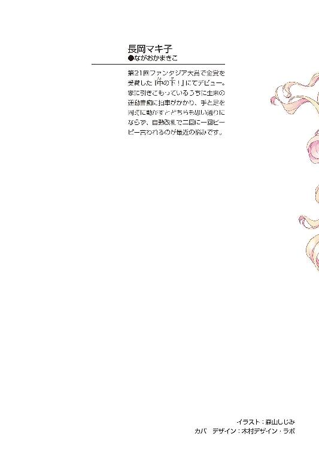
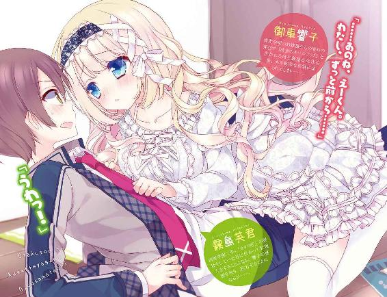
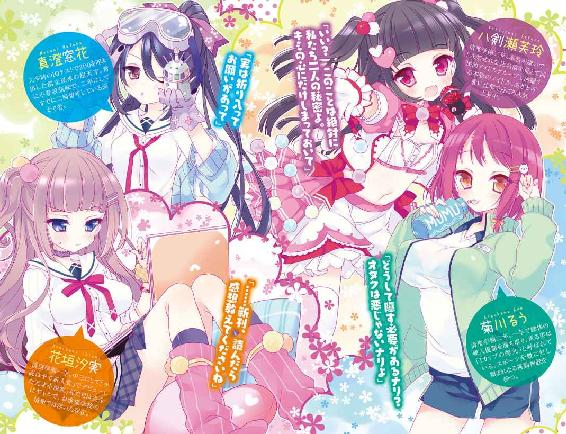
オタク荘の腐ってやがるお嬢様たち
長岡マキ子

富士見ファンタジア文庫
本作品の全部または一部を無断で複製、転載、配信、送信したり、ホームページ上に転載することを禁止します。また、本作品の内容を無断で改変、改ざん等を行うことも禁止します。
本作品購入時にご承諾いただいた規約により、有償・無償にかかわらず本作品を第三者に譲渡することはできません。
本作品を示すサムネイルなどのイメージ画像は、再ダウンロード時に予告なく変更される場合があります。
本作品は縦書きでレイアウトされています。
また、ご覧になるリーディングシステムにより、表示の差が認められることがあります。
口絵・本文イラスト 森山しじみ
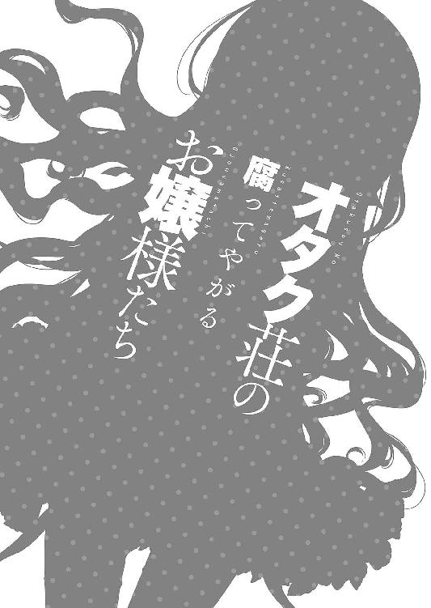
どれだけ願っても、手の届かないものがこの世にはある。
そんなものを夢見るほど、俺はもうガキじゃない。
かっこいいスポーツ選手にはなれないし、華やかな芸能界を目指すのも無謀だ。
凡人には、凡人にふさわしい生き方がある。
高校生活でも同じだ。
学園のアイドルとお近づきになりたいとか、あまつさえ彼女にしたいとか、そんなことは夢にも思っていなかった。
天上の星へは、一握りの選ばれた人間しかたどり着けない。
でも、もし、その星が自分の足元へ落ちてきたら？
君はそれを拾うだろうか？ そして、ポケットに入れる？
俺は。
俺だったら──......。
１
俺が通う高校には、小さな学生寮がある。
正式名称を清聖学園第一女子寮というその寮には、学校の創設者であるアメリカ人女性の名前から「オーガスタ・クリスタル荘」という名がついている。
オーガスタ・クリスタル荘は、その煌びやかな名前の最後についた「荘」の語が連想させる通り、オートロックやフローリングとは無縁の、昔懐かしい趣のあるアパートだ。悪く言えばちょっとボロいその寮を、清聖に通うお嬢様たちは、ほんの少しの揶揄する気持ちを込めて「オタク荘」と略していた。
けれども、俺が入学した辺りから、その略称はめっきり使われなくなった。というのも、現在「オタク荘」に住んでいるのは、オタクとは似ても似つかない、学校中が憧れる高嶺の花たちを一つところに集めたと言ってもいいほど選りすぐりの美少女ばかりだからだ。
まるで入寮資格にでも書いてあるかのように、今のオタク荘には美少女が集まっている。しかも、彼女たちはただ美しいだけではない。そのほとんどが何かしらの分野で全国レベルの知名度を持つ、カリスマ女子高生と言える美少女たちなのだ。
まず、入学したての一年生、花垣汐実。彼女は中三のときに「小説はやて」の新人賞で文壇デビューし、そのデビュー作が芥木賞にノミネートされた、今世間が最も注目する天才少女小説家だ。見た目はあまり知性を感じさせないギャルめいた風貌で、そのギャップがウケる層にはウケそうだ。
あとはみんな俺と同じ二年生で、中でも菊川るうとは、去年同じクラスで面識がある。
菊川は陸上部の短距離のエースで、昨年の総体の個人優勝を勝ち取った、トラック上のヒロインだ。走り以外の運動神経もずば抜けていて、球技会も運動会も、彼女がいるチームはそれだけで優勝間違いなしと言われる。有名大学からのスカウトもすでに来ているらしい。余談だが、彼女の走る姿は「Ｉカップの弾丸」と呼ばれ、放課後の校庭には他校から来た男子ファンが、連日、揺れるスポブラ巨乳目当てに金網に張りついている。
続いては、八剣瀬芙玲。ひどい名前だが本名だ。彼女は、学園のアイドルだらけのオタク荘の中でも唯一の、本物のアイドルである。
彼女が所属するのは、男性と付き合ったことがないという美少女だけで作られた国民的アイドルグループ、ＶＩＧ58だ。彼女自身の一般知名度はそれほどだが、あざといくらい可愛い仕草とアンテナのような黒髪ツーサイドアップがウケて、最近ファンの間で注目を集めているらしい。よほど自分の名前がイヤなのか、本名での活動が基本のグループ内で、珍しく「八剣せれな」という芸名を用いている。
最も異色な住人は、俺より二歳年上の「同級生」、真澄窓花だろう。
彼女は入学時のＩＱテストで前代未聞の二〇〇を叩き出して教師を驚かせた、世界レベルの天才だ。入学後は、企業と提携して始めた発明が忙しいとかいう理由で学校をサボりがちになり、困った親が彼女を通学時間ほぼゼロ分のオタク荘に入れるも、真面目に通学することなく留年。二回目の一年生では出席日数ギリギリに登校し、二年生に進級するとまた不登校になった。今年は二回目の二年生なので、去年よりは真面目に授業に出ると予想されているが、そういったレアキャラなので俺も彼女の姿は見たことがない。
そんな個性豊かな美少女たちの中で、特にこれといった一芸に秀でているわけではないが、すべてにおいて優秀で、少なくとも校内ではぶっちぎりの人気を誇る美少女がオタク荘にいる。全校でその名を知らない者はいないと断言できる有名人。
それが、生徒会長の御車響子だった。
「御車さま、二年生になってもお麗しいわぁ......」
本日、四月の登校日初日。今日も彼女は朝から女子たちの熱い視線を集めていた。
なぜ女子なのかというと、うちの高校は圧倒的に女子が多い。一年前まで「清聖学園女子高等学校」という名称だった、元・女子校だからだ。
清聖女子はキリスト教系のお嬢様学校で、首都圏にある我が県内ナンバーワンの女子進学校でもあった。その長い伝統と厳格な校風から特権階級に人気が高く、地元の名士や金持ちたちは、あえて娘たちを都内の女子校ではなく清聖に入学させたという。
そんなお嬢様学校が、不況か少子化のあおりか、はたまた時代の流れに逆らえなかったのか、一昨年ついに男子生徒の募集を開始した。
当然、入試会場にはやましい気持ちを抱いた男子生徒たちが詰めかけると思われたが、世間の多数派は案外慎重で現実的だったようだ。
大々的に募集をかけたのに、入学した男子はたった十名ちょっと。数名ではあまりに格好がつかないと思ったのか、男子受験者はほぼ全入で、俺のように偏差値的に難のある生徒もなんとか入学することができた。あるいは、俺には「オタク荘の寮母の息子」ということで、温情も加えられたのかもしれない。
そう。俺は全校生徒憧れの美少女たちが住むオタク荘に、中学の時から住んでいる。あくまでも、寮母である母と同居する形で、であるが。
──第一志望、清聖にしなさいよ～！ 交通費ゼロだし、あんたが清聖生になったら、アタシも色々とベンリだし。
共学化の知らせが発表されたとき、母は俺に受験を猛プッシュした。
──俺には無理だろ！ 偏差値七〇とかだし、身の程知らずにも程があるって！
あのとき、もっと強く撥ねつけていれば、今ごろ俺は身の丈に合った学校で落ちこぼれらしい高校生活を送っていただろう。どうせ落ちるから記念受験するかと母に用意された願書を送ったことで、俺の人生は一変した。
俺のあの主張は間違っていなかった。この学校の生徒たちは、俺にとって別世界の住人だ。清聖に入らなかったら一生かかってもすれ違うだけだったお嬢様たちが、級友として同じクラスで机を並べている。それは庶民の俺にとってハーレムなんてオイシイ状況ではない。一言でも言葉を交わせば、育ちの悪さが見破られるのではないか、お嬢様たちに白い目で見られるのではないかと恐れ、なるべく注目されないよう気配を消して過ごしてきた。一年経った今も、その状況は同じだ。
ましてや、オタク荘の住人たちは別格だ。彼女たちの存在はあまりにまぶしすぎて、お近づきになる妄想をすることすら、俺の経験と想像力では到底叶わない。
幼い頃は、手の届かない世界を思い描くことが好きだった。
俺の母には結婚歴がないので、物心ついた頃から父親がらみのことではしょっちゅうイヤな思いをしてきた。そんなときには一人になれる場所に行って、頭の中で戦隊ヒーローや覆面ライダーになり、時にはモンスタートレーナーとしてボールから仲間を出し、ムカつくやつらを脳内でフルボッコにしてやった。
妄想力が高レベルに羽ばたいた中学時代は、今思うと目も当てられない。幼少のときとは違って、正義の味方でなく、悪者のボスやピカレスク物の主人公にハマって痛々しさは倍増した。少年漫画の必殺技名を叫びながら体育の授業をして、休み時間になると「クッ......少し長くこの身体でいすぎたか......！」などと言ってトイレに駆け込み、昼には「食物の定期的な経口摂取は、この世界でのならわし。ならば従うか......」と給食を貪っていた。それだけでは飽き足らず、「†戒堂裂夜†」というハンドルネームでブログを開設し、自作のポエムやかっこいいバトル漫画の詳細な設定を上げたりしていた。闇に覆われし我が漆黒の歴史だ。
高校受験で奇跡的に清聖に合格してから、俺はそれらすべての趣味を封印した。部屋中の漫画を古本屋へ持って行き、少ない小遣いを貯めて買ったゲームソフトは本体ごと中古ショップに売り払った。俺なりに、清聖の雰囲気に馴染もうとしての行動だった。
というのも、清聖はオタクには大変厳しい環境で、そのせいかオタクはまったくと言っていいほど見当たらない。校内には、学業への集中を妨げる漫画やＤＶＤなどの娯楽媒体はもちろん、アニメイラストのついた下敷きやキーホルダーなど、キャラグッズの持ちこみまで徹底的に禁じられている。万が一違反する生徒がいれば、風紀委員の役割も兼ねた生徒会のメンバーに即座に取り締まられる。中でも会長の厳しさは有名だった。
その生徒会長、御車響子が今、俺の隣の席に座っている。
緊張で、さっきから自分の持ち物を頭の中で確認しているが、漫画やゲームの断捨離に成功し、一切のオタク関連物から距離を置いた結果、今や俺は成績が少々落ちこぼれすぎていることを除いては、完全にごく普通の男子高生だった。
（パンピーの生活ってのは、思ったより退屈だけど......）
期待に胸を膨らませて入学した清聖だったが、この一年ずっと、なんとはなしにそう感じていた。数少ない男子が集まると、くだらない悪ふざけか女子の話。それもしょせんお坊ちゃんの会話だから、品がよすぎて参加するに値しない退屈さだ。あんな連中とつるんだところで、学園生活が楽しくなるとは思えない。
というのは強がりで、本当は、俺がお嬢様に恐れをなして縮こまっている傍ら、同性の少なさを大義名分に女子と交流し、次々に彼女を作る他の男子が妬ましくて、つい「あんな軟派な奴ら」と意固地になり、男友達すらできないまま二年になってしまったのだ。
要するに、俺はぼっちだった。
「......見て、御車さまが聖書を取り出されたわ。本鈴前にもう礼拝のご用意かしら」
馴染みのない顔ぶれの級友たちを前にして浮足立った教室で、前の席の女子たちがこちらを振り返り、俺の隣を見てひそひそと囁く。
「違うわ、あれは『御車バイブル』よ。ご存じないの？」
「あの、学園のルールブックたる御車さまが校則を記したという、聖書形ノート？」
「そう。校則を破った生徒に、違反した項目をお見せするのよ」
「まあ。では、今どなたかが御車さまからのご注意を受けるということ？」
誰かがそう言うと、途端に周囲は落ち着きを失う。
「わたくしかしら？」
「いいえ、わたくしよ！」
「わたくしに違いないわ。今朝はスカートを二センチも短くしてしまったもの」
「まあ、なんて悪いお方！」
周りのざわめきで、俺の心臓もドキドキしてくる。
巷で言われる「才色兼備」の女子なんかそこらじゅうにゴロゴロしている清聖校内で、ひときわ目を引く類まれなる美貌。学年一位の成績。超有名な華道流派の家元の一人娘という家柄。そして、一年生にして生徒会の副会長になり、あまりの人気ぶりに会長が一年早くその座を譲り渡したカリスマ性。
重ねて言うが、そんなスーパー美少女、御車響子が今、俺の隣の席に座っているのだ。清聖は一クラスの男子生徒数が少なすぎるため男女で机を並べることができず、席次は最初からクジ任せの完全ランダムだ。同じクラスになれただけでも僥倖なのに、俺は本当に運がいい。一生分どころか来世の分のクジ運も使い果たした気分だ。
「あっ、御車さまがこちらを向かれたわ......」
俺の右隣にいる女子が興奮気味に呟いた。周囲が固唾を呑み、一瞬の沈黙が流れる。
「......ちょっとよろしいかしら？」
左から、ハープの調べにも似た現実味の薄い美声が聞こえてきた。
「............」
それに答える者はいない。俺は正面を向いたまま机の上に視線を落としている。
「寝ているの？......聞こえないのかしら、彼」
ハープの調べが、訝しげな音色を帯びる。
「彼」？
半径二メートル以内に他の男子はいない。まさか......。そう思って、握った拳に汗をにじませる。周りからの無言の圧力を感じて、おそるおそる左へ首を回した。
「......俺、ですか......？」
見た、見てしまった。
御車響子。誰もが憧れる学園のマドンナ。俺とは別世界の生き物。
女子は言う。「その存在が、芸術」と。
男子は、憧れながらもこう思う。「その存在が、ツッコミどころ」と。
華奢な肩に降りかかる、カールのかかった長いブロンド。リボンの中央をばかでかい宝石のブローチで留め、襟元や袖にふんだんにフリルをあしらった貴族風セーラー服は、清聖の制服を作った有名デザイナー本人に発注したオートクチュールらしい。確かに、装飾をすべて取り去れば他の女子たちと同じ格好になる気がする。染毛禁止、肩につく髪はゴムで結ぶことが校則になっている校内で、ダントツに浮いた存在であるのは間違いない。
これが「清聖のルールブック」であり、風紀委員の役割も兼任する厳格な生徒会の長、御車響子の姿である。
「そう、あなた」
御車響子はまっすぐ俺を見つめていた。目が合った瞬間、ビリッと脳みそに高圧電流が流れ、全身の機能が停止して彼女を凝視してしまう。
大きな目に嵌まった瞳は胸元の宝石にも負けないくらい澄んで輝き、小さな顔に完璧なバランスで並べられた他のパーツも、ミルクのように滑らかで白い肌も、そのすべてが崇拝に値する美しさだ。
そんなマリア像のごとき美貌の彼女の眉間に、一筋の皺が寄った。
「......ちょっと、耳を見せていただけるかしら？」
「えっ？」
俺の返事を待たずに、彼女は椅子から腰を浮かせ、こちらへ身を乗り出してくる。
「............」
首筋に息吹を感じそうなくらい、彼女の顔が近くに寄ってきた。俺は正面を向いて凍りつく。周囲の女子たちの猛烈な嫉妬のまなざしを感じる。
「......あなた、ピアス穴を開けていない？」
思いがけないことを言われて、思わず自分の耳たぶを触った。
「えっ!? いや、そんなことは......」
「でも、開いているように見えるわ」
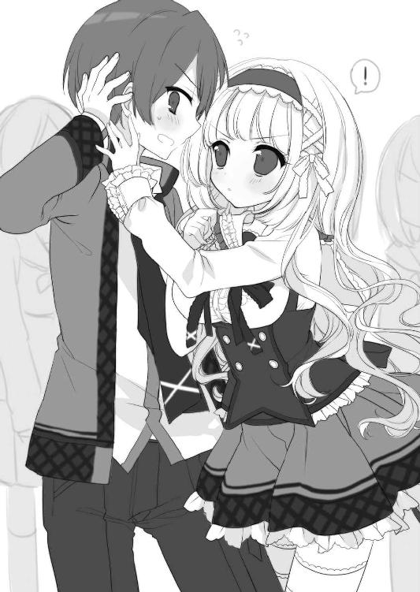
「......この傷のことだったら、これは中一のとき、酔っぱらって帰ってきた母親に、寝てるところをふざけてピアッサーでやられた痕で......」
恥を忍んで正直に説明したのに、彼女の眉間の皺はますます深くなる。
「お母さまが？ どうしてそんなことを？」
「うちの親、ちょっとヤンチャなんで......。でも、もう完全に塞がってます」
「わたくしが注意した方、みなさんそうおっしゃるわ。ちょっと待って」
そう言うと、彼女はスカートのポケットからフェルトの切れはしを取り出した。そこには生徒会長に似つかわしくない代物──小ぶりのピアスが一つだけ留められている。アクセサリーの所持は校則違反なのでは......と思ったが、会長が治外法権なのは彼女の姿を見れば一目瞭然だった。
「本当に貫通していないか、調べさせていただくわ」
「えっ!?」
会長本人による厳しい身だしなみチェックは、噂には聞いていた。一年のときには彼女とクラスが離れていたので、その様子を間近で見たことはなかったが。
「失礼するわ」
そう言うと、彼女は俺の耳たぶをつまんだ。細い指先から伝わる低めの体温が、薄い皮膚に柔らかく溶けていく。
「......本当ね。通らないみたい」
心臓のドキドキが最高潮に達した頃、その指は耳から離れた。
「疑ってごめんなさい。証明書を差し上げるわ」
椅子に座り直した御車響子は、『御車バイブル』の後ろの白紙ページに何かさらさら書きつけ、心なしか不器用そうな手つきでビリッとちぎった。
（『バイブル』破っちゃっていいのかよ!?）
焦って辺りを見回したが、そんなことにツッコミを入れているのは俺だけらしい。周囲の女子たちは彼女の一挙手一投足にうっとりと見入っていた。
「なんて羨ましい......」
「でも、意外だわ。霧島さんって確か、孤高を信条として男子のお友達すら作らない、学年一の硬派と評判の殿方よ。違反とは無縁そうなのに」
そんなつもりはまったくないが、どうやらそれが俺の清聖生による評価らしい。
「いずれにしても妬ましいわ。わたくしも欲しいのに、御車さまの証明書......！」
「わたくしも耳たぶに針を刺してみようかしら......」
怖い......。
横顔に、背中に、三百六十度すべての方角から女子たちの怨念すらこもっていそうな視線を感じる。入学して丸一年、今この瞬間ほどいたたまれない思いをしたことはない。
（でも、ほんとにこんなもの欲しいか......？）
「はい、どうぞ」
いたって真剣な面持ちで彼女から手渡された紙きれには。
左耳、ピアス穴なし。
ただし、一ヶ月ごとにわたくしに点検させること！
生徒会長・御車響子
習字の心得もありそうなイメージ通りのきれいな字で、そんな文言が記されていた。名前の部分に重なるように、彼女の拇印らしき朱色の指紋が押されている。
「......ところで、あなた。霧島さんでよろしいかしら？」
なんとなく小さい頃のままごと遊びを思い出して懐かしい気持ちになっていると、御車響子にそう訊かれた。
「え？......は、はい」
俺が頷くと、彼女は少し身を乗り出す。
「名簿でお名前を拝見したときから気になっていたのだけれど......もしかして、うちの寮母の逸子さんの？」
「息子......です」
「まあ、やっぱり！」
驚きで開いた口を隠すように顔の前で五本指を広げ、御車響子は俺を見つめた。
「なんてご縁でしょう。新しいクラスでお隣の席だなんて」
「そ、そうですね......」
信じられない。俺を知ってくれていて、こんな風に話しかけてもらえるなんて、夢のように嬉しい。けれども、女子からの呪いが怖くて、微笑もうとした口元は見事に歪んだ。
「よろしくお願いしますわね、霧島さん」
桃源郷の果実のような瑞々しい唇をほころばせ、御車響子は俺に微笑んだ。心の中に、えもいわれぬ熱い想いが広がっていく。
俺はオタク荘の一階にある寮母の部屋に住んでいるけれども、女子寮であることを配慮して、寮生とは顔を合わせないよう、勝手口から直接出入りしている。現に、今まで寮生たちと言葉を交わすような機会はなく、このまま残りの二年間を経て卒業するのだと思っていた。そして、そんな退屈な高校生活の中で、おそらくその他大勢の男子と同じように、俺はなすすべもなく御車響子に憧れていた。
もしかしたら。こんな夢のようなことが毎日続いてくれたら......今年はひょっとしたら、ちょっとだけつまらなくない年になるかもしれない。
愚かにもそんな期待をしてしまった俺に、神様はそこから怒涛のサプライズをプレゼントしてくれるのだ。
□
その日の放課後、オタク荘に帰宅したときのことだった。
「ただいまー、今日も疲れた......」
学校で絶えず気を張っているのは骨が折れる。本当は周囲のお嬢様たちが動くたびに漂ういい香りに鼻の下が伸びそうになったり、床に落ちたえんぴつを拾おうとした前の女子のスカートのひらめきに釘づけになりそうになっているのに、ボロを出すまいと頑なに興味のないふりをして黒板や教壇の先生を見ているだけでも血涙が出そうに辛い。
そんな努力の対価が「学年一の硬派」という評判だと思うと、なんだか複雑な気分だ。
「母さん？ なんか食べていいもんあるー？」
勝手口から入り、靴を脱ぐ前に居間の方へ視線を向ける。そこで気がついた。
部屋の中が、やけにがらんとしている。奥にある俺の部屋は襖が閉まっていて見えないが、台所も居間も家具以外のものがすっきり片付いて、まるで引っ越し前日のように生活感が消え失せていた。
「......ヒデくん？」
勝手口に立ったまま首をひねっていると、ドアが半開きになった洗面所から母の声が聞こえた。続いてそのドアが開き、声の主が居間に現れる。栗色のロングヘアと大ぶりのピアスがあまりアラフォーの母親らしくない、俺のたった一人の家族だ。
「お帰り～！ 新しいクラスどお？」
「うん、まあまあ......っていうか、どうした、その荷物!?」
母はその手に、パンパンに中身の詰まった革の旅行鞄を提げている。
「え？ ああうん、今から出るところだったから」
「出るってどこに？ 聞いてないよ」
「だって言ってないもん。恥ずかしいじゃなぁい」
母はブリッコのようにウフフと笑い、俺の背筋がゾクッとする。
「......実はね、アタシ、新しいカレシができたの」
「えっ!? っていうか、前の人と別れてたの!?」
「そおよぉ、やっぱこぶつきはイヤだって。ヒデくんのせいなんだからねー！」
大人げなく頬を膨らませる母を、俺は逆にエイッとにらみ返す。
「はあ？ いつも好き勝手やってて、フラれたときだけふざけんじゃねーよ」
「やだあ、怖い顔～！ それに親にそんな口！ 躾けた人の顔が見たいわぁ～！」
「ほら、そこに鏡があるだろ」
この母の言うことをいちいちまともに取り合っていたら話が先へ進まない。さっさと靴を脱いで、部屋に上がった。
「......で、母さんはこれからどこに行くわけ？」
「あ、その前に一つお願いがあるんだけど、聞いてくれる？」
「いいけど、何？」
「大したことじゃないの。これからしばらく、アタシの代わりに寮母やってくれない？」
それはまるで「ちょっとコンビニで牛乳買ってきてくれない？」と言うような気安い口調だったので、危うくあっさり頷くところだった。
「それはいいけど......って、えっ!? な......なんだって!?」
「アタシ、これからカレんちに行くことになってるの～！ 『一緒に暮らそう』って言われちゃって」
「ハァあああああああああ!?」
「ヒデくんも連れて来ていいよって言われたんだけど、最初くらい二人っきりで過ごしたいじゃない？ カレと法的にゴールインできたら一緒に暮らそぉね！ ああ、憧れの主婦生活だわぁ～！ それまでは一応、寮の仕事も辞めれないしね」
「『一応』じゃなくて、それが第一だろ！ なんだよ急に！」
いくらなんでも、社会人として責任感がなさすぎる。
「大人なんだから、そういうところはちゃんとしろよ！ 母さんの店が潰れたあと、俺らがこの二年半安定して生活できてたのは、ここの寮母に雇ってもらえたおかげだろ!?」
「違うわよぉ、アタシが毎日毎日、寮の子たちにご飯作ったり、大量のゴミ出ししたり、一生懸命働いてきたからでしょ？ そのおかげでヒデくんも学校通えて、ご飯食べられたんでしょ？ だから、今度はしばらくヒデくんが働く番ってことでいいじゃない？」
「............」
一瞬「そうなのか？」と思いかけて、いやいやと頭を振った。
「寮母は母さんの仕事だろ！ 俺、男だし！ 女子寮の寮母なんかできないって！」
「そんなことないわよぉ。仕事なんて寮の子たちの朝食、夕食作りと、週二回のゴミ出しくらいしかないのよ？ ああ、あと大玄関の戸締りね。まあそれはテキトーでいいから」
「そういう問題じゃなくて......」
「ああ～！ もしかしてぇ、あれだ！」
ニヤッといやらしい笑みを浮かべて、母は俺を指差す。
「寮の子たちと『マチガイ』犯しちゃうとか？ そんなこと心配してる？ ヒデくんもお年頃よねぇ～！」
「ち、ちげーよ！」
御車響子のことを思い出し、意図せず顔が赤らんだ。
「だいじょぶよ～、ヒデくん、女の子に無理矢理ヘンなことできるような子じゃないし？ 両想いならそーゆーことあってもいいんじゃない？ じゃ、アタシそろそろ行くから」
人がうろたえているのをいいことに、母は話の間に床に下ろしていた旅行鞄を掴んでそそくさと靴を履く。
「じゃあねぇ～！ 今日の夕飯は、もう食堂に用意しといたから！ ヒデくんの分はそこの冷蔵庫にあるからチンして食べてね！ 明日は日曜だから朝食ないし、みんなの分のご飯は明日の夕飯からお願ーい！」
「いや、俺、料理なんかできな......」
「だいじょぶよぉ、レッツトライ！ 最初はみんな初心者だからガンバッテ！」
朗らかに言って手を振りながら、母は俺の隣をすり抜けて勝手口を出て行った。
「............」
最後は言葉も出なかった。口をあんぐり開けて、母が出て行ったドアを見つめることしかできない。
「あっ、そうだ！」
「うわっ！」
そのドアがいきなり開いて、母が再び顔を出した。
「最初の仕事よ～、ヒデくん！ そこの箱、生徒さんの部屋に届けてくれる？」
「えっ？」
母の視線を追って振り返ると、部屋の正玄関の方に段ボール箱が置いてあった。
「御車さん宛てに届いた荷物だからねー」
ドクッ、と自分でも驚くほど心臓が大きく跳ねた。
「じゃあね～、よろしく！」
バタンとドアが閉まる音で、我に返った。
「えーっと......これはどういうことだ......？」
頭の中で状況を整理していると、発生した事態のわりには、自身が冷静なことに気づく。
母の仕打ちはありえないし、にわかに信じがたい。けれども、あの母だったらいつかこんな最低なことをやらかしてくれるのではないかという懸念は常に心のどこかにあった。
とりあえず荷物を調べに行くと、それはリンゴが二ダースほど入りそうな大きめの段ボール箱で、側面に「鳴亀堂」と書いてある。伝票の品名には「書籍」と記されていた。
「本屋から参考書でも買ったのかな......？」
彼女の好成績の秘密が、もしかしたらここにあるのかもしれない。それにしても、どっさり買い込んだものだ。
「......いつ届けよう」
今日は土曜日で、どの学年も顔合わせだけの進級初日だから、部活や委員会活動も始まっていない。生徒会長の彼女も用がなければ帰宅しているはずだった。
──よろしくお願いしますわね、霧島さん。
彼女の女神のような微笑みが、まだ目の前にちらついている。
「............」
早くこれを届けてしまわないと、他のことが手につきそうになかった。
予想はしていたが、本がみっちり詰まっているらしい段ボール箱は非常に重かった。
「よいしょっと！」
それを抱え、ここへ引っ越してきて初めて、廊下側の正扉から部屋を出る。オタク荘は二階建てで、一階にあるのは玄関ロビーと２ＤＫの寮母の部屋、それに寮生の食事のための食堂と大台所である。寮生の部屋は二階だけで、一階も二階も、共用空間はスリッパ履きが基本だ。廊下に置いたままだった母のスリッパを突っかけて、俺は数段ごとに休みながら階段を上った。
二階には、等間隔に並んだ部屋のドアがあり、表札代わりのプレートがついている。その中の、階段の右側、東の角部屋に「御車響子」のプレートを見つけ、箱を持って奥へ進んだ。
動悸がするのは、重い荷物を持って階段を上りきったせいだけではない。
「......御車さん」
ドアの前に立って、まずは箱を持ったまま声をかけた。すぐに手が痺れたので、廊下の床に箱を置く。
「御車さん？」
手が空いたので、今度はドアをノックして呼びかけた。
「霧島です。荷物を届けに来たんですけど......」
耳を澄まして、少し待つ。中から返事はない。
「......どうしよう」
こんな重たい荷物、一階へ持ち帰って出直すのは正直面倒だった。かといって、個人の荷物を共用部分の廊下に放置するのもどうかと思う。
「まだ帰ってないのかな......」
鍵が開いてたら玄関に入れて帰れるのになと思って、軽い気持ちでドアノブを回した。すると......。
「えっ!?」
なんの抵抗もなく、ノブはくるりと回りきった。
「............」
試されている、と思った。いくら施錠を忘れていたからといって、自分がいない間に俺が部屋に入ったと知ったら、帰ってきた彼女はきっと気持ち悪がるだろう。
（......待てよ）
でも、彼女はまだ俺の母が寮を出て行ったことを知らない。荷物を寮生に届けるのは寮母の仕事だから、部屋に入ったのは当然母さんだと思うだろう。
それに、以前あの母はこんなことを言っていた。
──試験中だからって、誰も廊下にゴミ出さないのよぉ。みんなが学校行ってる間に勝手にゴミ取っちゃおうかな～。お嬢様って不用心だから鍵かけない子が多いのよね。
「......うん」
これなら大丈夫だ。勝手にドアを開けて荷物を玄関に入れるくらい、あの無神経な母ならやりそうである。
「し、失礼しまーす......！」
誰かに見られたときの予防線として、一応声をかけながらドアを開ける。
学園中の憧れ、男子はもちろん女子にも絶大な人気を誇るカリスマ生徒会長、御車響子の部屋......それは一体どんな素敵空間なのだろう。
体中の血液が逆流しそうなほどの興奮を胸に秘め、おごそかな気持ちで一歩中に足を踏み入れた。
そして。
その先に。
広がっていた。
光景は............！
「うぐぉあええええ◇％◎△●□!?」
自分の口から、聞いたことのないような叫び声が出た。
「......なんだこれ......」
空き巣だ。冗談抜きに、そう思った。
玄関と部屋を繋ぐ短い廊下の左手にバスルームのドアが見える、六畳の畳敷きワンルーム。ドアを開ければ中が丸見えになってしまうそこに広がっていたのは、物盗りにあったとしか思えないほど散らかった部屋だった。
しかも、だ。
「なんだあれ......漫画......？」
数種類の少年漫画誌が、種類ごとに堆く積まれて高層ビル街の様相を呈している。雑誌だけでなく単行本もあって、そちらはシリーズごとに壁の本棚にびっしり並んでいた。
「おおお......！」
一瞬にして胸の奥から懐かしい気持ちが湧いてきた。俺も好きだった有名タイトルもあり、手に取って読み始めたい衝動にすら駆られる。が、ちょっと待て。ここはどこだ？
「御車響子と、漫画......？」
校内への娯楽物の持ち込みを禁じ、漫画の貸し借りすら認めず、生徒の持ち物検査に精を出す彼女にはまったく似つかわしくない。女子が九割の清聖生から没収したものにしては、少年向けばかりなのも気になる。
それだけではない。部屋の中央にある低い丸テーブルの上と下と畳の全面、廊下の床にまで、真っ白いコピー用紙大の紙が散らばっている。よく見ると物が多いだけでそれなりに整理整頓されている部屋を、やたらと散らかった印象にしているのはそれだった。
足元の一枚に手を伸ばし、拾い上げる途中で気づいた。これは漫画原稿だ。しかも......。
「......ひぃいいいいぃっ！」
気づいた瞬間、再び勝手に悲鳴が出た。
その原稿用紙には、下描きの上からペン入れされた漫画が描かれている。素人の作品だとしたら異様に絵が上手いが、問題はそこではない。
『でも、俺たち友達だし......男同士だよ？』
『それでもかまわない。俺はお前が好きだ』
吹き出しに書かれた鉛筆書きのセリフは、今朝、御車響子からもらった「証明書」のものとそっくりのきれいな字だった。
「び、びーえる......」
頭がくらくらした。
ボーイズ・ラブ、通称ＢＬ。詳しいことは俺も知らないが、女性オタクの間で昨今流行しているという、男同士の恋愛を描いた漫画や小説のジャンルだ。
この部屋に漫画誌があるだけで驚きなのに、そんなマニアックな趣味を、まさか......。
信じない。そうだ、あれもこれも全部、没収品に違いない。
だって、彼女がオタクだとしたら、俺は何のためにオタクを卒業したんだ。清らかな心を持つ清聖生に憧れ、その代表である彼女を一方的に慕っていた俺は......。
「......と、とりあえず荷物を置いて帰ろう」
そうだそうだ、それがいい、と独り言を言いながら、廊下へ段ボールを取りに行った。手と足が同時に出て、矯正しようとしたらなぜか口から舌が飛び出た。さっきまでとは違う意味で心臓がドコドコして、脳から身体への指令がうまくいかない。
「よいしょっと......」
段ボール箱を持ち上げ、部屋の中を向いた。
「............」
やっぱり夢じゃなかった。部屋には漫画と、散乱したＢＬ原稿がある。
「しっ、失礼しました！」
さっさとここから逃げようと、段ボール箱を玄関内に置こうとしたとき。
「うわあっ！」
ドアと廊下の間にある床の出っ張りにつまずいて、身体が宙に投げ出された。
ドボサッ！
手から勢いよく放たれた段ボール箱が、部屋の中へ飛んでいく。おそらく運ぶ途中でガムテープがはがれかけていたのだろう。不運にも蓋が開いて、中身が部屋にぶちまけられた。
中から出てきた本は、たぶんＢＬ同人誌。薄いＢ５判の冊子が何冊も宙を舞い、その表紙のすべてに男同士がいちゃつくイラストが描かれている。
前のめりになった身体が玄関の床に倒れるまでの刹那、そんな光景をスーパースローカメラの映像のようにやたらゆっくりとした時の流れの中で見ていた。
「......ううっ......」
久方ぶりに、転倒と呼べる転倒を経験した。思いきり両膝を打って、お皿の部分がジンジンする。目の前で「ガチャッ」という音が聞こえた気がしたけれども、声も出ないほどの痛みにもがき苦しんでいてそれどころではない。
ようやく人の気配に気づいたのは、その声が聞こえたときだった。
「霧島さん......？」
ハープのような癒しの調べ。この美声の持ち主は......。
「......!?」
勢いよく顔を上げると、そこにいたのはやはり御車響子、その人だった。
「う......うわっ！ ごっ、ごめ......！」
床に伏せる格好で倒れていた俺は、彼女を二度見して跳ね起きた。
彼女は服を身に着けていなかった。正確に言えば、バスタオル一枚を胴に巻いて、おそらく素肌と思われる身体の大事な部分だけを覆っている。すらりとした美しい手足と、産毛の一本すらなさそうな透明な素肌がまぶしくて直視できない。
たぶん、彼女は今までバスルームにいたのだ。しどけなく濡れたブロンドの毛先を見てそう思った。
「すっ、すいません！ 俺が母で、これから彼氏とＢＬで！ 荷物を......！」
自分でも何を口走っているのか意味不明だった。
「荷物......？」
訝しげに首をかしげた彼女が、俺の見ている方向......部屋の中へ目をやった。
「あっ......！」
そうして、次の瞬間。
「きゃあああああああああああああああっ！」
癒しの美声が、超音波のような金切り声を紡ぎ出した。
「見ないで！」
「見てない！ まっっったく見てません！」
彼女のまぶしい裸体から顔を背けて手を振り、必死に見てないアピールをする。
「ウソよ！ 見たでしょ！ まだ誰にも見せたことがないのに！」
「見てない！ ほんとに全然見てない！」
「ひどいわ！ しかも男の人に見られるなんて......！」
「だから見てないってば！」
見たいけど！ ほんとは死ぬほど見たいけど......！
「ウソよ！ だってあなた今、ＢＬって言ったじゃない！」
「えっ......？」
裸の話だと思っていた俺は、そこで彼女の方に顔を向けた。
「うわっ！」
だが、一瞬で再び顔を廊下へ向けた。びっくりして死ぬかと思った。
御車響子は全裸だった。バスタオルを投げ捨て、床に這いつくばって四肢を広げ、彼女が必死に隠していたのは......。
「見たんでしょう、わたしの漫画！ インクを乾かすために広げておいたのに......！」
散乱した漫画原稿だったのだ。
「しかも、わたしがネットで買った18禁同人誌まで！」
「えええええっ!?」
「バカっ！ カバっ！」
ドコドコと足音がして、頭を何かで猛烈にはたかれる。見ると、全裸の御車響子が床に散らばった同人誌を拾って得物にしているのだった。
「うわっ！ やめろって！ っていうか何か着て！」
「えいっ！ バカっ！ 死ねっ！」
しかし、平素からの育ちのいいおっとりとした物腰のせいか、その言葉にあまり迫力は感じられない。
「うわあああん！」
とうとう、御車響子は手にした同人誌を放り出して床に突っ伏した。
「笑うんでしょ、あなた。真面目で風紀に厳しい生徒会長が、自分で同人まで描いちゃってる痛々しいＢＬ好きの腐女子だったなんて！」
「い、いや、笑わないよ......」
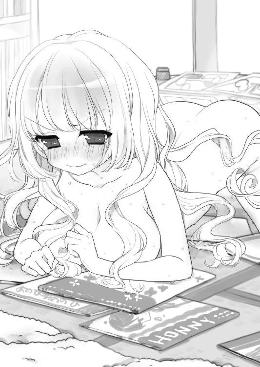
っていうか笑えない。それより心臓に悪いので、とにかく何か羽織って欲しい。
「こんなの知られたらおしまいだわぁああ！ 会長の威厳失墜よぉぉおう」
「じゃ、じゃあ声小さくした方がいいんじゃ......！」
とりあえずこんな場面を他の寮生に見られたらコトなので、立ち上がって玄関のドアを閉めた。すると、御車響子は顔を撥ね上げて俺を見る。
「な......何!? ドアなんか閉めて、何をするの!?」
「ええっ!? 別に何も......」
「わたしに乱暴なさるの!? エロＢＬ同人みたいに！」
「しないよ！ っていうかなんでＢＬなんだよ！」
「えっ......違うの？」
御車響子は、拍子抜けした顔になる。
「おかしいわ......。こんなときは『そんな格好見せられたらガマンできねーよ。いいよな？』『ああ、俺もお前のことが好きだよ......』とか言って18禁シーンに突入するのに」
「だから、なんでＢＬなんだよ！」
ツッコんでいるうちに、いつの間にかタメ口になっていた。
「なんでって......わたし、恋愛漫画はＢＬしか読まないし」
気まずそうにモジモジして、御車響子は自分の胸の辺りを隠す。ようやく自分が裸であることに留意してくれたようだ。
「ほ、ほら、これ！」
テーブルの下にバスタオルを見つけたので、急いで取りにいって渡してやった。
「今日からちょっと母さんが家を空けることになって、その間、俺が寮母の仕事をすることになったんだ！ 君宛ての荷物を届けに来たんだけど、留守かと思ったから置いて帰ろうとして......勝手にドアを開けたのは悪かったよ。何も見なかったことにするから！」
やけくそのように一気に言って、彼女の横を通って玄関へ向かった。
あの御車響子がオタク、それもＢＬ好きの腐女子だった......。
......ショックすぎて、なんと言っていいのかわからない。俺の中の完璧なお嬢様、御車響子像が、ガラガラと音を立てて崩れて行く。
「あっ、ま、待って！」
抜けがらのように放心しつつドアを閉めようとしたとき、御車響子が叫んだ。振り返ると、彼女は最初に見たときのようにバスタオルを身体に巻いて立っていた。
「ねえ......気持ち悪いと思った？」
「えっ......な、何が？」
俺が訊くと、彼女はそっと俯いた。その表情はいつも学校で見るような凜としたものではなく、不安に曇り、消えてしまいそうに自信なさげだ。
「わたしのこと......。ＢＬ漫画なんか描いてて、ＢＬ同人誌も集めてて、軽蔑なさったんじゃないかしら？」
「い、いや......軽蔑までは行かないけど」
非常に驚いたし、だいぶガッカリしているのは事実だけれども。
「君が......オタク、だなんて夢にも思わなかったから......ただ、びっくりして......」
「......ＢＬは？ どう思う？」
「えっ？」
「やっぱり男の人にとっては気持ち悪い？ 腐女子を憎んでらっしゃる？」
「憎むって......」
別にそこまで強い嫌悪感があるわけではないが、なんとなく気持ち悪いと思っているのは事実だ。でも、そんなあからさまなことは言えない。
「......今まで見てこなかったジャンルだし、よくわからないな......。別にＢＬじゃなくても、興味がないから見たくないものってあるだろ？ そういう意味で、敬遠してるけど」
「......そう」
俺の答えに納得してくれたのか、彼女は顔を上げた。
「ありがとう。わかったわ」
その顔は、さっきよりいくらか晴れ晴れとしている。
「じゃあ、そういうわけだから......」
まだ心臓がバクバクしている。今度こそ帰ろうとドアを閉めかけたとき、またしても彼女の声が飛んできた。
「待って、えーくん！」
それを聞いて、ドアを閉めようとしていた手が止まった。
「え、えーくん......!?」
「えーくんでしょう？ 霧島英君。部屋のプレートでいつも見ていたわ」
「いや、俺の名前は......」
「『ひできみ』と読むのはわかっていたの。でも、響きがいいから、心の中でずっと『えーくん』とお呼びしていたのよ」
俺の言葉を遮った彼女は、きらきらした笑顔でそう言った。
どうしよう。でたらめに可愛い。
「............」
惚れるな、英君。これは望みのない恋だ。そして、この天使のような美少女はオタクで、自分でＢＬ漫画を描いてしまうくらいの腐女子なのだ。
「あっ、いつまでもこんな姿では失礼よね。ちょっと待っていらしてね、えーくん！」
そう言うと、彼女はバスルームに引っ込んだ。激しい衣擦れの音が聞こえたかと思うと、続いて何かぶつぶつ呟いている声が聞こえてくる。耳を澄ませると、どうも「これはチャンスよ。勇気を出して、響子！」などと言っているようだが......？
「......お待たせ、えーくん！」
バスルームのドアが開いて、御車響子が飛び出てくる。彼女は、レースとフリルが至る所にあしらわれたお嬢様風ワンピースに着替えていた。飛び出た勢いでそのままこちらに来た彼女は、廊下に散らばっていた同人誌を踏んで前に軽くつんのめる。
「きゃっ！」
「えっ!? だいじょぶ......」
反射的に駆け寄ろうとした俺の足元が、ありえないくらいするっと滑った。
「うわっ！」
自分も同人誌を踏んでしまったのだと気づいたときには、俺は倒れ込んできた彼女を抱き留める格好で床に滑り込んでいた。
「......いたた......」
完全に頭を打った。御車響子の下敷きになったので、彼女が着地した胴体も痛い。
下敷き......!?
ドキン、と心臓が大きく鼓動する。苦痛で瞑っていた目をおそるおそる開けると、俺の視線のまっすぐ先に、御車響子の綺麗な顔があった。彼女は俺の腹部に馬乗りになる形で座り、驚いたように目を大きく開いて、真下にいる俺を見つめていた。
俺の胸に載せられた彼女の両手から、ドキドキが伝わってしまわないだろうか。彼女の太腿が触れている脇腹が熱い。俺と目が合うと、彼女はほんのり頬を紅潮させた。
（なんだ......？）
彼女は俺をじっと見つめたきり瞳を動かさない。だから俺も目を逸らせなくて、俺たちは無言のまま何秒も見つめ合った。
（これは、もしかして......）
──ずっと前からえーくんのことを見ていたの。わたしと付き合って。
まさか。そんなことありっこない。そう思うけれども、動悸は止められない。
「......あのね、えーくん。わたし、ずっと前から......」
御車響子が、覚悟を決めたように口を開いた。その声が緊張で震えている。
「ずっと前から......」
嘘だろ......？ まさかほんとに......!?
「わたし......」
俺の興奮はもう最高潮だ。
「......ＢＬ漫画家になりたかったの！」
告白されてしまった！
......と思ったのも一瞬のことで。
「......えっ!?」
どうやら、告白は告白でも、思っていたのとは違う種類の告白だったようだ。
「......ＢＬ......漫画家......？」
「そう！ そうなの！ だから、生半可な気持ちで漫画を描いているわけではないの！」
無難なところで、家業をついで華道の家元。兼業するなら名家の人望を活かして政治家か、美貌を活かした女優、頭脳を活かすなら医者や国際弁護士など、好き勝手に未来を嘱望される御車響子の将来の夢が、まさかのＢＬ漫画家。全校が震撼する事実だ。
「そのことを、言いたかったの。あなたは正直な方で、信頼できそうだから。お友達になれるかと思って」
「おっ、お友達ィ!?」
全校生徒が憧れる生徒会長の御車響子と、落ちこぼれの男子生徒その一の俺が!?
「ダメかしら......？ わたし、学校にお友達がいなくて」
「えーっ!? そんなわけ......」
物憂げに言う彼女に反論しようとして、学校での彼女の姿を思い浮かべた。
全校生徒が憧れる生徒会長・御車響子は、いつも颯爽と廊下を歩いていた。背筋の伸びた凜とした佇まいで授業を受け、生徒会長としての仕事を完璧にこなし、休み時間は一人静かに本を読む......そんな姿に、周りの者たちは少し離れたところから陶酔したまなざしを注いでいた。
「昔からそうなの......。わたし、自分ではちゃんとやっているつもりなの。みんなに好かれたくて学校生活を一生懸命頑張っているのに、なぜか馴染めなくて」
彼女は顎を引き、悲しそうに視線を落とす。
「それは......真面目に頑張りすぎて、逆に近寄りがたくなっちゃったとか......？」
「そう、わたしもそう思ったの！」
俺のコメントに、彼女は勢いよく頷いた。
「だから、高校に入ったら絶対に『ワル』になってやろうと思ったの！ それで髪を染めてパーマをかけて、制服も違反物をいっぱいつけてオーダーして、完璧な不良になって入学したのよ！ なのに......」
と、再び肩を落とす。
「入学早々、なぜか『御車響子はフランス貴族の末裔』とかいう噂が流れて、誰もわたしを不良だと思ってくれなかったの......。うちは華道の家元で、純日本人の家系なのに。挙句の果てに生徒会に推薦されてしまって、やるからには頑張らなくちゃと思って、校則を一つ一つノートに書いて覚えたりしていたら、いつの間にか『御車バイブル』とか言われて『清聖のルールブック』なんてあだ名をつけられてしまって、もう完璧な生徒会長を演じるしかなくなって......」
「そ、そうだったのか」
どうやら彼女は思っていたよりも不憫な少女らしい。同じく学校で誤解されている身としては親近感が湧いた。
「どうしてこうなってしまったのかしら......。今さら身なりを変えることもできないし」
「御車さん、雰囲気が上品だしな......。それに、何事もちゃんとやっちゃう人は不良に向かないよ。不良ってのはたぶん、性根がいい加減でだらしないんだから」
自分の母親に対する憤懣を織り交ぜて言っただけなのだけれども、それを聞いた御車響子はなぜか目を輝かせた。
「すごいわ！ わたしのことをそんなにわかってくれる方は初めてよ」
「えっ!? いや、そんな......」
「ねえ、聞いてくださる？」
彼女は興奮気味で、いつの間にか俺の制服の胸元をぎゅっと握っている。
「わたし、今月末、初めてイベントに出て同人誌を出すの。あれはその原稿。でも、会場で同人誌を買ったことがないから、イベントがどういうものなのかよくわからなくて」
イベントというのは、たぶん同人誌即売会のことだろう。同人誌即売会とは、自分が作った同人誌を売りたい人が参加費を払って集まり、与えられたスペースで、来場したお客さんに直接本を販売する催しだ。その最大のものが「コミックマーケット」、通称「コミケ」であり、毎年お盆と年末に東京ビッグサイトで数十万人もの客を集め、テレビのニュースでも必ず取り上げられている。元オタクとして、それくらいのことは常識だった。
「......俺もよく知らないよ。同人イベントのことなんて......」
「それでもいいの、お願い、わたしと一緒にイベントに行って！」
「ええっ!?」
びっくりして、真上にある彼女の美しい顔をまじまじ見てしまう。
「他に頼める人がいないの......。一人で人の多いところに行くなんてこわくて。お父さまとお母さまは、わたしがオタクだなんて知ったら失神なさってしまうから、家の人たちに付いてきてもらうこともできないし......」
御車響子は、捨てられた子犬のように頼りなさげな表情でうなだれる。
「今日えーくんに秘密を見られたのは、神様からの救いだと思うの。だから......お願い！」
彼女は必死なまなざしを俺に向けてくる。
完全無欠の生徒会長のこんな姿を、一体清聖生の誰が想像できるだろうか。
親しい友達もいない、誰にも秘密を打ち明けることのできない彼女は、今日初めて言葉を交わしたような俺を頼るくらい、追いつめられているのだ。
「......わかった」
まだ色々と整理がつかないけど、ずっと憧れだった彼女からの頼まれごとを断るわけにはいかない。
「俺でよければ付いていくよ、イベント」
「ほんと......!?」
御車響子の大きな瞳が、輝きを増して俺を見つめた。
「ありがとう！ 嬉しいわ、えーくん！」
「それで、行きたいイベントはいつ？」
「日曜日......明日よ」
「明日ぁ!?」
なんとも急な話で驚いていると、彼女はしゅんとした顔になる。
「ダメなら、来週のオンリーでも......。そうよね、明日だなんて、ご予定がおありよね」
「いや、別にない」
悲しいことに、そこは即答できてしまった。
「......でも、寮の夕飯を作らなきゃならないから、夕方の四時には帰らないと......」
「本当!? もちろんそれでいいわ！」
学校一の高嶺の花で、学園中の注目と憧れの的の彼女。同じクラスで、しかも隣の席になれて、これ以上の幸運などないと思っていたのに、とても現実のこととは思えない。
だけど、俺の現実は、今だいぶおかしなことになっている。
突然母に家出され、現役男子高生でありながら女子寮の寮母になってしまった。挙句の果てに、憧れの御車響子はＢＬ漫画家を目指すオタクの腐女子だった。こんなめちゃくちゃな展開、夢の中でしか起こりえない。そうとわかれば、目が覚めるまでとことん楽しんでやる。半ばやけくそな気持ちで、そう思った。
「......本当にありがとう、えーくん」
俺の上にいる御車響子は、大きな目を細めて微笑んだ。それからふと気づいた様子で「あっ！」と叫び、慌てて俺から降りて、腰を抜かしたように床にぺったり座った。
「いやだわ、わたしったら......！ ごめんなさい、男の方に跨ったまま......」
真っ赤になった彼女は、本当に今気がついたらしい。それくらい話に夢中だったのか。
「い、いや、俺は大丈夫だよ」
不可抗力だし、役得だったので問題ない。それでも恥じらった様子で縮こまっている彼女に、俺は言ってやった。
「気にしなくていいよ。俺たち、友達になるんだろ？」
すると、彼女の表情がぱっと華やいだ。
「......そう......そうよね......！ ありがとう、えーくん」
そして、学校中の生徒を虜にしている美しい顔をほころばせ、囁くように俺に言う。
「じゃあ、約束してくださる？ この部屋で見たことは、わたしたち二人だけの秘密よ？」
「うん。......約束する」
俺がぎこちなく頷くと、彼女の女神めいた美貌がさらなる喜色で彩られる。その様子を、まさに夢の中にいるような心地で、しばらくの間ぼうっと眺めていた。
２
翌朝、目が覚めても俺の夢は終わらなかった。
「あっ、えーくん！」
待ち合わせの駅のホームにて、ベンチに座っていた御車響子は、遠目で俺を見つけて立ち上がった。
彼女は水色のワンピースを着ていた。またしてもオートクチュールなのか、襟と袖にたっぷりのレースがフリル状についている。たぶんこれが彼女の趣味なのだろう。
「お待たせ。早いね、御車さん」
足元がふわふわしているのは、彼女の私服姿がまぶしいからだけではない。
「そうなの。イベントが楽しみで眠れなくて、早めに出てきてしまったの」
「そっか」
実は、昨夜は俺もほとんど寝ていない。ただし、それはイベントに対してではなく御車響子と出かけることによる興奮のせいだった。
（だって、これってデートみたいなもんだろ......？）
たとえ行き先が同人イベントであろうと、女の子と二人きりで出かけるなんて、しかも相手があの御車響子だなんて、俺にとっては眠気も吹っ飛ぶ一大事だ。
「......で、清聖の生徒には会わずに来れた？」
黙っているとドキドキしてしまうので、自分から話を振る。あの御車響子がオタクイベントに行くのだから、なるべく人目につかないよう、彼女とは乗換駅ホームでの待ち合わせにしたのだった。
「ええ、少なくとも二年生以上の方とは誰ともお会いしなかったわ。わたし、生徒会長になってから、頑張って全校生徒のみなさんのお顔とお名前を暗記したの。だから確実よ」
「えっ、マジで!? すげー......」
彼女の熱狂的な人気は、本人のこういう努力に裏打ちされているのかもしれない。
「じゃあ、あとはりんかい線で一本だし、大丈夫だな」
清聖の最寄り駅は、都心から電車で一時間弱の少し鄙びた住宅街にある。生徒はほぼ県内の出身なので、本来なら寮など必要ない。昔は第三まであったという寮がオタク荘しか現存していないのも、躾のための寮生活というのが前時代的な風習になったからだろう。
「......そういえば、御車さんはどうして寮に？」
彼女の実家は、その家柄から連想される通り、都内の有名な高級住宅街にあるのだと噂で聞いていた。
「実家からも通えない距離じゃないんじゃ？ 確かに少し遠いだろうけど」
「......そうね」
「というか、そもそもどうして清聖に？ お嬢様学校なら都内にいっぱいあるのに」
ずっと疑問に思っていたことをぶつけてみると、彼女はわずかに俯いた。そこでちょうど電車がやってきたので俺たちは乗り込み、埋まった座席の前に並んで立った。
「......わたし、家を出たかったの。漫画が描きたかったから」
何か悪いことを訊いてしまったのかと気まずく思っていたとき、傍らの彼女は言った。
「清聖は、それには絶好の学校だったわ。隣県のナンバーワン私立で、伝統あるお嬢様学校。お父さまとお母さまにも受験に賛成してもらえて、入学が決まったときは実家から通うよう入寮を反対されたけど、寮母さん付きの女子寮があるから、入寮して短縮した通学時間を勉強に当てたいって説得できたし」
さすが才女、なかなかの策士ぶりだ。
「お父さまたちにＢＬ漫画家になりたいなんて言えないもの。実家では作業できないわ」
「じゃあ、ご両親には夢のことはずっと隠しておくってこと？」
「それは......、デビューできてちゃんと仕事をするようになったら、いつか打ち明けなければいけないと思うわ。でも......」
しっかりした口ぶりが、彼女の強い意志をうかがわせる。
「実現できない夢なんて、夜に見る夢と同じだもの。人に語るようなものではないわ」
そのときなぜか、ガツンと後頭部を殴られたような衝撃を感じた。
幼い頃、俺にはなりたいものが色々あった。サッカー選手を夢見て近所の子たちとボールを蹴り、ドラマの中の警官に憧れ、小学校の卒アルには「消防士になる」と書いた。架空のキャラたちに熱狂したのも、強くてカッコイイ男になりたかったからだ。
なりたいものがなくなったのは、一体いつの頃からだろう。御車響子は、あの頃の俺のように、未だに夢を持っているのだ。
「でもね、昨日えーくんに原稿を見られて、誰かに夢を打ち明けることができてよかったなと思ったの。わたし、こんな恥ずかしい思いをしても本当にＢＬ漫画家になりたいんだわって、改めて思えたから」
隣の御車響子が、こちらを向いて俺を見つめた。彼女の背丈は俺の肩くらいで、女子としても決して大きい方ではない。だが、その存在は巨大でまぶしくて、直視するのに目を細めてしまう。
「......そうか」
昨日はマイルドに言ったけれど、腐女子にいいイメージなんてあるわけがなかった。憧れの彼女がオタクであることすら、まだ受け入れられない自分がいる。だけど。
御車響子の秘密を知らなかったら、俺は今、こうして彼女と肩を並べて会話することなんてできていなかっただろう。腐女子だった彼女にガッカリして、残念な子だな......と思う気持ちがあるからこそ、まあまあ普通に接することができている。
彼女だって、自身を残念だと思うからオタク趣味を秘密にしているんだろう。やめられるくらいなら、とっくに足を洗っているはずだ。俺が高校入学を機に脱オタしたように。
（結局、俺は趣味に対してその程度の情熱しかなかったってことなんだよな......）
そのことに気づいてしまったから、彼女の言葉がなおさら胸に響く。
「......叶えられるといいね、その夢」
苦い思いを噛みしめながら言ったその気持ちに、けれども偽りはなかった。
「すごい......人がいっぱいだわ！」
国際展示場駅に着くと、電車から同じ目的と思われる女性たちが大量に降りた。エスカレーターで地上に上がり、臨海地区特有の無機質に広大な景色の中、俺たちは人に流されて駅前を歩いた。
「開場直前なら空いているかと思ったのに......そんなことはないのね」
電車の中で聞いたところによると、本日のイベントは十一時から十五時までだそうだ。
「今さらだけど、今日ってどんなイベント？ ちっちゃいコミケって感じ？」
「ええ......そんな感じだと思うわ。わたしが今月末サークル参加するイベントと同じ会社がやっている、オールジャンルの即売会なの。でも、参加者はほとんど女性だと思うわ」
「どうして？ コミケは男も多いだろ？」
「わたしには理由はわからないけど、コミケ以外の同人イベントは、オールジャンルと銘打っていても、男性向け、女性向けの棲み分けが暗黙にされているの。男性向けなら『コミ１』とか『サンクリ』とかが、オールジャンルの二次創作同人イベントだと聞くわ」
「ああ、聞いたことあるなあ......」
オタク時代を思い出して呟くと、こちらをじっと見つめる御車響子の視線に気がついた。
「もしかして、えーくんはオタクのことに造詣がおありなの？」
「えっ!?」
その瞳がキラキラしているのに気がついて慌てる。
「い、いや、造詣だなんてそんな......。昔、ちょっと漫画とかゲームとかにハマってたってくらいだよ。高校に入ってすっかり離れちゃったし」
それを聞いて、御車響子はしゅんとなる。
「そう......、そうよね。清聖生にガチオタなんていないものね......」
「そ......そんなことないよ、きっと」
確かに、限りなく可能性は低いが、肩を落とす彼女が気の毒でついそう言ってしまった。
「いいの......わかっているわ。清聖生にオタクはわたしだけ。わたしは独りぼっちよ」
「そんなことないよ。俺だって、できることがあれば協力するし」
励ますつもりで言ったのだが、それを聞いて彼女がピクリと反応した。
「......それ、本当におっしゃってる......？」
歩きながらチラリと俺を上目づかいに見る彼女は、困ったような恥ずかしそうな表情でモジモジと自分のトートバッグに手をかけている。
「え......？ もしや、何か、今すぐ俺に協力できることが......？」
気配を察して尋ねると、彼女は図星を指されたことを恥じらってか、頬を紅潮させた。
「あ......ええ。面倒だったらお断りしてね。えーくんはパンピーだし、どうかと思ったのだけど、こんなこと、わたし、えーくんにしかお願いできないし......」
「いいよ、何？」
そんなことを言われたら、相当面倒くさいことを頼まれても引き受けたい気持ちになってしまう。すると、御車響子は鞄から何かの紙を取り出した。
「......これなの。見てくださる？」
見せられたＡ４のコピー用紙には、エクセルで作った表が印刷されていた。細かい桝の一つ一つに、何かの番号と名前、それにタイトルのような言葉が記入されている。
「今日の目的はイベントの雰囲気を知ることだけど......どうせなら、お買い物もしたいなと思って、昨夜頑張ってサークルチェックしたの」
「お願いって......もしかして、ここに書かれてる同人誌を買うってこと？」
俺が訊くと、彼女は控えめにこくりと頷く。
「初めてのイベントだから、欲しい本がいっぱい出てきてしまって......。同人誌は当日中の完売も多いと聞くし、一人では回りきれないだろうと思って困っていたの」
「......わかった。これを買ってくればいいんだね？」
リストは二枚あり、二枚とも下までびっしり埋まっていて、ちょっと気が遠くなる。
「ええ......。男の方にＢＬ同人誌は厳しいと思うから、中は見ないで、そこに書いてあるタイトルの本を買っていただけたら」
「了解、そうするよ。リストは二枚あるから、一枚ずつ担当ってことでいいのかな？」
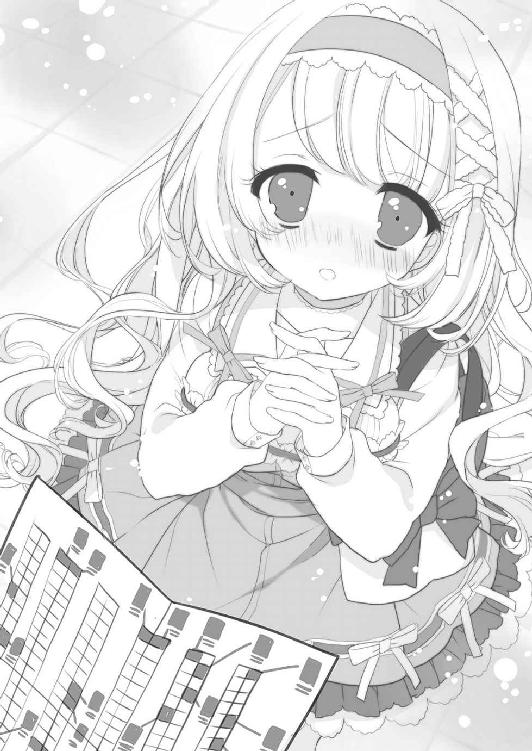
「えっと......あの......」
答えづらそうに、彼女は自分のトートバッグに目を落とす。
「リストは、もうあと二枚あるの......」
「......なるほど」
では、この二枚ともが俺の担当ということか......。
「ごめんなさい。すっごく、すっごく厳選したのだけど、どうしてもこれ以上は減らせなかったの。だから......完売とかはあると思うけど、一冊でも多く買ってきていただけたら、とても嬉しいわ......」
男を下僕のように顎で使っても許されるほどの美貌を持つ彼女が、俺なんかに精いっぱい気を遣っている。それがいじらしくて嬉しくて、快く引き受けざるを得ない。
「わかった。なるべく全部買えるよう努力するよ」
男らしく頷いてみせると、彼女の顔がぱっと華やぐ。
「本当......!? ありがとう、えーくん」
「別にそれくらいいいよ」
彼女の感謝のまなざしがまぶしくて、ついカッコつけてそっけなく答えてしまう。
「すごく有難いわ......。お金はこちらを使ってね」
そう言って渡されたのは、ブランド物のガマ口財布だった。手に取ると金メダルでも入っているのかと思うくらいずっしり重い。
「イベント用に用意したお財布なの。サークルさんがおつりに困らないように、百円玉と五百円玉で三万円分入っているわ。万が一足りなくなったら連絡なさってね」
「さ、三万円......!?」
一体、彼女は今日一日でいくら使うつもりなのか。
「えーくんが先に終わったときも、わたしに連絡してね。わたしもお買い物が終わったら連絡するわ。それじゃあ......」
「えっ!? ちょっと待った、もう今から手分けするってこと......？」
俺たちはようやく逆ピラミッド型の建物に入ったところで、まだサークルらしきものは影すら見えていない。
「ええ。ここを左に行って道なりに歩けば東ホールよ。えーくんにお渡ししたのは東１、２、３ホールのサークルのリストなの。わたしのは４、５、６だから」
「でも、途中まで同じ方向なのでは......？」
リストと一緒に渡された会場の見取り図を見て呟くと、彼女は気が逸っている様子で自分の腕時計を見る。
「人気サークルは、開場後三十分以内に行かないと新刊が売りきれる可能性があるそうなの。わたし、ここから走るわ」
「えっ!?」
辺りではスタッフと思しきユニフォームの人々が「危険ですので走らないでください」と参加者に注意を喚起している。
「それじゃあ、ごきげんよう！」
ついに我慢できなくなったのか、御車響子は高らかに叫ぶと脱兎のごとく駆け出した。
「そこ、走らないでくださーい！」
すかさずスタッフに注意され、彼女は頭を下げながらその前を走りぬけて行った。
「......なんてこった......」
あまりの衝撃に口があんぐり開いてしまう。全校生徒に規則遵守を呼びかける「清聖のルールブック」、カリスマ生徒会長の、目を覆いたくなるような実態がこれだ。
「......っていうか、それなら俺も急がないといけないのでは......？」
一般参加者の人波は、ぞくぞくと東ホール方面に流れている。買い物を請け負った手前、ショックで立ち止まってもいられない。俺も彼女が消えて行った方へ急いだ。
（......しかし、まさか初めてのイベント参加が女性向けになるとはな......）
辺りを見てみると、周りにいる多くの人々は目に留まる限りすべて女性だ。慣れた手つきでカートを引いたり、手元のサークルリストを確認したり、思い思いの様子で足早にホールへ向かっている。すっかりオタクを離れてしまった今となっては、こういうイベントでビッグサイトに行く機会もないと思っていたが、コミケ参加に憧れていた中学時代にだって想像していなかった展開だ。いくら普段の環境が女子校のようなものだとはいえ、ここまで多くの女性が密集した場所にいると、やはりどこか居心地の悪い気持ちになる。
そんな女だらけの雰囲気に気圧されつつも、萌えキャラのついたグッズが売られる売店の前や、低天井で有名な通路「ゴキブリホイホイ」などを通りつつ、「これがあの......」と一人ひそかに感激を覚える。
東ホールに着いてみると、想像はしていたけれども、べらぼうな広さだった。一ホールだけでも、体育館よりずっと高い天井と、学校のグラウンドがすっぽり収まってしまいそうな面積の大空間なのに、それが仕切りもなく三ホール繋がって、超巨大スペースを作り出している。向かいの４、５、６もたぶん同じ造りだろう。
そのだだっ広いホールを埋め尽くすように、無数の机が並んでいる。一見、長い長い机の列だが、人が二人並んで座れるスペースで一サークルという風に仕切られているらしい。サークルにはすべて「Ａ１」のように番号がついていて、一般参加者たちは、その番号でお目当てのサークルを探すようだ。
「Ａの28、最後尾はこちらですー！」
よく見ると、コンクリートの壁面に沿うように設営されたサークルには、本を買い求める客の長い列ができているところが多い。たぶんこれが「壁サークル」と呼ばれる人気サークルなのだろうと、オタク時代に得た知識から察する。
──人気サークルは、開場後三十分以内に行かないと新刊が売りきれる可能性があるそうなの。
御車響子の言葉を思い出し、リストを見て、壁際に配置されているサークルから買い物を始めることにした。特に人気のサークルには折れ曲がるほどの列ができているので、まずはほどほどの長さの列に並んで、前方の様子を探る。
「新刊セット三つください」
「新刊セットと、既刊すべて一冊ずつください！」
さすが人気サークルだけあって、壁に並んでいる客は気合いが違った。煌びやかなイラスト付き紙袋にその日の新刊が入っているという「新刊セット」が、飛ぶように売れていく。御車響子のリストにも、購入物の欄に「新刊セット」という指示が書かれたサークルがいくつもある。
ついに前の客が買い物を終えて列を抜け、俺はサークルの売り子の人と机を挟んで向かい合う形になった。机の上には、本日の新刊二種と、既刊らしい数種類の本が、それぞれ何十冊も平積みにされている。
（これが......ＢＬ同人......）
幸い全年齢向けのサークルらしく、昨日御車響子の部屋でぶちまけてしまったようなＢＬ臭の強い表紙は見当たらない。複数キャラが詰め込まれたポップな雰囲気のイラストや、ラノベカバーのパロディっぽい構図の表紙のものが多く、とりあえずほっとした。
「し......『新刊セット』一つ」
おずおずと注文すると、売り子の女性は、背後の机に載せた段ボール箱から紙袋を一つ取って、てきぱきした動作で俺に差し出す。
「千円になります」
「はい......」
「ちょうどいただきます。ありがとうございましたー」
ぎゅうぎゅうの列から脱出し、ようやく一つ目のサークルでの買い物が完了した。リストはまだまだたくさんあり、こんなことをあと何回繰り返せばいいのかと気が遠くなった。
「帰りたい......」
心からそう思ったが、さっきの御車響子のいじらしい姿が脳裏に浮かぶ。
──一冊でも多く買ってきていただけたら、とても嬉しいわ......。
「......頑張るか」
思い直して壁際のサークルを回り、同じような手順で戦利品が順調に増えた。それに比例して、次第に両肩に「新刊セット」の袋が重なって身軽に動けなくなってくる。
「うわっ、すいません......！」
会場の一般参加者は刻一刻と増え、今やホール全体が満員電車のようだ。しかも各自が目当てのサークルへ急いでいるものだから、ぶつからないように歩くのは至難の業だ。
しかも、だ。
「百円のお返しです、ありがとうございました」
「どうも......あっ！」
片手で本を受け取り、釣銭をしまおうとしていると、身動きが取りづらいせいで財布を落としてしまい、中から大量の硬貨が飛び出て放射状に転がっていった。
もうやだ......！
頭を抱えてしゃがみこみたい気持ちになっていた、そのとき。
「大丈夫ですか？」
俺の横を通った人が、そう言って百円玉を拾ってくれた。
「これ、落としましたよね？」
向かいの方向から来た別の女性も、お金を拾って渡してくれる。
「この五百円もそうですよね」
「あっちから集めてきました。たぶん向こうに転がったのはこれで全部ですよ」
周りから次々と女の人たちが集まり、俺に硬貨を渡して立ち去っていく。
「あ......ありがとうございます......！」
みんな自分の買い物に忙しいはずなのに、なんでこんなに親切なんだ。しかも、よく見ると、会場にいる女性のほとんどがオタクとは思えないくらい普通に可愛い。
「......こ、これは......」
腐女子だらけの会場だと思っただけでげんなりしていたが、それに気づくと、ちょっとテンションが上がってきた。そんな俺を、さらに浮足立たせる出来事があった。
超人気のサークルが一通り終わり、空き始めた壁サークルで買い物をしているときのことだった。
「新刊一冊ください」
「はい、ありがとうございます。......男性って珍しいですね」
売り子のお姉さんが、本を用意しながら俺に声をかけてくれた。ハタチくらいの外見の、一般的に見ても綺麗な部類に入る人だった。
「どうして、うちの本買ってくれるんですか？」
「えっ？ えっと、その......」
「ＢＬなんですけど、大丈夫です？」
「あっ、はい」
それは御車響子からリストをもらった時点で重々わかっている。
「ＢＬお好きなんですか？」
どうしよう。買い物を頼まれただけなのを正直に言おうか？
しかし、お姉さんは俺を見てすごく嬉しそうにしている。たぶん、ただの売り子じゃなくて、この人自身が漫画を描いているサークル主なのだろう。
「......ＢＬ全般にはあまり興味ないですが、ここのサークルさんの絵が可愛くて......」
表紙のイラストのタッチを見て、思いついたことを言ってみた。
「えっ、嬉しい！ ほんとですか？」
お姉さんは両手を合わせてほわんと笑った。こんな丸の内ＯＬ風の美女がＢＬ漫画を描いているなんて、上司や同僚も言われなければ想像すらしないだろう。
「ＢＬって男の人には気持ち悪がられることが多いから、男性のお客さん、すっごく嬉しいです。中身も気に入ってもらえるといいんですけど」
「は......はい、楽しみにしてます」
そう言うしかないだろう。お金を払って本を受け取り、そそくさとその場を離れた。
けれども、嬉しい出来事はそれで終わらなかった。
「わあ、男性だ！ ＢＬですけど平気ですか？」
次のサークルでも、可愛い系のお姉さんに話しかけられた。
「あ、はい」
「あとこれ18禁なんですけど、年齢確認いいですか？ 身分証とか......」
「えっ......」
なるほど。イベント会場ではそういう販売システムになっているのか......。確かに、机上の新刊の表紙には抱き合う半裸の美少年二人が描かれ、お耽美な雰囲気が漂っている。
「......あ、じゃあいいです。せっかく男の方に来てもらったので、オマケしときますね」
うろたえる俺を見て事情を察したのか、お姉さんはいたずらっ子のように笑った。
「ＢＬ好きな男の子っていいなあ～！ そういう人と付き合いたいんだけど、オタク男性の中にもなかなかいませんよねぇ」
彼女は俺を見てうっとりとため息をつく。
「ノベルティのティッシュ、ほんとは二冊以上購入の方用なんですけど、つけておきますね。また遊びに来てください！」
「は、はい、ありがとうございます」
そんな嬉しい特別扱いがその他のサークルでも何回かあって、最初の悲愴な気持ちから一転、俺はイベントを楽しみ出した。
「これはちょっとクセになりそうで怖い......」
普段学校ではあまり女子と交流できないので、同じ女性だらけの環境でありながら、打って変わってちやほやしてもらえるのが快感だった。
モチベーションが上昇したおかげか、買い物は順調に進んだ。
「次でリストは最後か......」
ほっとしたような、ちょっと残念なような、複雑な気持ちだった。
「新刊一冊ください」
最後のサークルは、今までの、壁際でなくてもぽつぽつ列ができていたサークルとは違って、他にお客さんが誰も来ていないスペースだった。スペース内にいるのは一人で、俯いてスマートフォンをいじっている若い女の子だ。明るい茶髪に両肩が出るデザインの花柄ワンピースというギャルっぽい風貌に恐れをなして、普段なら落とし物を拾ってあげるのにも一瞬ためらいが生じるタイプだ。
「......ウチですか」
ぶっきらぼうな声で言うと、少女は顔を上げた。その顔を見て、思わず「あっ」と声を上げてしまった。
「花垣汐実......！」
嘘だろ!?
信じられない。人違いだと思いたいが、うちの学校で彼女の顔を知らない者はいない。
天才少女小説家、花垣汐実。
清聖の新入生の中でぶっちぎりの有名人で、オタク荘の住人。三月末に入寮してきたときには、四月を待ち切れず押しかけた在校生男子が、引っ越し中の彼女の写メを撮ってツイッターに流し、マスコミにも取り上げられてちょっとした騒ぎになった。ミーハーな母がネットでその画像を拾ってきて「そうそう、この子よ～」と見せてくれたし、昨日も礼拝前に「あの子だわ」と級友たちがざわついていたので、間違うわけがない。
「えっ!?」
花垣は辺りをキョロキョロと見回す。つけまつげを装着していると思われるギャルメイクのせいで素顔は想像するしかないが、化粧をしていなくてもたぶん十二分に美少女だ。
「なんでウチのこと知ってるんですか......？」
その疑問はもっともで、名前だけは全国区の有名人でありながら、彼女は学生であることを理由にメディアに顔出ししていない。写メが出回ってしまったのもそれが原因だ。
「......俺、清聖の二年生で」
「ええっ!?」
「もっと言えば、君のいる寮の寮母の息子で」
「はあっ!?」
彼女は机を叩いて立ち上がった。
「えっウソ、まぢありえないんですけど!?」
両隣のサークルに注目されるのもかまわず、大声で怒鳴る。
「っていうか、なんでここがわかったんですか!? えっキモい！ 先輩、ストーカー!?」
「えっ!? ち、違うよ！ 本を買いに来たらたまたま君のとこだったわけで......」
「は!? 何言ってるんですか、男がＢＬ本欲しがるわけないじゃないですか！」
「え!? いや、そんなことは......」
あるのだけれども、御車響子に頼まれたとは言えない。匿名にするにしても、人から頼まれたと言うとあとで追及される恐れがあった。
「......お、男がＢＬ好きで、何が悪い......？」
だからつい、低い声でそう言ってしまった。
「............」
彼女は大きな目をぱちくりさせて、俺の顔をまじまじと見つめた。
「......先輩、もしかしてオトメンで腐男子なんですか？」
「えっ!?」
「ウチ、『うたプソ』のＢＬサークルなんですけど......」
俺がオタクだった頃にアニメも放送していた作品なので、名前だけは知っている。今、女子の間で大流行している乙女ゲーム「うたう王子様たちのラプソディー」、通称「うたプソ」。ちなみに、乙女ゲームというのはギャルゲーの女性向け版で、身も蓋もなく言えば、主人公の女の子がイケメンたちにモテまくる恋愛ゲームらしい。
「ってことは......、えっ!? 乙女ゲーなのに男キャラ同士の本を出してるのか!?」
びっくりして訊いてしまうと、花垣の瞳が訝しげな光を灯す。
「知らないで買いに来たんですか？ 冷やかしだったら帰ってください」
「いっ、いや、冷やかしじゃない！ そうだ、俺、うたプソのＢＬ本が欲しいんだよ！」
これで売ってもらえなかったら御車響子の買い物が完了しないので、必死に食い下がる。
「いや～、やっぱ俺の目に狂いはなかったんだ！ この作家の作品は他の同人作家とは一味違うと思っていたんだよ！ アマチュアにしてはレベルが高すぎる！」
テンション高く褒めあげると、花垣の鼻がヒクッと動いて照れ臭そうに口がすぼまる。
「......ウチ、サークル参加するの今日が初めてなんですけど」
しまった......！
「でも、ネットにはずっと作品上げてたから、それを見ててくれたってことですよね」
「そう！ そうなんだよ！ その通り！」
助かったとばかりに頷いてしまったが、彼女はもうすっかり俺を信じたらしい。
「......わかりました。本どうぞ」
「ありがとう！ いくら？」
「いいです、あげます」
「えっ!? いや、そんなわけには......」
「その代わり、ウチの話、聞いてくれます？」
花垣は、上目づかいに俺を見ていた。
「ウチ、オタクなこと喋れる相手がいないんです。ギャル友に知られたら死ぬし、正体がバレたらヤバいんでＳＮＳとかもできないし」
そのさびしげな表情に、昨日の御車響子が重なる。
「もうヤバいんです。ぶつけるとこがないから、担当さんに次回作を急かされてるのにＢＬばっか書いちゃうんです。でも同人誌は全然売れなくて」
確かに、机の上に積んである新刊はあまり売れている気配がない。こうして話している間も、彼女のスペースに足を止める者は誰もいなかった。
「......わかった。俺なんかでよかったら、話くらい聞くよ」
「まぢですか!?」
花垣は目を輝かせる。
「あっ、でもウチがオタクで腐女子だってことは内緒ですよ!? 言ったら冗談抜きでぶっ殺すんで！ 次回作用に考えた密室トリックを使った完全犯罪で！」
「わかってるよ。っていうか、次回作ミステリーなの!?」
確か、彼女のデビュー作は今どきの中学生を描いた青春群像小説だったはずだ。
「ツイッターに書くのもダメですからね！ ２ちゃんの書き込みもナシですよ!?」
「わかってるってば」
ツイッターはオタク活動をやめるときにアカウントごと消去したし、２ちゃんねるは元々まとめスレくらいしか読まない。著名人は気を遣うところが多くて大変そうである。
「......新刊、読んだら感想教えてくださいね」
最後に、少し控えめな口調で、彼女は伏し目がちに言った。
「う、うん......、わかった」
どうやら、この本だけはあとで御車響子に頼んで貸してもらわなければならないようだ。
「何度も言いますけど、ウチが腐ってることはウチと先輩だけの秘密ですよ？」
「ああ」
「絶対ですからね？」
「うん。じゃあ、本ありがとう」
平静を装ってスペースを離れたが、心臓はバクバクだった。
（マジかよ......！）
信じられない。天地がひっくり返ったような衝撃だ。
パンピーかつお嬢様しかいないと思っていた清聖の女子、その中でもみんなの憧れの的のオタク荘の住人に、まさか二人も腐女子が存在したとは......。それも、わざわざ乙女ゲーのキャラでＢＬカップリングを楽しむような、筋金入りの腐女子が。
「......そうだ、連絡しないと」
動揺のあまり無意味にホールを半周ほどしてから、ふと我に返った。
「もしもし、御車さん？ 俺の買い物は終わったんだけど......」
電話が繋がったので話しかけたが、向こうから応答はない。
「......新刊一冊と、既刊の......18禁のやつを全部お願いします！ えっ？ 身分証は自分のスペースに忘れてきてしまって......ちょっと取ってきましょうか？ えっ、いいですか、ありがとうございます！」
「......なっ......!?」
これは、いわゆるズルの現行犯ではないだろうか？ ＢＬ同人誌が絡むと、御車響子はルールも風紀もない破天荒ぶりだ。
「......あっ、えーくん？ ごめんなさい、こちらはもう少し時間がかかりそうなの」
そのようですね......。
「......じゃあ、俺はその辺ブラブラしてるよ」
「お待たせしてごめんなさい。もしよかったら、コスプレエリアとかご覧になる？」
「ふうん、そんなのがあるんだ。見てみようかな」
「お買い物が終わったら、ご連絡を差し上げるわね」
「了解。ちなみに、頼まれた本は全部買えたから」
「えっ、本当!? すっごく嬉しいわ！ ありがとう、えーく......きゃあっ！」
チャリチャリーン、と硬貨が床に落ちる音がして、通話が途絶えた。興奮したせいか、どうやらさっきの俺と同じことをしてしまったらしい。
「......コスプレかぁ」
渡されていた地図を広げると、コスプレエリアは同じホール内の、東３の壁際に設置されていた。花垣と遭遇した動揺を落ち着けるためにも、何か気の紛れることをしたい。
東３へ向かうと、机で仕切られたエリア内に、街中ではまず見られないカラフルな装いの人々がたむろしているのが見えた。
「おお、ほんとにいる......！」
様々なキャラに扮したコスプレイヤーたちが、そこら中でポーズを取っている。コスプレエリアとはいうものの特別な何かがあるわけではなく、それでもコスプレイヤーが集まっているのは、写真撮影のためだろう。コスプレのまま買い物をするのはＯＫだが、ここ以外のエリアは規則により撮影禁止らしい。
（でも、なんかイメージと違うような......）
コミケのまとめブログの写真で見たような、華やかでセクシーな衣装の女性コスプレイヤーがあまり見当たらない。辺りをうろついているのは、背番号入りのユニフォームやジャージ、男子制服のようなストイックなデザインの服に身を包んだ中性的な人々ばかりだ。
その中で、一見して人気を集めているコスプレイヤーがいた。
「きゃー、政宗サマー！」
「こっちも目線お願いします！」
「あたし、ツーショットで撮ってもらってもいいですかぁ？」
そこにいたのは、戦国アクションゲーム「戦国ＺＡＫＵＲＡ」の人気キャラ、伊達政宗だった。戦国ＺＡＫＵＲＡは、プレイヤーキャラの武将たちがイケメンで操作も簡単なので、この手のアクションゲーには珍しく女性ファンも多いと有名だ。俺も中学時代にプレイしたことがあるが、ボタン一つで敵をザクザク派手に斬り刻める感覚は、確かに他のゲームにはない快感だ。
「ＯＫ！」
すっかり伊達政宗になりきっているコスプレイヤーは、ツーショットを頼んできた女性の肩を抱き、空いた手を腰に当ててポーズを取った。見事なイケメンぶりである。
いやちょっと待て、イケメン......？
確かに顔の造作は整っていて、化粧で精悍な表情に仕上げられている。だが、青い甲冑の下の身体は、よく見れば女性としか思えない華奢さだ。そこで周りを見渡すと、うろついているコスプレイヤーたちはほぼ全員女性で、おそらく彼女たちの多くが男性キャラの格好をしているせいで、中性的な雰囲気が漂っていたのだろう。
そう思って改めて伊達政宗の顔を見たとき、脳裏に「まさか」と疑いが浮かんだ。
「......いや、そんなはずが」
そうだ、そんなはずない。まさか、こんなところで三人目の住人に出くわすなんて......。
そう思って、彼女の眼帯に覆われていない左目をじっと見つめていたときだった。
「あああ～～～～っ！」
目が合った「政宗サマ」が、いきなり甲高い声を上げた。
「霧島氏！ 霧島氏ナリか!?」
まさかのキャラ崩壊に、彼女を取り巻いていた女性たちの顔に戸惑いの色が浮かんだ。
「えっ......!?」
逃げたい。本能的にそう思う俺の前に、鎧をガサガサ言わせながら彼女が走ってきた。
「違わないナリ！ 忘れたナリ!? ボク、去年同じクラスだった菊川ナリ～！」
「......ああ......うん、覚えてるよ......！」
信じられないし、信じたくもないけれども！
その「政宗サマ」は、うちの陸上部の短距離エースで、全国最速のスーパーＪＫ、元クラスメイトでオタク荘の住人の、菊川るうだった......！
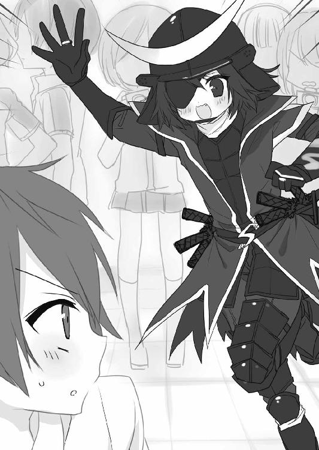
「霧島氏、何してるナリ？ こんなところで」
それはこちらが訊きたい......いや、訊くまでもないか。
菊川のちょっとオタク臭い妙な喋り方は、ファンの間では愛嬌があると好意的に受け止められていた。だが、まさかガチだったとは。
いや、待て。もしかしたら純粋にコスプレが好きなだけのパンピー......の可能性は低いが、少なくとも腐女子ではないかもしれない。
という俺の一縷の望みは、彼女が次に上げた声で脆くも絶たれた。
「あっ、楠田モモコ先生の18禁新刊買えたナリね！ 羨ましいナリ～！」
菊川は目を輝かせ、俺の左肩の紙袋の一つを触る。彼女が言ったのがどなたかは存じ上げないが、どうやらあの壁際のどこかにいた人気作家らしい。
「霧島氏、腐男子だったナリね～！ ちょっと読ませて欲しいナリ～！」
「ま、待った！ ここ、コスプレエリアだよ!?」
彼女が紙袋に勝手に手を突っ込んできたので、周囲の目を気にして慌てて止めた。
「あ、そうナリね。じゃあ、今度貸して欲しいナリ！ 霧島氏の部屋に取りに行くから、よろしく頼むナリ～！」
「えっ？ あ、ああ、うん......」
思わず頷いてしまってから、
「あっ、でも友達に貸す予定があるから、もし本当に借りに来るなら、前もって教えて」
と付け足した。
「了解ナリ！ ありがとナリ～！」
これで、御車響子から借りる同人誌が二冊になってしまった。
「じゃあ、ボクもうちょっと写真撮られてくるナリ」
「あっ、ま、待った！」
気になることがあって、思わず引き止めてしまった。
「......君は隠してないの？ オタクってこと」
今までのパターンと違うので、逆に焦って訊いてしまう。
「えっ？ どうして隠す必要があるナリ？ オタクは悪じゃないナリよ」
菊川は大きな目を見開いて、小首をかしげた。美少女に男装で可愛い仕草をされると、何やら居心地の悪い気分になる。
「え......そ、そうなのか......？」
「と、言いたいところナリけど、清聖では隠さざるをえないのが現状ナリね～......」
はあーとため息をついて、菊川は悩ましげな表情になる。
「清聖の子、みんなお嬢様で真面目すぎるナリ。ボクみたいに、親にＢＬ同人を見つかって三世代で家族会議になったほどの腐女子には辛い環境ナリ」
「......なるほど」
彼女が寮にいる事情は、それでわかった気がする。
「でも、霧島氏が腐男子なら、仲間のボクのことを言いふらしたりはしないはずナリ！」
だから、あえて口止めをしなかったというわけか。
「同じ寮だし、これからは気軽にオタク話しに行くナリよ！ 楽しみナリ～！」
「えっ!?」
それはやめてくれと心で叫ぶが、彼女はウキウキ顔だ。
「心強い仲間ができたナリ。ここで会ったのは、ボクたち二人だけの秘密ナリよ？」
「わ......わかった」
「じゃあ、またねナリ～！」
ウキウキの乙女ポーズで手を振る菊川を見て、周囲の女子たちがドン引きの顔になる。
「う、うん、じゃあ......！」
政宗ファンの女性たちに申し訳なくなって、俺はそそくさとコスプレエリアを後にした。
「なんてこった......！」
まだ頭の整理がつかない。こんな偶然があっていいのだろうか。これ以上ここにいたら、もしかするとさらに多くの清聖生に会ってしまうかもしれない。
そう思って、とにかくホールを出ようと伏し目がちに出口へ急いでいたときだった。
「きゃっ！」
一人の人物がいきなり視界に飛び込んできて、ドンと身体に衝撃を感じた。
「わっ！」
ぶつかってきたのは、小柄な少女だった。俺と正面衝突した衝撃で、ふっ飛ばされて床に尻もちをつく。よほど早足で歩いていたらしい。
「だ、大丈夫......ですか？」
俺も男の中では決して体格がいい方ではないので、予想外の反動に驚いてしゃがみこむ。彼女は黒と赤のチェック模様のゴスロリ風ワンピースに、黒いニーソックスを穿いていた。その足の横に、衝撃で飛んだらしいメガネが落ちている。
「すいません、これ......」
それを拾って渡そうと少女の顔を見て、俺の手は空中で固まった。
「き、君は......」
そのアイドルっぽい求心的な小顔にくりっとした愛らしい目元は、どこからどう見てもＶＩＧ58のメンバー、八剣せれなであり、うちの寮の八剣瀬芙玲だった。
「......返して」
低めの抑揚のない声で、八剣は俺に言った。顔バレ対策か花粉症か、彼女はマスクを着用していた。仕事でも学校でも毎日しているトレードマークのツーサイドアップが今日は見当たらず、ストレートの黒髪を腰までなびかせている。
「返してと言っているの」
ぼんやりしていると、彼女はもう一度言って、俺の手からメガネを奪った。
「あっ、ああ......ごめん」
慌てて謝る俺のことは見ずに、彼女はクールな面持ちでメガネを装着した。学校や音楽番組などで見る普段の様子からかけ離れた表情に、ふと本人かどうか自信がなくなる。
そうだ。考えてみたら、俺はちょっと頭がおかしくなっている。こんな場所で立てつづけにオタク荘の住人に出くわしたので、少し八剣せれなに似ている彼女を本人と思いこんでしまったのだ。きっとそうに違いない。
そう思って立ち上がろうとしたとき、彼女にじっと見られていることに気がついた。
「......キミ、どこかで会った......？」
その問いに俺が答える前に、彼女は「あっ」と声を上げた。
「もしかして、清聖生......？」
はい、八剣本人でした......！
認めざるを得ない現実にうろたえつつ、ここでとぼけても無意味なので頷いて立つ。
「......二年五組で、寮母の息子の霧島英君です」
彼女はマスクの内側で息を呑んだようだった。が、すぐに我に返った様子で立ち上がる。
「私がキミに望むことはただ一つ、ここで私に会ったことを誰にも口外しないこと」
淡々とした口調で、そう命じる。
「そして、今日買ったその同人誌のすべてを私に見せることよ......！」
俺の両肩の紙袋を見るその目は、獲物を狙うハンターのようにぎらぎらと輝いていた。
「こ、これ......!?」
俺の所有物ではない戦利品を庇うように抱きかかえると、八剣の目尻がつり上がった。
「見せられないっていうの......？」
「えっ、いや......」
菊川もそうだったけれども、人気のサークルって紙袋の絵を見ただけでわかるのか？ っていうか、「望むことはただ一つ」って前置き、全然ウソじゃないか。
「......ま、まだ新刊セットは残ってるところもあるよ。自分で買わないの......？」
むしろそのために会場に来たのではないのかという当然の疑問を、八剣は一瞥と共に弾き飛ばした。
「そんなに本買ったらお金がかかるでしょ」
「......でも、君は自分で働いてるんじゃ......」
「ギャラの管理をしているのは親。仕送りは別にもらってるし、毎週何万円も同人誌買うためにちょうだいなんて言えないわ」
「ま、毎週!?」
「あるでしょう？ オールジャンルはもちろん、ジャンルごとのオンリーまで含めたら、ほぼ毎週末イベントの予定が入るわ」
開いた口が塞がらない俺を見て、八剣は訝しげに眉根を寄せる。
「そんな大人買いしてるくせに、そんなことも知らないの？ もしかして転売ヤー？」
「えっ、いや、違う！」
転売ヤーとは、イベントでしか買えない人気サークルの本やグッズを転売のために大量購入し、ネットオークションにかけて儲ける連中のことだと、オタク時代に聞いたことがある。不名誉な疑いを晴らそうと首を振っている俺を、八剣はまだ疑い深げに眺める。
「じゃあ、貸しなさい」
「......はい......」
結局、俺は御車響子にすべての戦利品を貸してくれるよう頼む羽目になってしまった。
「それでいいのよ。......じゃあ、今度キミの部屋に取りに行くから」
まるで麻薬の密売の約束でも取り付けるかのように小声の早口で言う。
「いい？ このことは絶対に私たち二人の秘密よ。キミの心にだけしまっておいて」
最後にもう一度念を押すと、八剣は人ごみの中へ足早に去っていった。
「......ありえない......」
オタク荘に住む五人の女生徒のうち、四人が腐女子。
「ドッキリ？ ドッキリなのか......？」
あんまりな展開に狼狽し、あるわけもないカメラを探してキョロキョロしてしまう。
「もうこうなったらあと一人にも出くわしちゃえばいいのにな......ハハ......」
だが、それは不可能だ。オタク荘の住人で唯一、俺は「彼女」の顔を知らないのだ。
「きゃー、ショタ仮面サマがお買い物にいらしてるわ！」
そのとき、向こうの方で黄色い歓声が上がった。周囲にいた女性たちが「えっ？」と驚き、俺も彼女たちが注目する方を見てみる。何もないサークルスペースの通路に、円を描くように人だかりができていた。どうやらその中心にいるのが話題の人物らしい。
「うっそー！ ショタコン印のサインもらえるかな!?」
「もらっちゃお！ あと、十八番の膝小僧萌えトークも聴きたいな！」
俺の常識を超えたトークが交わされ、近くの女性たちがそちらへ殺到する。意味のわからぬまま、つい人の流れにつられてそちらへ向かった。
「ハイハーイ、おさないでねん、ショタは逃げないよ～！ あっ、今のは『押さない』と『幼い』をかけたショタコンジョークだからね～」
人だかりの中央に、やたら軽快なトークを繰り広げる人物がいた。周囲を女性に囲まれても頭一つ飛びぬけて見える、長身のモデル風の女性だ。
「やだー、ショタ仮面サマ、今日も絶好調だわ！」
どうやら、あれが噂の「ショタ仮面」で間違いないようだ。よくパーティグッズコーナーで見かけるメガネ型の「仮面」をつけているから、あれが名前の由来なのだろう。
しかし、この異常な人気ぶりはなんなんだ。
「......すいません、あれ、誰なんですか？」
気になってしようがないので、隣にいた女性に訊いてみた。
「えっ、ご存じないのですか？」
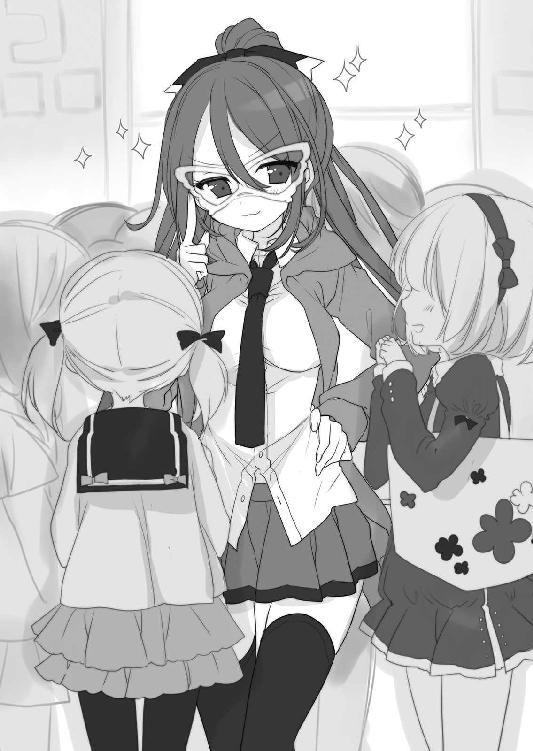
彼女は宇宙人でも目にしたかのような驚き顔になる。
「今、ニコニコ動画で大人気の腐女子生主、ショタ仮面サマですよ」
「生主......」
ニコニコ動画という動画投稿サイトでは、素人でも自分を映した生番組を放送することができるらしい。その生番組を持っている投稿者が「生主」と呼ばれ、カリスマ生主はヘタなアイドルなど凌駕するほどの人気を誇ると聞いたことがある。
「ショタ仮面サマは、ショタを愛する紳士の心を持った女性です。腐女子には珍しくモブ攻めや触手責めを好み、夕方六時台のアニメを中心にあらゆる作品をチェックして、可愛い二次元ショタを見逃しません」
「そ、そうですか......。ありがとうございます」
その女性はまだ語りたそうだったけれども、俺の脳みその理解が追いつかない。世の中にはいろんな人がいるもんだ......そう思ってその場を離れようと身を翻したときだった。
「おーい、少年！」
俺の背中に真っ直ぐに、女性の声が飛んできた。
「............」
一瞬耳を澄ませるが、誰かが反応した気配はない。おそるおそる振り返ると、「ショタ仮面」の仮面の向こうの目がバッチリ俺を捉えていた。
「珍しいね～、一人？」
ナンパのような文句を受け、俺は怯えながら頷く。
「......はい......」
「今日は、ＢＬ本買いに来たの？ 腐男子？」
「ま、まあ......」
「ショタは？ 可愛い少年は好き？」
ショタ仮面の周りにいた女性たちすべての視線が、彼女と俺のやりとりに集まっている。バッサリ否定もできず、俺は曖昧な微笑みを浮かべるしかない。
「まあまあ......」
「嗜む程度ってことか～、まあしょうがないね」
妥協したような言い方で肩をすくめると、ショタ仮面はなんと、俺の方へ歩いてきた。女だらけの人波が、モーセを前にした海のようにきれいに割れて道を空ける。今まで人だかりでよく見えなかったが、ショートパンツから伸びたすらりとした脚と、長いポニーテールが印象的だった。いや、一番印象的なのは仮面なんだけど。
「あたしさ～、今度の生放送で『ショタコン少年』ってタイトルでトークしようと思ってるわけ。その取材をさせてくれる腐男子を探してるんだけど、キミ、まだ若いよね？」
「......十六です」
「うん、ちょうどいいね！」
そこはばっちりハマったらしく、彼女は満足げに頷く。近くで見ると、仮面の下の両目は綺麗なアーモンド形で鼻筋も通っており、素顔は相当な美女であることがうかがえる。
「じゃあ、また今度ゆっくり取材させてもらいに行くわ。メアド教えてくれる？」
「えっ!?」
こんな変な人に、自分の連絡先を明かすなんて。第一、俺は腐男子ではないので、取材を受けたところで彼女を満足させる回答ができるわけない。
「ああ、やっぱ警戒しちゃうよね。じゃあ、あたしのアドレス教えるからメールくれる？ っていうか、どこ住み？ この辺の子だよね？」
「いや、都内ではなく......名加尾台という田舎で」
首都圏の郊外なのでそれほどの田舎ではないのだが、諦めてもらえるよう、彼女が絶対に知らない自分の住所をピンポイントで言った。
ところが、ショタ仮面は「えっ」と仮面の奥の目を見開いた。
「......マジ？ あたしも名加尾台なんだけど」
「はあっ!? ええっ!?」
「チョ～近所じゃーん！ どこどこ？ あたし、一丁目」
「......俺もです......」
「ええーっ!? その先は？ あたしは五の十......」
「わーっ！ もういい！」
周囲の目を気にして、思わず叫んでしまった。
薄々感じていた。こうなってしまうのではないかという予感もあった。だが......。
「......すいません、耳いいですか？」
「耳？ いいよ、あたしにショタの耳を語らせたら長いよ～！ やっぱり一番萌えるのは真夏のプールで真っ黒に焼けた耳の裏でしょ。でも、真冬の朝の真っ赤な耳たぶの......」
「そうじゃなくて！」
他人の話を遮るのはあまり好きではないのだが、やむをえない。
「耳を貸してください」
「え～内緒話？ 女子みたいでやだよ～！ オープンマインディッドで行こうよ～！」
アンタも女子だろというツッコミは心でして、俺は自分の口元に両手で囲いを作って、半ば強引に囁いた。
「......真澄先輩ですね？」
一瞬、彼女は時が止まったかのように静止した。
「......えっ？」
次いで、目を丸くして俺を見つめる。
「知り合い？ 会ったことあったっけ、あたしたち」
「やっぱり......」
悲惨すぎて、逆に笑けてきてしまった。
清聖生が憧れるオタク荘に住む美少女たちは、全員が全員、ガチの腐女子だった。
「じゃあ、そういうことで......」
ショックがデカすぎて、回れ右してその場を離れることしか思いつかない。
「え～っ、ちょっと待ってよ～！ キミ、誰なのさ───!?」
後ろからショタ仮面改め真澄先輩の声が追ってきたけれども、もう振り返っている余裕はなかった。
「ちょっとぉ～～......！」
遠くなっていく声を無視して出口の方に歩きながら、さっきからの怒涛の展開を顧みる。
（よりによって......まさかこんな場所で、五人の寮生全員と会うとは......）
一緒に来た御車響子、彼女が本を買おうとしていた同人作家の花垣汐実、コスプレイヤーの菊川るう、買い物中だった八剣瀬芙玲、それに「ショタ仮面」の真澄窓花......。
「オタク荘は、その名の通り『オタク荘』だった......」
生気の抜けた声で呟いたそのとき、ジーンズのポケットが震えた。
「......はい、もしもし」
「あっ、えーくん？ お買い物、全部終わったわ」
御車響子。彼女がＢＬ漫画家を目指す腐女子だったというだけで衝撃だったのに......。
「......えーくん？ えーくん......？」
信じられない一連の出来事に再び気を取られていた俺は、御車響子の声で我に返った。
「待ち合わせ、それで大丈夫かしら？ 二階のコンビニの前で」
「えっ......？ あ、ああ、わかった。今から行くよ」
そうして、約二時間ぶりに御車響子との再会となった。
「えーくん、お待たせ～！」
「うわっ！」
待ち合わせのコンビニ前に現れた彼女の姿を見て、思わず叫んでしまった。
華奢な両肩にかかる、無数の紙袋。そのほとんどに、男同士が抱き合ってこちらに扇情的な視線を送っているようなＢＬイラストが描いてある。要するに、さっきまでの俺とほとんど同じ格好なのだが、美少女のそういう姿を見るのはやるせない。
「つい、いっぱい買ってしまったわ」
そう言って照れ笑いをする様子は、それはそれは可愛いのだけれども。
「それにしても、本当にありがとう、えーくん！ 絶対に買い逃しが出ると思っていたのに、すっごくすっごく嬉しいわ......！」
御車響子は、俺が足元に置いていた紙袋を見て、感激の面持ちで両手を合わせる。
「本当に有難いわ......。えーくんも初めてだったのに、大変ではなかった？」
「大丈夫だよ。サークルの人もお客さんもみんな親切だったし」
感謝のいっぱい詰まったキラキラ輝く瞳に見つめられ、恥ずかしくてまたそっぽを向いてしまう。それに、俺には気がかりなことがあるのだ。
「......御車さん、他にここですることはある？」
「いいえ、もう充分イベントを堪能したわ」
「それなら、ビッグサイトを出ようか」
いくら巨大ホールとはいえ、閉鎖された空間でうろうろしていたら他のオタク荘メンバーに再会してしまうかもしれない。この場所から一刻も早く彼女を退散させたかった。
「そうね。わかったわ」
「その後はどうしようか？」
お腹も空いたし、できればここは休憩を兼ねてご飯に行きたい。二人でお台場の海を見ながらランチだなんて、いかにもデートみたいでドキドキするが......。
「そうね、寮に帰りましょう。一刻も早く新刊が読みたいわ」
そう言うと、御車響子は床にドサッと紙袋を置いた。
「えっ......？」
唖然とする俺を尻目に、彼女は床にしゃがんで、自分のトートバッグから袋を取り出した。それは折り畳み式のナイロン製カートで、彼女はそこに次々と戦利品を詰め始める。
「えーくんに買っていただいたのも入れるわね。ああ、本当に嬉しいわ......」
俺が床に置いていた紙袋からも、次々と同人誌を取り出す。カートに本を入れ終わると、御車響子はそれらが入っていた紙袋を綺麗に折り畳んだ。そうしてトートバッグから出した洋服ブランドの紙袋に入れ、バッグと一緒に肩にかけて立ち上がる。
「さ、行きましょう！ 戦利品がわたしを待っているわ！」
その瞳は生き生きと輝き、もはや茫然とする俺の姿が映っているのかも疑問だった。
「ああ～......早く読みたいわ......！」
帰りの電車で、御車響子は何度もため息をつきながら言った。大井町から腰を下ろすことができたりんかい線の車内の座席で、足元のカートをちらちら見ては、今にも手を突っ込んで同人誌を取り出したそうにうずうずしている。
「でもダメよ、家まで我慢だわ。公共の場でＢＬ同人を広げるのはマナー違反だし、誰に見られるかわからないし、何より布団でごろごろしながら大量の新刊を読んで萌え転がる悦びが、もうすぐそこに待っているのだもの......！」
まるで、そう言い聞かせていないと自分を抑えられないかのようである。そんな彼女を横目気味に見ながら、俺は己の存在意義について考えていた。
そもそも、俺は今日なんで彼女に付いて来たんだっけ？
──わたし、今月末、初めてイベントに出て同人誌を出すの。あれはその原稿。でも、会場で同人誌を買ったことがないから、イベントがどういうものなのかよくわからなくて。
この様子だと、イベントがどんなものかは十二分にわかったようだ。というか......。
「......御車さん、本当に初めてだったの？ 同人イベント」
あまりのエンジョイぶりに怪しんで訊くと、カートを見つめてぶつぶつ言っていた御車響子は、顔を上げて俺の方を向いた。
「ええ。思っていた通り、本当に楽しかったわ」
「それにしては随分手慣れていたような......。最初の開場ダッシュとか」
「だって、イメージトレーニングは完璧だったもの」
誇らしげな顔をして、彼女は美しい鼻孔を少し膨らませた。
「色々な人のイベントレポートを読んでいたし、コミケカタログも毎回買って熟読して、ビッグサイト内の構造も、そこの配置図やネット上の写真で完全に把握していたわ。それに、腐女子向けのマナーサイトも読み込んで、デビューの準備は万端だったの」
「それは......すごい......」
本当にとことん真面目なのだなと、感心と呆れの気持ちが入り混じる。完璧な生徒会長は、こんなところでも完璧なのか。
「......そういえば、会場で他の清聖生に鉢合わせたりしなかった？」
「ええ、しなかったわ......残念ながら」
御車響子は、本当に残念そうに頷いた。
「えーくんは？ どなたか見かけた？」
「えっ!?」
見かけた、なんてもんじゃない。立て続けに四人も、しかも全員オタク荘のメンバーと、遭遇して言葉を交わしているのだ。
──何度も言いますけど、ウチが腐ってることはウチと先輩だけの秘密ですよ？
花垣のセリフ、それに菊川や八剣からの口止めのことを思い出して、言いたい気持ちをぐっとこらえた。
「い、いや......。俺も会ってない」
動揺を押し隠して答えると、御車響子は正面を向いてほうっと嘆息する。
「そうよね。清聖生って本当に真面目だわ。うちの学校に腐女子はわたし一人ね......」
今や確実にそうではないことを知ってしまった身としては、複雑な心境だ。
「......そうだ。一つ訊きたいんだけど......」
「何かしら？」
「......ああ、うん......」
うっかり切り出してしまったが、このタイミングで言うのは何か悟られるか？ それでも、一度言いかけたのを引っ込める方が不自然だと判断して口を開く。
「今日頼まれたリストの中に、一つだけ小説のサークルがあっただろ？......あのサークルは、どうやって見つけたの？」
「えっ？......ああ、うたプソのサークルさんね」
車両の天井の方を見ながら、御車響子は答えた。
「あの方がピクシブに載せている二次創作があるのだけど、素人とは思えないくらい上手なの。わたし、二次創作は基本的に漫画しか読まないけど、あの方の小説だけは大好きで、今回イベントに初参加するって告知があったから、絶対に買おうと思って」
ピクシブというのは、インターネットのイラスト投稿サイトだ。誰でも投稿、閲覧できるＳＮＳの形式を取っているが、作品に点数がつけられ集計されるので、ランキングの上位はプロやセミプロの同人作家で占められることが多い。最初はイラストだけのサービスだったのだが、数年前から小説も投稿できるようになっていた。
「その人がどうかしたの？ あっ！ えーくん、もしかして......」
御車響子に疑いのまなざしを向けられて、もしや花垣のことがバレたのかとビビる。
「......その本、貸して欲しいんでしょう!?」
「............」
よかった、違った。
「う、うん。実は......そうなんだ」
「ふふ、お安い御用だわ」
「というか、その......」
──楠田モモコ先生の新刊買えたナリね！ 今度貸して欲しいナリ！
──今日買ったその同人誌のすべてを私に見せることよ......！
この流れでは、誤解されそうで非常に言い出しづらいが。
「......俺が今日買った同人誌、できれば......今度全部貸してもらいたいんだけど」
菊川と八剣との約束を果たしたいだけの俺を、御車響子は瞳をきらきらさせて見つめた。
「まあ！」
両手を顔の前で合わせて、いとも嬉しそうに目を細める。
「えーくん、もしかしてＢＬ同人誌に興味が湧いたのかしら......!?」
「ちっ、違う！」
思わず否定してしまったものの、彼女たちのことを言うわけにはいかない。
「違うけど......えーっとその......ほら、君が言っただろ？ ＢＬ漫画家になりたいって。でも他に言える人がいないっていうから、その、俺が少しでもアドバイスできればと思って......ちょっとＢＬを勉強しようかと......」
我ながら、咄嗟にうまく辻褄の合う回答ができたと思う。
「まあ......！」
御車響子は両手を合わせたまま口元に当て、目を潤ませんばかりに輝かせて俺を見る。
「なんてお優しいの、えーくん！ 本当に素敵な方だわ......！」
素敵。
その甘露な響きにくらっと来る。
「や、やめなよ。そんなことを気軽に言うのは......」
恥ずかしくて彼女の顔を直視できず、言いながら目を逸らしてしまった。
「だって本当に素敵だもの。わたしの持っている同人誌でよければ、いくらでもお貸しするわ。そうだわ、今までに買った中での神本セレクションも一緒にお貸しするわね！」
御車響子は、俺の心中など察することもない様子で楽しげに笑っている。いつも厳格な生徒会長として折り目正しく振る舞う彼女の、こんな姿を知る者は、うちの学校の中でただ一人、俺だけなのだ。
そう思うと、心の奥からじわじわ溢れてくるものがあって......。それがオタクで腐女子だったという残念な内容でも、彼女と秘密を共有できた喜びに胸がいっぱいになる。
（母さん、ちょっとだけ、ありがとう......）
無責任な母親への恨みが、今だけは感謝に変化するのだった。
その日、寮に帰ってから、俺は生まれて初めてちゃんとした料理に取り組んだ。メニューは、豚のしょうが焼きとキャベツの千切り、豆腐とわかめの味噌汁、白米という簡単なものだったが、スマホでレシピを見ながら六人分を作り終えると二時間近く経っていた。
「わーっ!? アンタ、さっきの......！」
七時の食事の時間になって寮生が食堂に集まったとき、真澄先輩が俺を見て叫んだ。
「......どうも。寮母の息子の英君です。母が所用でしばらく家を空けるらしくて、今日から俺が食事のお世話をすることになりました......ほんとすいません」
お盆に味噌汁を載せて運んでいた俺は、小さく頭を下げる。すでにダイニングテーブルの席に着いている他の住人たちには、もうさっき事情を説明しておいた。
「......あー......。なるほど、そういうことね......」
ボリボリ頭を掻きながら、先輩は自分の席に着く。仮面をつけて生主をやっているだけあって、どうやら彼女もオタク趣味は秘密のようだ。
「さっきの？ 真澄先輩、今日どこかで霧島先輩と会ったんですか？」
先輩の斜向かいに座っていた花垣が、先輩に探るようなまなざしを向ける。
「えっ!? あー......うん、さっき、そこのスーパーで会ってさ～！ あたし、実験用のすっぽんとマムシと高麗ニンジン買いに行ってたから！」
「精力実験でもやってるんですか？ っていうか、さっき大玄関前でウチと会ったとき、完全に手ぶらでしたよね、先輩」
「そりゃ買い物したあとの荷物なんか重いから送るっしょー。金ならあるし？」
「えっ、どんだけ買ったんですか!? しかも近所のスーパーから宅配!?」
（オイオイ、言い訳が雑すぎるだろ......）
すべてを知る俺は、顔を無表情に保つのに苦労する。
「って、そういうあんたはどこ行ってたのさ～？ やたら大きな鞄持ってたけど」
先輩に切り返され、花垣は一瞬言葉に詰まった。食卓に並べられた皿をじっと見つめて、なんとか平生の顔つきで目を上げる。
「ウチは、中学時代のギャル友と渋谷行ってました。マルキューで服買いすぎちゃって」
そして、他人がツッコむ余地もないほど間髪を容れず、向かいの席で早くも食事を始めていた八剣を見る。
「っていうか、大きい荷物といえば、ウチより八剣先輩のが大荷物で帰ってきましたし！」
「私は収録終わりだったんだモーン！ 今日は私服紹介企画だったから荷物多くて♡」
まるでセリフを用意してあったかのようによどみなく言い、八剣はみんなに可愛らしくウィンクした。アンテナもといツーサイドアップも健在で、俺はさっきの彼女を思い出し、その変わり身が恐ろしく固唾を呑んでしまう。こっちが大衆の知る彼女の姿だ。
（やっぱこのアイドル怖ぇー......）
「ち......ちなみにボクは、自主練で公園を走っていたナリよ！」
訊かれてもいないのに、その隣の菊川が咳き込むように会話に入ってくる。コスプレ用に巻いたらしいボブヘアにわずかに残るクセを伸ばすように、毛先を指でつまんでいた。
（この子は嘘が苦手なんだな......）
そんな中で。
御車響子は汁椀を口に運びながら、俺を見て上品に笑いかけた。出汁を取るのに失敗してしょっぱいだけになった味噌汁を一口すすり、ハープの声色が独り言のように呟く。
「......美味しいわ、霧島くん」
その微笑の優雅さに、すべてを知る俺までもが、彼女がこの中でたぶん最も純度の高い腐女子であることを忘れそうになる。
だが、その直後。
「きゃあっ！」
動揺で手元が狂ったのか、盛大に味噌汁をひっくり返し、食卓を混乱に陥れたのだった。
３
清聖学園の一日は、全校生徒が講堂に集まって行われる礼拝から始まる。
「今日の説教は御車さまよね。楽しみだわ......」
朝の礼拝は、大きく分けて四つの内容から成り立つ。讃美歌の斉唱と、聖書の朗読、それに教師や生徒たちによる説教と、お祈りだ。
そのうち俺たち一般の生徒がやるのは讃美歌の斉唱だけで、あとは適当に居眠りでもしていれば礼拝はつつがなく終了する。けれども、今日は説教中に寝る者は少なそうだ。
毎週木曜日は、生徒会のメンバーが説教することに決まっている。とはいえ、御車響子以外が登壇するとあからさまに講堂が失意に包まれるので、彼女が生徒会に入ってからは、実質、毎週木曜は御車響子による説教の日だった。
「春休みがあったから、久しぶりの御車さまの説教よね」
「二年生になった御車さま、どんなお話をなさるのかしら......」
イベントから四日後の木曜日、講堂に向かう途中の廊下では、彼女の説教を心待ちにしている生徒たちの様子があちこちで見てとれる。
こんなプレッシャー、俺だったら耐えられない。御車響子は本当にすごい。
「説教、長いといいな」
「ああ。ずっと見てられるからな」
男子の二人組が、女子の間を縫って移動しながらそんな風に話している。
（まったくだ......）
一対一だと、澄んだ瞳と美しすぎる顔立ちに気恥ずかしくなってしまって、あまりじっくりと顔を見ることができない。壇上にいてくれると、こちらが一方的に観察できて有難い。退屈だった学校生活の中で、木曜の礼拝は一年の頃から数少ない楽しみだった。
月曜の夜、御車響子は読み終わった同人誌を貸すため俺の部屋にやってきた。けれども、それは他の寮生の目を気にした十数秒の短い来訪で、深い話にはなっていない。寮での食事のときも、人目があるから挨拶以上の会話はない。
学校での彼女は、朝、登校すれば「ごきげんよう、霧島くん。今日もいい天気ね」、放課後には「ごきげんよう、霧島くん。また明日ね」くらいの声はかけてくれるが、会話するのはそれくらいだ。周囲の女子が怖いので俺の方から話しかけるわけにはいかないし、彼女の方は、俺にオタク話以外で話したいことなんてないのだ。
それでも、俺は彼女を意識しまくっている。授業中も御車響子が隣にいると思うとそわそわして集中できず、このままではただでさえ下から数えた方が早い成績順位がますます下がりそうだ。
そんな状況での、今朝の説教だった。
「あ、御車さま、もう座っていらっしゃるわ」
講堂に入ると、近くの女子が壇上を見て呟いた。
説教当番の生徒は、朝、職員室で担任に登校を報告すると、そのまま教室ではなく講堂で礼拝を待つことになっている。聖書台の後ろに左右対称に並べられた椅子の下手側に、御車響子は居ずまいを正して座っていた。もう一方の椅子に座っているのは、司会を務める聖書科の教師だ。
講堂といっても、礼拝以外の目的に使われるのは文化祭のときくらいしかない。ステージ部分の枠や俺たちの座る長椅子には、シックな中にもいかにもキリスト教っぽい（としか俺の語彙では言いようがない）、ヨーロッパ的な装飾がされている。舞台の反対側、俺たちが座ると背を向ける形で設置された巨大なパイプオルガンは、都心の学校にもあまり見られないらしい豪華なもので、学校関係者の自慢の逸品だった。
そんな厳かな雰囲気の講堂の中で、今朝も礼拝が始まった。
「......では、続いて説教です。本日は、生徒会長の御車響子さんのお話です」
教師も講堂中からなんらかの圧力を感じていたのか、礼拝はいつもより早く進行して、あっという間に説教のターンになった。
「みなさん、ごきげんよう」
御車響子が聖書台の前に立つと、講堂の空気が変わった。気づけば周りの生徒はみんな背もたれから背中を浮かし、前のめりで静聴している。
「新学期が始まってから一週間近く経ちました。新入生のみなさんは、もう学校に慣れましたか？ 在校生のみなさんは、短い春休みをいかがお過ごしになったでしょうか。わたくしは......」
無難な挨拶から始まって、彼女の話は、自分が春休みに実家に帰った数日間、華道の大師範である祖母の手ほどきを受け、日本人の花をめぐる四季観がいかに豊かで美しいかを再確認した、という話になった。
そう、御車響子の話に斬新さやユーモアなど一つもない。彼女は説教もしごく真面目に行うだけだ。それでも、生徒たちは彼女の神々しいばかりに美しい姿を眺めていられるだけで、説教の内容の何十倍も有難いのだ。
「一年の計は元旦にありと言いますが、わたくしたち学生の一年は、まさに今、この四月に始まったところです」
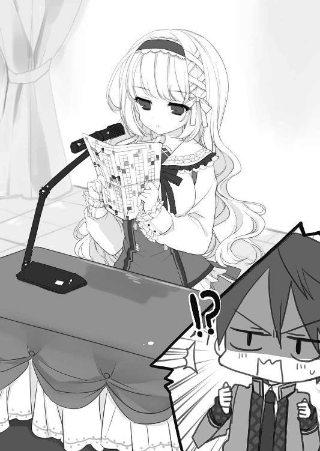
それは、彼女の話が本題に入りかけたと思われた頃だった。
俺たち二年五組は、ステージと並行に二列で並べられた長椅子の、上手側の最前列から三列目までを割り当てられている。礼拝は出席番号順に並んで座ることになっているので、俺は女子のワ行の最後の子......要するに三列目の端に、数名の男子と共に縮こまっていた。
一列に二十ほどある長椅子の三番目という前方なので、俺には壇上がよく見える。
「一度しかない青春の一年を有意義に過ごすために、わたくしたちは今、何をすべきでしょうか？」
そう言って、彼女は手元の紙をめくった。おそらく説教の内容をメモした草稿だろう。
「わたくしがみなさんにご提案したいのは『日記をつけること』です......」
「んっ!?」
その紙の裏側......つまり俺たちに向けられた面を見て、思わず低い声が出てしまった。
「どうかした？」
隣の男子に小声で訊かれて、俺は慌てて首を振る。
「いや、なんでもない」
だが、両目は彼女の手元に釘づけだった。
（あれは......！）
見えてる。めっちゃ見えてる。こんな何百人もの生徒の前で、完全無欠のカリスマ生徒会長が説教の草稿にしていたのは。
ビッグサイトの東ホールのサークル配置図の、裏紙だったのだ......！
（何やってんだよ......！）
それに気づいてしまってから、説教の内容などまったく頭に入らない。俺が見えているということは、少なくとも前から三番目までの椅子に座っていて、平均以上の視力を持つ生徒には、あれが目に入っているということだ。ただ、イベントなど行ったこともない、配置図を見たことのない人間には、それが何を意味するのかわからないだけだ。
今のところ、俺以外に動揺を覚えていそうな者は見当たらないが......。
（早く教えないと......！）
とはいえ、どうやって？ ジェスチャーで示すにしても、彼女が俺を見てくれなければ始まらない。数秒悩んだ末に思いついたのは、俺のような一介の生徒には非常に勇気のいる手段だった。
「......ああ、あの......っ！」
両隣の生徒が、ビクッと身を震わすのがわかった。当たり前だ。普段は寡黙な同級生が、何の脈絡もなく叫んだのだから。
壇上の御車響子は、説教を中断して俺を見つめた。
「お話し中、申し訳ありませんが......」
このチャンスを逃すものかと、俺は立ち上がって彼女に話しかける。
「ト......、トイレに、行ってもいいですか......？」
御車響子はきょとんと目を丸くした。
「いいですよ......？」
「助かります。実は俺、今日パンツを裏返しに穿いてきてしまって」
静まり返った講堂で「裏返し」のところで、掌を返すジェスチャーをする。
「裏返しにね、裏返し......裏返しですよ」
言外の意味を訴えるように彼女を見つめながら、その動作を何度も繰り返しやる。
「......？」
さすがに何か気づいたのか、単につられただけか、御車響子は何気なく自分の手にした紙を裏返した。その口が「あっ」という形で固まる。
「......パンツですって......いやだわ、こんな公衆の面前で、下品な......」
「そうよ、御車さまのお耳が汚れるわ」
あまりしつこくやったので周りの女子から反感を買ってしまったが、なんとか御車響子に伝えることに成功したようだ。
「......え、えーと......それでは、お話を続けさせていただきますね」
さすがカリスマ生徒会長、すぐに動揺から立ち直り、説教を再開した。
「というように、日記には、後から読み返すことで自分を客観的に見つめられるという効果があります......」
そう言いながら、さりげなく草稿を表に返す。彼女がそれを聖書台から浮かせて持つことは、もう説教が終わるまでないだろう。
その様子を見届けて、後ろのドアから廊下へ出た。あんな風に言ってしまった手前、もう席を外すしかなかった。
「......霧島くん」
礼拝が終わり、教室に帰ってきた御車響子は席にいた俺に話しかけた。あのあと講堂に戻るのは恥ずかしかったので、トイレで暇を潰し、一足先に教室に戻っていたのだった。
「な......なんでしょう」
学校で彼女と話すのは、周囲の目があるので緊張する。ましてや、俺はさっき問題行動を起こしてしまったばかりだったので、女子の目も厳しかった。
「さっきは......」
何か言いかけて、彼女は周囲からの視線に気づいたようだ。
「......なんでもないわ。昼休み、生徒会室へ来ていただけるかしら？」
そんな俺たちを見て、周りの女子たちはひそひそ話す。
「きっと礼拝を中断させたことでお叱りを受けるのね」
「きつい罰を受けるといいわ。御車さまに自分のパンツのお話をするなんて」
「それにしても、硬派な霧島さんが、あんな変態性を秘めていたなんて意外だわ」
（ひいぃ......）
俺は心で悲鳴を上げた。清聖での学校生活と同じくらい退屈だった俺の評判が、悪い方向へ着実に変化しつつある。
だが、実はそれがちょっと嬉しかったりもする。自分でも不思議だけど。
（俺、なんでオタクをやめたんだっけ......？）
普通でいたい。悪目立ちすることなく、清聖の優等生的な校風に馴染みたい。だったら、こんなことは不本意であるはずなのに。
（なんでだろう......）
それが御車響子の影響なのかはわからない。ただ、俺の中で何かが変わり始めているのは事実のようだった。
昼休みになると、彼女に言われた通り生徒会室へ向かった。
生徒会室は、一年生の教室がある三階にある。二年生の教室は二階なので、一階上って、今まで通りすぎるばかりだった「生徒会室」の札のかかったドアを叩いた。
「......霧島です」
「はい、どうぞ」
中から御車響子の声がしたので、ドアを開ける。生徒会室の扉は一般教室とは違い、なぜかコンサートホールの防音扉のような分厚いビニール加工のドアである。
部屋に入ると、中もなるほど、一般教室とはだいぶ違っていた。
「なっ......!?」
王宮。そんな言葉が頭をよぎった。
部屋の奥に、ロココ調だかアールデコ調だか知らないが、とにかく派手なヨーロッパ風デザインの、玉座のような肘かけ付き椅子が鎮座している。その前には、同じシリーズと思われるデザインのデスク。どちらも白が基調なので、印象はまだ軽快になっている。これがたぶん生徒会長用の椅子と机なのだろう。
どこを見ても、教室に並んでいるような机と椅子はない。壁際には、座部にコバルトブルーの布を張った、これまた格調高い木の椅子が、玉座もとい会長椅子から見て右と左にずらっと並んでいる。
会長椅子に腰掛けた御車響子は、デスクから顔を上げて俺を見ていた。
「......あっ、このインテリア？ 去年わたしが会長になったとき、同じクラスにいた輸入家具店の社長の娘さんが、お祝いとして寄付してくださったの。わたしも最初はどうかと思ったのだけれど、せっかくだし、有難く使っているわ」
「へ、へえ......」
「窮屈そうに見えるけど、案外座り心地がいいのよ」
と、にっこり笑顔で、座ったままポンポン弾んでみせる。俺がそれほど食い付いていないのを見ると、弾むのをやめて口を開いた。
「......さっきはありがとう、えーくん」
優しく微笑んで、ふと表情を曇らせる。
「わたしとしたことが、うっかりしていたわ......」
「問題ないよ。他に気づいた人はいなかったみたいだし」
「それもえーくんが教えてくれたからだわ。そのために恥をかかせてしまって......ごめんなさい」
「別にいいよ、あれくらいのこと」
彼女の感謝と恐縮のまなざしに、胸がなんとも言えず熱くときめいて、またしてもカッコつけてしまった。
「......えーくん、どうしてそんなところにいらっしゃるの？」
「えっ......？ ああ」
俺はまだドアの近くに突っ立っていた。無意識だったが、たぶん玉座の威圧感のせいで近づけなかったのだろう。気分は王の執務室に呼ばれた家臣だ。
「お昼、もう召し上がった？」
デスクの一メートルほど前まで近づいたとき、彼女はそう言って足元から何かを取り出し、机上に置いた。
「え？ うん」
「もう入らないかしら？ よろしければ、これを手伝っていただきたいのだけれど」
それは風呂敷に包まれた何かで、彼女は話しながら結び目を解いて俺に見せる。
「お重......？」
出てきたのは黒い重箱だった。塗りの上品な光り具合がいかにも高そうな逸品だ。
「炊飯器を空けようと思ったら、ちょっとご飯を詰めすぎてしまったの。少しでいいから召し上がってくださらない？」
「じゃあ、いただくよ」
御車響子の手作り弁当を食べられるなんて、それだけで興奮する。早く生徒会室に行こうと、今日の昼は購買の安いパン一つしか食べていなかったので、胃袋にも余裕がある。
「助かるわ、ありがとう」
そう言うと、御車響子はパカッと重箱を開けた。そこにはどんな高級懐石が納まっているかと思うと......。
「えっ!?」
他人の弁当の中身をのぞきこんで、こういう驚きの声を上げたのは初めてだった。
「......のっ、のり弁......!?」
ご飯の上にびっしりと、真っ黒いふやけた海藻が敷き詰められた重箱の中身。庶民の俺などにはわからない料理かと一瞬考えたが、どうしてもそうとしか見えない。
「ええ、そうよ。......ひょっとして、お嫌いかしら？」
「いや......」
のり弁を嫌いな日本人なんて、少なくとも俺は聞いたことがない。
「よかったわ。今日は海苔とご飯の間に明太子をたくさん入れた豪華版なの。スーパーで買った見切り品の明太子が、今日までの賞味期限だったから」
所帯じみたことを言いながら、彼女はのり弁を箸で半分切って蓋によそう。そちらが俺の分だと思ったが、手渡されたのは本体の方だった。
「......いつも、こういうお弁当食べてるの？」
渡された割り箸でのり弁を口に運びながら、おずおずと尋ねた。初めて口にする彼女の手作り弁当は、海苔に醤油のしみた、ごく普通の明太のり弁だ。
「いいえ、いつもは梅干しご飯が多いわ。少しお金に余裕のあるときに、鮭フレークとか、おかずらしいものを入れるの」
「な......」
なんということだ......。
「お金に余裕って......君の実家なら、それなりに仕送りをもらっているのでは......？ 栄養バランスも偏るし、既製のお弁当を買うとか......」
「まあ、とんでもないわ！ 今月もギリギリよ！」
途端に興奮したように、御車響子は持っていた箸とお重の蓋を置く。
「一円単位で切り詰めなければとてもやっていけないわ！ 今月は同人イベントにも行ったし、印刷所に支払うお金もあるし、来週は大好きな中谷蘭子先生のＢＬ漫画の新刊も出るし、うたプソ二期の初回限定特装版ＤＶＤも出るのよ！」
「......へ、へえ......」
「それにしても、えーくんに買ってきていただいた同人誌、とてもよかったわ。また読み終わったものがあるから、今度お貸しするわね」
「ああ、うん......」
「それで、昨日もイベントのことを思い出していたの。あのサークルもこのサークルもよかったわってこの前のサークル配置図を見直して、その勢いで礼拝のお話を考えていたら裏紙に使ってしまって......」
「なるほど......」
「えーくんがいなかったら、わたし一人ではイベントに行く勇気なんてなかったわ。それに、今日の礼拝でもわたしの失敗をフォローしてくださって......。えーくんにはいくら感謝してもしきれないわ」
彼女は本当にそう思っているらしくて、感謝のまなざしがまぶしい。
「......それでね、わたし、思ったの」
彼女は真剣な顔で言う。
「考えてみたら、この前もイベントでえーくんにお買い物を頼んで、大したお礼もせずに済ませてしまったでしょう？ あのときはＢＬへの欲望に取りつかれていたけど、後で考えたら本当に失礼なことをしたと思ったのよ」
「いや、そんなことは」
確かに昼抜きでの直帰には唖然としたが、みんなの憧れの生徒会長とお近づきになれただけで、俺にとっては宝くじ数千万円相当の価値がある。
「それに今日のこともあるし......、一度ちゃんとお礼をさせていただけないかしら？」
「え？ そんな......」
「今度の日曜日、空いてらっしゃる？」
「............」
いや、待て。そんなウマイ話あるわけがない。
相手は腐女子の御車響子だ。「日曜日の予定を訊く＝デートの誘い」なんて、安易に思わない方がいい。
「......次は、何のイベント？」
用心深く訊いた俺を見て、彼女はちょっと苦笑した。
「違うわ。池袋に、わたしの行きつけのいいお店があるの。よかったらそこでお茶をごちそうさせていただけない？」
「......！」
デート。これは間違いなく、デートの誘いだ。
「......ば、晩飯の支度があるから、夕方五時には帰らないと......」
震え声で答えると、御車響子はふふと笑う。
「わかっているわ。お店は二時半に予約しているから大丈夫でしょう？」
そして、さらに信じられないことを言い出す。
「せっかくの休日だから、他にご予定がなかったら午前中からお出かけしない？ 遊んだり、お買い物したりしてから、お茶に行きましょうよ。池袋にはニャンジャタウンがあるでしょう？」
ニャンジャタウンというのは、大手ゲーム会社が経営する屋内型テーマパークだ。小学生の頃に一度だけ行ったことがあるが、世界観の作りこまれたフロアの中に乗り物やゲームがあって、それなりに楽しく遊んだ覚えがある。
「......う、うん......いいけど......」
夢だ。もしくは、罠だ。
そう思って、口の横の肉を引っ張っている俺を見て、御車響子は不思議そうな顔をする。
「どうなさったの？ 何か先約がおありかしら？」
「いや！」
たとえ一年前からの予定が入っていようと全力で空けるし、案ずるまでもなく俺は暇だ。
「よかった」
御車響子は唇についたほくろ大の海苔を手元のナプキンで拭い、おっとりと微笑んだ。
「それじゃあ楽しみにしているわね、日曜日」
□
彼女がどれほどその日を楽しみにしていたとしても、俺には到底敵いっこない。
そうして訪れた日曜日、前夜からいきなり高熱を出すことも、外出困難な土砂降りの雨に見舞われることもなく、俺は池袋へ出かけることができた。
「ごきげんよう、えーくん」
例によって、彼女とは駅のホームで待ち合わせをした。現れた御車響子は、白いコットンレースのワンピースに、ミントグリーンのカーディガンを羽織っていた。外にいるとちょっと肌寒そうな格好だが、今日もでたらめな可憐さだ。
こんな美少女と半日一緒に歩けると思うと、周りの男への優越感がハンパない。今日はオタクイベントではないので、自身の身なりにも気をつけた。
──ヒデくん、顔はアタシ似でそんな悪くないんだから、もっとオシャレすればいいのに～！ ほら、たまにはこういうの着なよ！
──いいよ、この辺歩くならウニクロでたくさんだよ。
うちの母は男の見た目にうるさいので、俺にも時々服を買ってきてくれる。あまりにオシャレすぎて恥ずかしいので、タンスにしまったきり着たことはなかったのだが......。
「......まあ、素敵なお洋服！」
会うなり、御車響子は俺の服を褒めてくれた。
（母さん、すげえ......）
今日着てきたのは、母がくれた中で一番この季節に合うものだった。ジャケットとパーカーとジレを重ねて着たようなデザインの一枚トップスで、黒白グレーのシックな色合いが普段から穿いているカーゴパンツにも合う。
「そ、そうかな......？ これは親が買ってきたやつで、下はウニクロだよ」
照れ臭くて、つい言わなくてもいいことを言ってしまった。
「すごくかっこいいわ。素敵！」
そうは言うものの、彼女はうっとりしているというよりは、興味津々といった様子で俺を観察している。
「ちょっと失礼するわね」
そう言うと、俺の襟元に無遠慮に手をかけてくる。
「ここ、どうなっているのかしら......。あっ、フェイクレイヤードね、ふんふん......」
「えっ、なっ......!?」
「ねえ、片手を上げてみてくださる？」
「えっ？......こう？」
言われるままに右手を上げると、彼女は俺の横に回り込んで「なるほど、こんな風に皺が出るのね」とぶつぶつ呟いた。
「あの、ちょ......ちょっと......」
あまりにベタベタ触られるので、顔が赤らんでつい身を引いた。すると、御車響子は我に返ったように俺の服から手を離す。
「あっ......！ ご、ごめんなさい、わたしったら」
落ち着きなく視線を動かし、俺より赤くなった頬を両手で押さえる。
「すごく素敵なお洋服だから、今度の同人誌で攻めの子に着せたいと思ってしまって......」
「はあ!?」
「男の方に馴れ馴れしく触ってしまったりして......恥ずかしいわ、ごめんなさい......」
「いや、それはいいんだけど」
「......じゃあ、あとで写メを撮らせていただける？」
「......いいよ......」
これでどうやら、俺の服を着た攻めキャラが活躍するＢＬ漫画が日の目を見るようだ。
ちなみに「攻め」というのはＢＬで積極的に押す方の男性のことで、受け身というか、いわゆる「女役」を演じる方のことは「受け」というらしい。大量に貸してもらった同人誌をぼちぼち消化しているせいで、興味のないＢＬの知識が地味に増えていく。
「......嬉しいわ、ありがとう、えーくん！ 今日は素敵な一日になりそう......！」
微妙な気分の俺を尻目に、御車響子は満面の笑みでそう言ったのだった。
池袋に着くと、俺たちはニャンジャタウンのあるサンシャインへ向かった。日曜のサンシャイン通りは、歩行者天国になっていても人が渋滞するくらい混み合っている。
「見て！ あの子、超可愛くない!? モデル？」
「ハーフかな？ 金髪似合ってるね」
向こうから来た少女たちが、御車響子を見て、すれ違いざまにそんな会話をしていく。
（やっぱり、そうだよな）
清聖にいると、あまりのカリスマ的な人気ぶりで逆に感覚が麻痺してくるけれども、彼女は街中で通りすがりの人を軒並み振り返らせる程度の美少女なのだ。
そんな彼女と、今日、俺はデートする。
テーマパークで一緒にアトラクションに乗ったり、仲良くゲームをしたり、もしかしたらプリクラとか撮っちゃったり......？
そのあとは、サンシャインシティのファッションフロアをブラブラしてショッピング、最後は二人きりで食事......。万が一いい雰囲気になってしまったりしたらどうしよう。
──わたし、ＢＬよりもえーくんのことが好きになってしまったみたい......。
「わーっ！」
いけない。こんな妄想をしていたら、彼女のことを本格的に好きになってしまう。
「......どうなさったの？ えーくん」
いきなり叫んだ俺を、御車響子は不思議そうに見る。
「い、いや、何でもない！ ほら、ニャンジャタウンだよ！」
俺たちはサンシャインシティに入って二階を歩いているところだった。ニャンジャタウンはこのフロアの中の一区画を使っているので、雑貨屋さんの隣にいきなり入口が現れる。その入口を指差して、なんとか誤魔化した。
「本当だわ！」
御車響子は目を輝かせ、俺を置いて走り出す。彼女が向かったのは......。
「見て見て！ うたプソとコラボしているわ！」
入口にあるネコのキャラクターの像の隣に、うたプソ......この前のイベントで花垣が二次創作ＢＬ小説を出していた乙女ゲームのポスターが貼ってあった。
「ねえ、せっかくだから、コラボフードを食べましょうよ！」
ニャンジャタウンには、餃子やスイーツの名店の出店を集めたコーナーがある。ポスターを見る限り、どうやらそこでうたプソのキャラをモチーフにした食べ物を限定販売しているらしい。
「う、うん......？」
ポスターに載っているコラボ餃子は、楽器や音符をかたどった餃子の皮を置いたり、キャラのイラストをプリントしたせんべいを載せてみたりと、苦しい上にあまり美味そうではない。だが、御車響子の瞳は生き生きとしている。
「迷うわ......。誰の餃子にしようかしら」
食い入るようにポスターを見て、ぶつぶつ呟きながら悩んでいる。
「ステッカーを取るか、味を取るか......。ステッカーを全部集めたいけど、それなら使用する用と眺める用と保存用が必要だわ......」
どうやら、早くも餃子を食べるつもりみたいだ。コラボ餃子一皿につき一枚うたプソのステッカーがもらえるらしくて、それで迷っているようだった。
そうして悩んだ末に彼女が選択したのは、考えられる中で最もとんでもない方法だった。
「ご......ごちそうさま、御車さん......」
小一時間後、俺は満腹の胃をさすりながら割り箸を置いた。
御車響子はなんと、コラボ餃子六種類をすべて三皿ずつ購入するという荒技に出た。当然彼女一人で食べ切れるはずもなく、見かねた俺が大半を平らげることになったのだ。
「ごめんなさい、えーくん。わたしがふがいないばかりに」
御車響子は恐縮したように身を縮めて謝る。その直後、信じられないことを言った。
「デザートでは頑張るわね、わたし」
「デ......デザート!?」
何を言っているんだ、この子は......。
「ええ。デザートコーナーでも、餃子と同じようにうたプソのコラボスイーツが販売されているの。ステッカーを集めないと」
戦意喪失の俺とは対照的に、彼女の瞳はどんどん輝きを増してくる。
仕方なくデザートコーナーへ向かい、餃子のときと同じように売り場近くの空いている二人席に腰掛けた。
「おまたせ、えーくん！」
またしても三つずつコラボスイーツを買ってきた御車響子は、右手に一つ、左手に二つコーンのソフトクリームを持って、せわしなく舐めている。テーブルの上には、その他にもシュークリームやゼリー、パンケーキなどが三つずつ並んでいる。
（なぜ一遍に買うんだろう......）
お腹が重すぎて、声に出してツッコむのも大儀だ。
「ああっ、こんなに溶けちゃってるわ......あっ、今度はこっちが」
必死な様子で三つのソフトクリームに順番にかぶりつく彼女の姿が、なんとなくエロティックで思わずじっと見つめてしまう。
「ごめんなさい、えーくん」
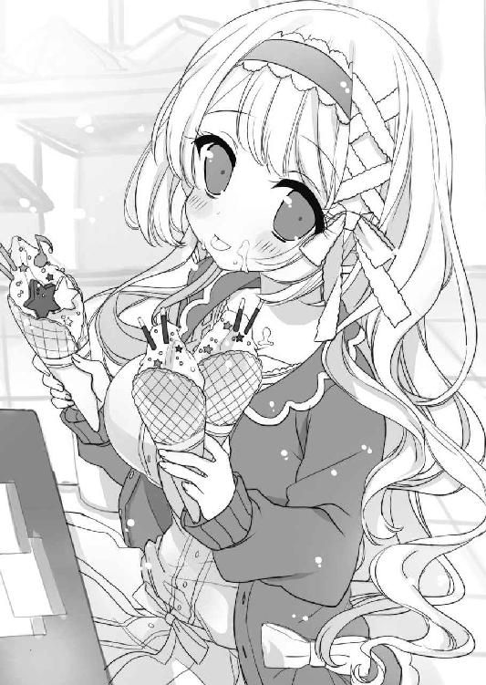
すると、口の周りを溶けたソフトクリームでベタベタにした御車響子が、切羽詰まった様子で俺に左手を差し出した。
「これ、一つだけ食べてくださる......？ 三つとも溶けて崩れてしまいそうで」
確かに、三つのソフトクリームはまだどれもコーン部分に到達しておらず、ソフト部分がだんだん溶けて傾いてきている。
「......わかった」
コーンはあまり食べたくないが、ソフトクリームくらいなら入る気がした。だが、問題はそこではない。
（間接キスだ......）
受け取ったソフトクリームをまじまじと見つめ、ごくりと唾を飲み下した。食べかけのソフトクリームには、舌先でクリームをすくいとった軌道や、前歯の型がついている。
「......やっぱり、もう入らないかしら？」
その痕跡をじっとにらんでいると、向かいにいる彼女が両手のソフトクリームを舐めながら心配そうに訊いてきた。
「えっ？ ああいや、行けるよ」
変態と思われると一大事なので、えいっとソフトクリームにかぶりついた。どこがコラボなんだか何の変哲もないバニラ味だが、クリームが口の中に広がる感触にドキドキする。
（ああ、幸せだ......！）
礼拝で彼女を見られるだけで喜んでいる同級生の男子たちに、さっき振り返りながら彼女を見ていた通りすがりの男子高生に、俺の今の状況を自慢したい......！
「......どうなさったの？」
ソフトクリームの味を噛みしめていると、御車響子にまた変な顔をされてしまった。
「......いや、なんでもないよ」
「もしかして、知覚過敏？」
「え？ あ......うん、実は」
「やっぱり！ わたしのお父さまもずっと知覚過敏で、でもお医者さまに行ったらただの虫歯だったの。えーくんも虫歯かもしれないわよ」
「う、うん......。近いうちに歯医者に行ってみることにするよ」
真面目な顔でアドバイスをくれる彼女は、俺の邪な想いなど気づきもしていない様子だ。
「......このあとは、どうする？」
食べながら話題を変えると、御車響子はソフトクリームを舐めつつモジモジした。
「あのね、えーくん......」
そのとき、天井の方から館内放送が聞こえてきた。
『お待たせいたしました。入場制限をしておりました、うたう王子様たちのラプソディーのわなげが、ただいまからお並びいただけるようになりました』
「あっ！」
御車響子が全身をはっとさせて放送に聴きいる。
『なお、列が定員に達した際には再び入場制限をさせていただきますので、ゲームをご希望の方はお早めにお越しください』
「大変！ えーくん、早く行かなくちゃ！」
「えっ!? えーと、このデザートは......」
テーブルの上にある大量のスイーツに目を留めると、彼女も「あっ」と声を上げる。
「どうしましょう......」
「......あ！ アイス以外は持ち帰れるって書いてあるよ。テイクアウトにしてもらおう」
そうしてアイスを片づけながらお店の人にスイーツを包装してもらっている間に、うたプソわなげ狙いの女性たちが続々とゲームコーナーの方へ向かっている。
「大変だわ、早く行かないと......！」
その様子を見て御車響子が焦る。ようやく最後のスイーツの箱を受け取るやいなや、彼女は女性たちの群れに身を投じた。
「み、御車さーん!?」
周りはたちまち朝の電車の女性専用車両の様相を呈し、女性たちをかき分けて進むのはセクハラではないかとひるんでいると、人と人の間からにゅっと白い手が出てきた。
「えーくん、一緒に走りましょう。景品は品切れも出るし、間に合わなかったら大変だわ！」
「えっ!?」
御車響子は、はらはらした面持ちで俺を見ている。確かにゲームコーナーへの道のりはここからでもわかるほど女性たちで混み合っていた。
「ああ......わかった」
握った彼女の手は、思った以上に温かくてやわらかい。
「あちらだわ、急ぎましょう！」
「う、うん！」
まるで心臓がむき出しになったように鼓動の音が存在感を現して、前を向いて走っていても、隣にいる彼女のことしか考えられない。
行列の最後尾に着くまでは、永遠のように感じられる、あっという間の時間だった。
「それでは、こちらで締め切らせていただきまーす！」
俺たちがたどり着いてすぐに、係の人が後方から並ぼうとしていた女性たちへ叫ぶ。
「危なかったな......」
呼吸を整えながら、隣に並んだ御車響子に言う。汗ばんできた掌が気になり、繋いだ手を離すタイミングをうかがっていると、彼女がふと俺たちの手元に視線を落とした。
「......あっ！」
短く叫び、慌てた様子で俺の手を離す。
「い......いやだわ、わたしったら、こんな......」
真っ赤になった頬に猫の手のように丸めた両手を当て、御車響子は俺から目を逸らした。
「わたし、夢中で......。はっ、はしたない女だと、お思いになったかしら......？」
蒸気が出そうに茹だった顔で、ちらっと俺を見上げて尋ねてくる。
「い、いや......」
可愛い。可愛すぎる。
「思ってないよ、そんなこと」
そう答えるのが、精一杯だった。
「本当？ よかったわ......」
火照りを鎮めるように指先を伸ばして両頬に押しつけ、御車響子はほっとしたように微笑んだ。趣味への情熱に取りつかれていないときの彼女は、素直で純粋で、抱きしめたくなるくらい可愛らしい。
「......で、これは一体どういうゲームなんだ......？」
前の方を見ると、用意されたわなげの屋台に、お客さんが輪っかを投げている。音符を模した出っ張りに入れば、何かうたプソのアイテムがもらえるらしい。
「三等がステッカー、二等がコースター、一等はポーチがもらえるんですって。それぞれキャラを選べるのだけど、ポーチはカップリ......二人ずつのコンビになっていて、その中にリンさまとマナトさまのカッ......コンビの柄があるのよ！」
いちいち言い直しているのは、たぶん「カップリング」と言いそうになっているのだろう。この瞳の輝きからして、その「リンさまとマナトさま」が彼女の本命ＢＬカップリングのようだ。
「だからどうしても一等が欲しいの......！ ゲーム代はわたしがお支払いするから、よろしければえーくんもやっていただけないかしら......？」
「そういうことなら......わかった、やってみるよ」
この行列だと、もう一度並び直すのは厳しいだろう。なるべく一度で成功したい。
「たぶん、一番遠くにあって、入れづらそうな小さい音符が一等なんだろ？」
「ええ......。難しいとは思うけど、わたしも頑張るわ」
そうして並ぶことしばらく、俺たちの番がやってきて、御車響子が先に輪を構えた。
「......えいっ！」
優雅な仕草で放たれた輪は、手前の大きな音符......三等ステッカーの場所に入った。
「あ～ん......」
ちょっと艶めかしくも聞こえる声で、彼女はあからさまに落胆する。
御車響子はスポーツも万能で、菊川と同じクラスにさえならなければクラス対抗リレーにも三年間選手として選ばれるのは間違いない。けれども、普段あまりやる機会のないわなげに勘がつかめずにいるのかもしれなかった。
「あー......！」
二投目も大きな音符に入り、彼女は二枚のステッカーをもらって自分の番を終えた。
「えーくん、頑張って！」
列から外れた彼女は、わなげ台の近くから俺を見守る。両手を胸の高さに上げて応援してくれる仕草が可愛くて、自然と男らしい気持ちになった。
「おう！」
このわなげは女性用に短めの距離で設定されているので、男にとっては若干有利だ。
「一回目、どうぞ～！」
係のお姉さんに言われ、一番遠くにある小さな音符に狙いを絞り、ばねのように縮めた腕を一気に伸ばした。
「あー......！」
御車響子の落胆の声が響く。輪はわずかに狙いが逸れ、隣の二等の音符に入った。
「コースターですね。では二回目どうぞ！」
今度こそ。
さっきと腕の力は同じに、狙いだけは修正して輪を離した。
「......入った！」
輪は見事、一等の音符に到達した。
「おめでとうございます！ ポーチプレゼントで～す！」
「きゃーっ！」
御車響子は喜びの悲鳴を上げ、その場で小さく飛び上がった。
「ポーチ、何番にしますか？」
景品係のお姉さんにパネルを示して尋ねられるが、その見本のポーチの何番に描いてあるのが該当キャラなのか、俺にはわからない。
「えーっと......『リンさまとマナトさま』のを......」
苦渋の決断で、消え入りそうな声で言った。コンビニでエロ本を買う十倍恥ずかしい。
「ありがとう、えーくん！ すごく嬉しいわ！」
お姉さんに半笑いで景品を渡されている俺のところに、御車響子がナイスタイミングで走り寄る。いや、俺の羞恥プレイを考えたらちょっと遅いか。
ポーチを受け取る彼女に、お姉さんが言った。
「よかったですね。リンマナのポーチ、これで本日分終了ですよ」
「えっ!? そうなんですか......！」
「いい彼氏さんですね」
「......!?」
な、なんて嬉しいことを言ってくれるんだ......！
御車響子の彼氏。そんなものがもし三次元に存在するとしたら、それは間違いなく十頭身くらいある超イケメンの金持ちの天才で、スポーツすればウィンブルドンで優勝しちゃって、実はどっかの国の王侯貴族で、なんかよくわからないけど、きっとそんな感じだ。少なくとも、俺なんかではない。それは重々わかっているけれども。
「か、かれし......！」
俺の狼狽から遅れること数秒、御車響子がそう呟いてボムッと赤面する。
「い、いやだわ......」
もらったポーチで顔を隠し、モジモジと後ずさりする。
「......ご、ごめんなさい、えーくん。まさかこんなところでリア充扱いされるなんて......こんなド腐れ女の彼氏だと思われるなんて、ご迷惑よね」
「い、いや、大丈夫だよ」
というか、とんでもなく身に余る光栄なのでまったく問題ない。
「お優しいのね、えーくん......。それなら、次は......」
「次!?」
まだあるのかと身構えると、御車響子はさらに奥の方を指差す。
「プリクラを撮りたいの。......ダメかしら？」
「えっ!? い、いや」
女の子と二人きりでプリクラを撮るなんて、生まれて初めての経験だ。今までと違って、このイベントはかなりデートっぽい。
「ど......どの機種で撮る？」
「うたプソのコラボ機があるから、それで撮りましょう！」
「えっ!?」
またうたプソか！ というか......。
「......まさか、今日ニャンジャタウンに来たのは、うたプソのコラボ目的で......？」
おそるおそる尋ねてみると、御車響子は恥ずかしそうに微笑する。
「えーくんを池袋にお誘いしようと思って、せっかくだから他にも寄るところはないかと思ってニャンジャタウンを調べたの。そうしたらこれをやっているのを知って......」
「......なるほど」
「一回でもイヤなお顔をされたら出ようと思っていたのだけれども......えーくん、すごくお優しいからつい甘えてしまって」
そんなことを言われたら、もう彼女にどこへ連れていかれてもイヤな顔はできない。
「......わかった。うたプソのプリクラを撮ろう」
他のコーナーと同じく、プリクラもうたプソコラボ機種は混んでいる。しばらく並ぶこと再び、俺たちの順番が来て機械の中に入った。
「......わたし、プリクラ撮るの初めてなの」
「えっ!? 現代日本にまだそんな女子高生が......!?」
「でっ、でも大丈夫だわ！ ユーチューブで撮り方のシミュレーションはバッチリしてきたの。まずはこのフレームで撮りましょう」
シミュレーションの効果か、御車響子の操作はいたって手際よくテキパキしていた。画面に映し出されたイラストフレームは、王子様たちが中央に集合したデザインだ。
「えーくん、もう少しだけ端に寄ってくださる？」
「ん？」
「でないと、シュンくんが隠れてしまうの」
「えっ？ そんなこと言っても......」
イラストはほぼ画面いっぱいに広がっているので、誰の身体の一部も隠さないようにするには、俺と御車響子は左右の端に張りつくしかない。どうやらそのつもりらしく、彼女は俺の向かい側の厚手のビニールの覆いにぴったりと背をつけていた。
「これなら行けるわ......撮るわね、えーくん」
緊張した声色で言うと、彼女はそっと手を伸ばしてシャッターボタンを押す。
カシャッ！
映し出された画面には、二次元イケメンたちの両脇で、尾行中の探偵のように身体をピンと細く伸ばした俺たちがいた。
「一体、この写真に俺たちが写り込む意味とは......」
「次はマナトさまで撮りましょう」
彼女が再び操作をすると、画面にデーンと黒髪のイケメンキャラが現れる。ちょうど画面の半分を隠すようなデザインで、おそらくファンの女性がツーショットを撮れるように作られているのだろう。
「これは......俺は遠慮した方がいいんじゃ」
「ダメよ、そんなの。夢厨みたいで恥ずかしいわ」
御車響子は真面目な顔で言う。
「ゆ、夢厨......？」
「とにかく、一緒にいてくださらなければイヤだわ。こちらへいらして」
そうは言うものの、空いているスペースはちょうど一人分なので、マナトさまを隠さないようにするには俺と御車響子はかなり密着しなければならない。
「これは無理だろ......よろける」
「そうね......」
狭い中お互い身体が触れ合わないように遠慮しているので、体幹が不安定でぐらぐらする。そんな姿勢で機械を操作していた御車響子は、シャッターボタンを押した瞬間、とうとう「きゃっ！」とよろめいた。
「だっ、大丈夫!?」
とっさに支えようと手を出したところ、俺の胸に飛び込むような体勢でよろめいた彼女を抱きしめる形になった。
「............」
鼻先にいい匂いのする髪が触れ、身体中に彼女の身体のやわらかさと体温を感じる。
カシャッ！
シャッター音で我に返った俺は、彼女と同じタイミングで弾かれるように身体を離した。
「ご、ごめんなさい！」
「こっちこそ......！」
画面には、今しがたの俺たちの様子が、フレームに合成されて映し出されている。互いをきつく抱きしめ合う様は、どこからどう見ても熱愛中のバカップルだ。
「と、撮り直そうか？」
「......いいわ......早く出ましょう」
真っ赤になった御車響子は画面を直視することができないようで、息も絶え絶えといった様子で答える。
「落書きタイムだってよ？ おーい......」
「しっ、知らないわ......。えーくんがお書きになって」
よっぽど恥ずかしかったのか、彼女はほとんど拗ねたようにそっぽを向いてしまって、俺は仕方なく一人でペンを取って画面に向かう。
まずは、一枚目。
（これには何も書かない方がいいだろうな......）
王子様たちでいっぱいのフレームを見て、そう判断してスルーする。二枚目もそんなに余白があるわけではないが、抱き合った俺と御車響子の下半身辺りがさびしい気がする。
「............」
女の子とプリクラでツーショしたとき、お前ら何を落書きする？
立て方も知らないのに思わず脳内で２ちゃんにスレ立てしてしまったが、安価してくれる住人もいないので自問自答するしかない。
（無難なところで、名前か日付か......）
と、まずは名前を書こうとして、ありえないほどの羞恥に襲われてペンが震えた。
みくるま＆きりしま、きょうこ＆ひできみ......あるいは、きょーこ＆えーくん......!?
この画像に、それ!? 正気か、俺は......！
「あ～～！」
あまりの恥ずかしさに一瞬でもそんなことを考えた自分が気持ち悪くなり、今日の日付のみを殴り書いて落書きを強制終了した。
「......はい、これ！」
受け取り口から二つに分かれて出てきたシールの一方を、ずっと俺に背を向けていた御車響子に渡す。
「ありがとう......」
ちらりとシールに目をやった彼女は、再び頬を紅潮させる。
「恥ずかしいわ......。こんな写真、はれんちだわ......」
「......じゃあ、俺が二枚とも引き取ろうか？」
「ダメッ！ マナトさまがいるもの......！」
強く言って、彼女はプリクラをバッグから出した手帳にしまう。その顔はまだ赤い。
「......次は、どうしようか？」
「ここを出ましょう」
ハグプリクラがそんなに恥ずかしかったのか、彼女は足早にニャンジャタウンを歩いて出口に向かった。その途中で何気なく時計を見ると、時刻はまだ一時半だ。お茶する予約が二時半だと言っていたから、店に行くにはまだ早い。
「このあとは......？」
俯きがちに隣を歩く御車響子に尋ねると、彼女はまだ恥ずかしがっているのか俺をよく見ようとしない。
「......ちょっとお買い物でもしましょうか」
「えっ、どこで？」
というのも、俺たちはサンシャインシティの出口へ向かっていて、もうすぐ外へ出てしまいそうだ。ぶらぶらウィンドウショッピングするなら、ここよりいいところは近くにないと思うのだが......。
だが、御車響子は確かな足取りでフロアを端まで行ってビルを出る。そして目の前に現れた大通りの向こうを見て、俺は絶句した。
「お、乙女ロード......！」
その存在は小耳に挟んだことがある。池袋の一角にある、女性オタク向けの店が密集しているという通り。女性版の秋葉原。意識して来たことはないが、ここがそうに違いない。
なぜなら、片側二車線の広い道路の向こうには、巨大な「アニメイト」の看板があり、その他にも聞いたことのあるオタク向けショップの店名があちこちに躍っている。そのすべてのビルに、いかにも少女が好みそうなキラキライケメンキャラの広告イラストが、こちらに向けて挑発的な視線を送っていた。
「まあ、よくご存じね！」
立ち止まって口開けっ放しの俺を見て、御車響子が嬉しそうに両手を合わせる。恥ずかしさからは、もう立ち直ったようだ。
思えば、彼女に「池袋」と言われた時点で、ここに連れてこられることは充分予想ができたはずだ。ただ、我が県民にとってわりと近場の繁華街である池袋は、地元の中高生がちょっと都会で遊びたいと思ったときに選ぶ定番の街だったので、わりと自然に受け入れてしまったのだ。
（御車響子に普通のデートなんか期待した俺がバカだった......！）
今度こそリア充っぽいデートができるかと思っていたのに、見事に裏切られてしまった。ここに来た以上、彼女の「お買い物」の内容は明白だ。
「......オタクグッズを、買うの......？」
「うーん、そうね......まずはブラブラしましょう。久しぶりにアコスも見たいわ」
気のせいか、この通りを前にしてから彼女の声がずっと弾んでいる。それに反比例するように俺のテンションは下がり、彼女に導かれるまま大人しく道路を渡った。
「乙女ロードって、具体的にどこからどこまでなの......？」
「そうね......、あのアニメイトの看板からこの通りをまっすぐ行って、だいたいＫ‐ＢＯＯＫＳのコスプレ館辺りまでが、乙女ロードと認識されるショップだと思うわ」
「なるほど......。で、そのお店には何が？」
「主にキャラグッズとコスプレ衣装と同人誌かしら。あのアニメイトはアニメイトサンシャインっていう特別店舗で、普通の商品はもう少し駅の方にある本店にあるのよ」
そんな話をしながら、俺たちはその店に入った。店内は見事に若い女性だらけで、いかにも女性オタクに人気のありそうなアニメやゲームに関連したＴシャツやグッズ、ガチャポンなどが整然と並んでいる。なんとなく昔を思い出して血が騒いだ。
「ここは『アコス』というコスプレ商品のお店のフロアで、眺めるなら二階が楽しいわ」
言われるままに階段を上って二階へ向かう。
「おおっ！」
上った先のフロアを見て、思わず歓声を上げてしまった。そこには一般の洋服売り場さながらに、二次元キャラクターの衣装の完成品が、マネキンに着せられたり、ハンガーに吊るされたりして陳列されていた。こんな店に入ったのは初めてだ。
「ここもうたプソかぁ......！」
さっき散々キャラ絵を見せられたので、彼らの衣装はもうわかってしまう。
「ユニフォーム系は自然だなー。あっ、これテニペラじゃん！ うわ、俺でも部屋着で着られそうだな～！ 俺様の美技に酔いな......って!?」
小さい頃に読んでいた少年漫画のキャラの衣装を見て、思わずテンションが上がる。そして、はっと我に返った。
「うーん、どうかしら......。ここに出ているのは女性向けのサイズだから、もしかしたらえーくんには少し小さいかもしれないわ」
俺の興奮にはあまり留意せず、御車響子は真面目に返してくる。
「あっ、ああ、そうか......。それにしては、女キャラの衣装が少ないね」
「そういうものだわ。今の女性コスプレイヤーの半数は、男装メインの腐女子レイヤーだもの。ただ、写真集のＲＯＭは女性キャラのコスの方が売れると聞くわ。ＲＯＭを買ってくれるのは男性が多いから」
「......なるほど」
この前のイベントで伊達政宗のコスプレをしていた菊川にも、群がっているのは女性だった。彼女のスタイルなら、絶対に男装よりも女性の衣装の方が似合うだろうに。
（こういうのとか......）
彼女を思い浮かべながら手に取ったのは、パンピーにも大人気の国民的漫画『ワンピーズ』の女キャラ、バンコックのセクシー衣装だ。ボディコンシャスなラインのヘソ出し衣装で、胸の谷間がガバッと開いている。
「......悪くないな」
頭の中で、菊川にフル装備で着せてみた。素人のコスプレとしては限りなく最高レベルに近いクオリティになると思う。彼女だけでなく、美少女のオタクはみんな女キャラのコスプレをすればいいのに。
「......御車さんは、コスプレしないの？」
興味本位と下心で訊いてみると、彼女は俺を見て大げさに首を振る。
「考えたこともないわ」
「どうして？」
「人に見られるのは、あまり好きではないの」
「えーっ!? そんな......」
冗談だろと思って顔をまじまじと見るが、御車響子はいつだって大真面目だ。
「本当よ。生徒会長として前に出るのは仕事だから仕方ないと思って、やるからには堂々としていなければと努力しているだけ」
「そんな風には見えないけど」
「......確かに、自分でも時々よくわからなくなるの。でも、本当のわたしはきっとこちら。人一倍内気で引っ込み思案で......だから友達もいないし、オタクなのだわ」
伏し目がちにそう言う御車響子を見ると、なぜか俺の胸がきゅっと締め付けられる。
「でも、生徒会長として頑張って、学校を良くしていきたいと思う自分も確かにいるの。だからオタクを隠して、窮屈な思いをしてもやり遂げたいと思っているのよ」
「そうか......」
俺はどうだろう、とふと思った。中学までの痛々しいオタクの俺。すべての趣味を封印し、毎日つまらねぇと思いながらひっそりと生きてきた清聖生としての俺。
本当の俺は、どっちなんだろうか？
そんなことを考えながらなんとなく店内を巡って一階に下り、再び乙女ロードに戻る。すると、御車響子が突然「よぉし！」とカーディガンの袖を捲り始めた。
「......えっ、どうしたの？」
「出陣よ」
「え!? どこへ？」
「コスプレをしない腐女子が乙女ロードに来るときのほとんど唯一にして最大の目的......Ｋ‐ＢＯＯＫＳ同人館だわ！」
そう言って足取りも勇ましく彼女が向かったのは、通りを直進した先、一階にコンビニが入ったビルだった。二階と三階がＫ‐ＢＯＯＫＳの店舗になっているらしい。
「えっ、同人誌は......この前たくさん買ったんじゃ？」
彼女があまりにもやる気に満ちているので、二階へ続く外階段を上りながら尋ねる。
「ええ。えーくんにお願いしたものは全部買っていただけて本当に嬉しかったわ。でも、わたしが自分で向かった帽バスの方は、人気が集中しすぎていくつか売り切れてしまったサークルの新刊があるの。月末にわたしが出るイベントも帽バスのオンリーだし、参考になるかもしれないから絶対に手に入れておきたいわ」
「ああ、帽バス......」
俺のかつての愛読書である週刊漫画誌に連載中の『黒帽のバスケ』、通称「帽バス」。黒い帽子がトレードマークの主人公と、個性と才能豊かなイケメンたちが鎬を削って争うバスケ漫画で、ここのところ女子の人気を集めまくっているらしい。
「でも、売り切れた本がなんで買えるんだ？」
「それは、ある程度人気のサークルさんは、必ずと言っていいほど書店委託システムを利用しているからよ。普通は通販がメインだけれども、有名なサークルの新刊は店頭にも置いてあるの。イベントの直後なら売り切れていることはまずないわ」
説明を聞きながら、二階の店内に入る。女性向け同人誌屋といっても、ぱっと見ておかしなところは特にない......と感じてしまうのは、もしかしたら俺の感覚がこの一週間でだいぶ麻痺してしまったせいかもしれない。陳列棚に男と男の表紙の本ばかり並べられているその光景だけで、よく考えなくても普通の本屋とは違っているのだから。
「......あったわ！」
目立つところにある帽バスの新刊コーナーへ行くと、御車響子はそう言って、透明なビニールに包まれた同人誌を何冊か手に取った。さりげなく目に入った値札は......。
「七百円!? その厚さで？ 同人誌は高いって聞いてたけど、この前のイベントで買った本はもうちょっと安かったよ」
「仕方ないわ。サークルさんは書店のマージン分をイベント販売の定価に上乗せして値段設定するの。もし自分が損をするなら、書店に委託しないで自家通販するでしょう？ 買い手としては、イベントで買えなかったものが簡単に手に入るだけで有難いわ」
学校ではのり弁で節約生活しているくせに、オタクがらみのことになると彼女の金銭感覚は途端にお嬢様に戻るらしい。
「三階は中古だからこれより安いわ。会計が終わったら行きましょう」
数冊の本を抱えた御車響子は、そう言うといそいそとレジへ行った。
そのあとで向かった三階は、本屋にしては明らかに異様な空間だった。ずらりと列になって並ぶすべての書棚は足元から身長より高い棚まで本がびっしり詰まっており、その様は図書館に似ている。
「この配置図を見て、お客さんはお目当てのジャンルの書棚に行くの」
御車響子が示したのは、書棚の横に貼ってある店内地図だった。書棚のどこに何の同人誌があるか、作品名やジャンルごとに色分けして記してくれているのだ。
フロア内は二階よりだいぶ殺伐としたムードで、みんな何かの戦士のように血眼になって棚の本をチェックしている。
「イベントで毎回あんなに本が出てるのに、どうして中古を買う人がいるんだろう」
「そうね。確かに、在庫がある本はサークルさんから新品を買った方がいいと思うわ」
地図をチェックした御車響子が、歩き始めながら俺に答える。
「でも同人は自費出版だから、人気で売り切れた本も、滅多に再版しないの。だから、今流行中のジャンルはイベントでも充分本が買えるけど、流行のピークを過ぎた斜陽ジャンル、息の長い長寿ジャンルだと、一回のイベントで買える本より中古が豊作なのよ」
通路の角にあったレジカゴのタワーからカゴを一つ取って、彼女はその通路に入っていく。棚の表示を見ながら、中ほどまで来て立ち止まった。
「テニペラか」
かつて帽バスと同じ少年漫画誌で連載されていた『テニスの帝王様』通称「テニペラ」は、姉妹誌での続編も連載中で現在も女性中心に人気がある漫画だ。さっきの店で、俺が見てテンションを上げたのもテニペラのキャラの衣装だ。
「さっき、えーくんが亜斗部さまの真似をしたから、久しぶりに読みたくなってしまって」
言い訳するように言いながら、彼女はカゴを床に置き、ぎゅうぎゅうに同人誌の詰まった棚にむんずと手を突っ込んだ。その場所に挟まったインデックスに書いてある「亜斗部受け」の文字を見て、自分の顔から血の気が引くのを感じる。
「ひぃ......！」
亜斗部は主人公のライバル校にいるボスキャラで、振り切った俺様キャラがカッコ良く、俺だけでなく男性読者全体に好感度が高いと思う。
そのカッコイイキャラを......なんと、受けに......！
あまり考えたくない光景を想像してしまって、勝手に身体を震わせる。
「君は、亜斗部のことをカッコイイと思わないのか......？」
「思うわ。だからＢＬ本を買っているのよ」
「なぜ攻めではなく、受け......？」
「夢厨ではないのだから、好きなキャラこそ受け、それが腐女子の基本よ」
「......さっきも聞いたけど、その『夢厨』って？」
おっかなびっくり質問を続ける俺に、御車響子は本を漁る手を止めることなく答える。
「夢厨は、ドリーム好きのオタク女子のことよ。ドリーム小説ってわかるかしら？」
「......？ いや......」
「好きな男性キャラと、自分を投影できるモブキャラ女子を恋愛させる小説よ。インターネットの場合、テキストに自分の名前を挿入して読めるものが多いわ」
目当てのものがあったのか、一冊の同人誌を棚から引き抜いて、ポサッとカゴに入れる。
「でも、ドリームってつまらないの。恋愛がベタすぎて。キャラクター性に関係なく、女子がときめくシチュエーションにキャラを当てはめているだけなんだもの」
そう言いながら、彼女は自分の真上に手を伸ばした。気になるタイトルがあったのか、えいっ、えいっと背伸びをして、一番上の棚の本を取ろうとしている。
「......これ？」
彼女の中指の先にある本を、少し背伸びして引き抜いた。っていうか、この本棚高すぎるだろう......と思って周りを見ると、なるほど、其処此処に踏み台が置いてある。
「......あっ、ありがとう」
取った本を渡すと、彼女はなぜか頬を赤らめていた。
「えーくん、背がお高いのね......」
「えっ......？ まあ、御車さんよりは」
数日前の健康診断でようやく百七十になった平均身長なので、そんなことを言われたのは初めてだ。
「こんなこと、現実で本当に起こるのね......」
彼女は熱に浮かされたような顔でぼうっと俺を見上げている。俺が取ってあげた本を、はにかむ口元を隠すように顔に当てている様子は大層可愛らしいのだが。
『亜斗部さま♡総受け♡18禁アンソロジー』
持っている本のタイトルがそれでなかったら、もっと良かったのになと俺は思った......。
そうこうして御車響子の買い物が終わり、時間もちょうどよかったので、俺たちは彼女の「行きつけのいいお店」へと向かった。
「やはり、ここだったか......」
ここまでフルコースだったら、もうこう来るのではないかと思っていた。
「こちらが本日のメニューになります、お嬢様」
ビシッと決まった執事コスチュームの男性店員が、テーブルに着いた俺たちのところに来てメニューを渡す。品のいいテーブルセットや赤い絨毯など、ヨーロッパ貴族の邸宅を思わせるアンティーク調にまとめられた店内は、普通の高級喫茶店といっても妙ではない。
だが、ここは「執事喫茶」だ。噂には聞いたことがある。執事をイメージした燕尾服に身を包んだ男性店員たちが、女性客を「お嬢様」と呼んで傅く、メイド喫茶の異性版のようなサービスのコンセプト飲食店だ。
「男の客は俺一人か......」
さっきまでいたＫ‐ＢＯＯＫＳ同人館の地下、乙女ロードのど真ん中にある店内は、土地柄ゆえかコンセプトゆえか、おそらくはその両方の理由で、女性客で埋め尽くされていた。数人で来ている女子グループの他、壁際にはお一人様専用席もあって、お茶を飲みながら女性客が静かに読書していたりする。
「もっと男性が多いときもあるのよ。今日はたまたまだわ、ごめんなさい」
そんなことを話していると、執事が俺たちの頼んだ紅茶とスイーツを持ってくる。紅茶を淹れる仕草がちょっとカッコつけている気がするけれども、ドラマなんかで見る高級レストランのウェイターと接客態度はそんなに変わらない気がする。
「......ここ、よく来るんだ？」
「ええ。ここの紅茶は美味しいのよ。デザートやお料理、陶器にまでこだわっていて、買い物帰りにティータイムを嗜むには絶好のお店なの。一人でも入りやすいし」
「......どの執事が好きなの？」
気になって訊くと、彼女は不思議そうに目をぱちくりさせた。
「そういうのではないわ。あの方たちにはお茶を淹れていただくだけだし。わたし、三次元の男性には興味がないもの」
その言葉に、後頭部をガツンと殴られたような衝撃を覚える。俺も一応、三次元の男なので、自分の存在を分子レベルで否定されたことになる。
「......そうなのか......」
「ええ」
御車響子は生真面目に頷く。
「......ここにいると、色んな方たちのＢＬトークが聞けるの。それが楽しくて」
そう言って、辺りを見回した。彼女に釣られて周りを見ると、隣のテーブルの三人組の萌え話が、今まさに盛り上がっている。
「だからぁ、リビー兵隊長は受けなんだって！ ああいう人類最強のクールな男が男に組み敷かれるから楽しいんじゃん！」
「でも、アレンも受けじゃない？ いい攻めがいなくて困る！」
「私はアレリビ好きだよ？」
「っていうか、もう兵隊長は総受けでいいんじゃない？ 手当たり次第っていうか！」
「あんた天才！ 早く描きなよ～！」
人物名から察するに、彼女たちが話しているのは近ごろ社会現象級の人気になった漫画『迎撃の巨人』のカップリング話らしい。
御車響子は彼女たちの会話をにこにこしながら聞いている。
「......ねえ、えーくんはどう思う？」
「えっ!?」
突然話を振られて、どちらかといえば不快な気持ちで聞いていた俺はうろたえる。
「いや......ＢＬカップリングについてはちょっと......。迎撃もちゃんと読んでいないし」
「でも、迎撃の同人誌、わたしがお貸ししたものの中に入っていたでしょう？ 兵隊長は受けと攻め、どちらが好みだった？」
「ごめん、まだそれほど読めていなくて......。一日一冊は読むようにしてるんだけど」
「......そうね、えーくんは寮母のお仕事も忙しいものね......。仕方ないわ」
彼女の残念そうな顔を見て、ちょっと申し訳ない気持ちになる。が、たとえどんなに暇を持て余していても、一度に何冊もＢＬ同人誌を読むのは精神的にきつすぎる。
「ああ、早くえーくんとそういうお話ができるようになりたいわ......！」
両手を合わせて目を輝かせる彼女は、心からそれを願っている様子だ。
こんな店に来なくたって、リアルでもネットでも彼女に腐女子友達がいれば、いくらでも欲求は満たせるだろう。ほとんどの腐女子がそうして同好の士と萌えを共有しているのだろうし、隣の三人組のように気の合う者とワイワイ楽しく盛り上がっているのだろう。
──人に見られるのは、あまり好きではないの。
たぶん、御車響子が十人並みの容姿の、成績も普通で目立たない女子高生だったら。彼女は生徒会長に推薦されることなどなく、彼女の内面にふさわしい地味で真面目な学園生活を送っていただろう。ＳＮＳで腐女子友達を作って、ああやって仲間と笑い合っていたかもしれない。そう考えると、彼女はある意味とても可哀想だ。
「ねえ、えーくん」
なんとなくしんみりした気持ちになっていると、紅茶のカップから口を離した御車響子が俺に言った。
「寮に帰ったら、わたしの漫画のネームを見てくださらない？ 今月末のイベントで新刊を二冊出そうと思っていて、昨日二冊目のネームができたの」
ネームというのは、セリフやコマ割りを確認するために描く、漫画の粗い下描きだ。漫画が好きだったことのある人間ならそれくらいは知っている。
「......それって、ＢＬ......？」
「ええ、もちろん」
愚問だった。
「別にいいけど......俺、ＢＬ漫画の良し悪しなんて全然わからないよ」
「かまわないわ。そういう方に読んでいただいてダメだったら、ＢＬとか以前に、漫画としてダメなのだと思うから」
御車響子の口調はしっかりしている。
（この子はすごいな......）
同い年のはずなのに、一歩も二歩も、もしかしたら数十歩くらい置いていかれているような気がする。
（......腐女子だけど）
そう付け足して貶しめようとする自分が、なんだかあさましく感じられて惨めだ。
もしも、万が一。
あの中学時代の黒歴史的な趣味を今でも持ち続けていたら......、あの恥ずかしい設定の漫画やポエムを、挫折することなく形にできていたら。
俺は今頃、彼女のように前に進むことができていただろうか。
「......えーくん？」
いつの間にか無言で俯いてしまっていた俺に、御車響子が気遣わしげに声をかける。
「......ああ、うん？」
「大丈夫かしら？」
「何が？」
「ネームを読んでいただくの......」
そうだ。そういう話だった。
「いいよ。参考になる感想が言えるかわからないけど、俺でよければ」
「ありがとう。......よかったわ」
彼女はほっとしたように微笑んで、テーブルの上のスプーンを手に取った。
「いただきましょう。紅茶も冷めてしまうわ」
俺たちは紅茶と一緒にデザートプレートを頼んでいた。まだ餃子がもたれている俺は負担の少ないシャーベットとフルーツのセットにしたが、御車響子はケーキとアイスもついたガッツリデザートセットだ。
「あっ、ローズ味！」
アイスを一口食べて、彼女は目を輝かせた。
「美味しそうだね」
俺の相槌に、彼女は「あっ」とスプーンを口から離す。
「えーくんも召し上がる？」
別に欲しくて言ったわけではないのだけれども、彼女は自分のスプーンにアイスを載せてこちらに差し向けてくる。
「う、うん、じゃあ......」
本日二回目の間接キスを意識して、そう言いつつも受け取るのをためらう。すると、一人の執事が御車響子の後ろにすっと近づいてきた。
「もう一つスプーンをお持ちしましょうか、お嬢様」
「えっ......？」
きょとんとしている彼女と、俺を交互に見て、執事はからかうような微笑を浮かべる。
「もし、こちらの坊っちゃまがお嬢様の大切な方でしたら、無粋なことを訊いてしまい申し訳ありませんが」
「え......!?」
御車響子は手元のスプーンを見てから執事を見上げ、顔を真っ赤にする。
「お似合いのお二人ですよ」
執事は苦笑して俺たちにそう囁くと、何事もなかったかのように去っていった。
「......や、やだ、わたし。気づかなかったわ」
赤面したままの御車響子は、恥ずかしさを鎮めるかのように、俺にくれるはずだったローズアイスを自らパクパク口に運び始めた。
「さっきのアイスも、食べかけでえーくんに渡してしまったわね......。ごめんなさい、か、間接キスだったわ......」
「いや......別に......」
──お似合いのお二人ですよ。
執事のちょっといい声が、脳裏で何度もこだましている。御車響子には申し訳ないけど、彼女の彼氏に見られることは何度体験しても嬉しい。
「............」
なんだか妙に気恥ずかしい空気が流れ、俺たちはしばらく無言でデザートを口に運んだ。
「......使えるわね、これ」
しばらくしてから、向かいの彼女がふと呟く。
「え？」
まだ彼氏扱いされた感動を噛みしめていた俺は、爛々と目を輝かせる彼女を見てぽかんとしてしまう。
「放課後、部活帰りにコンビニでアイスを買う友達同士の二人。無意識にしていたアイスの味見が間接キスだったことに気づいて、その日からお互いを意識してしまう......すっごくいいＢＬだわ！ そう思わない!?」
「......はあ......」
早口でまくしたてる御車響子は、やっぱりどうしようもない腐れ女子だった。
□
夢のようだった池袋デートから帰り、その夜、俺はこっそり御車響子の部屋に向かった。
「......これなの」
Ａ５サイズの小さなノートを、御車響子は俺に緊張した面持ちで手渡す。部屋の中央にある丸テーブルの前でそれを読むこと、しばらく。
「......すげぇ......」
ＢＬ漫画のネームを読んで、そんな感想を呟くとは思わなかった。彼女が貸してくれたＢＬ同人漫画のうちの何冊かは読んでいるが、それらとは比較にならないほど面白い。
緻密な感情描写と、キャッチーなストーリー。短編恋愛漫画としてのクオリティが半端ない。ネーム段階なので人物のイラストが男か女かはっきりせず、絵面での嫌悪感がなかったのも大きい。性的な描写がない全年齢向けなのも幸いだった。『黒帽のバスケ』の二次創作ということだが、俺がオタク時代に帽バスをあまり読み込んでいなかったのも、余計な感情に左右されなくて良かったと思う。
「......すごいよ、これ。超面白い。面白いのに、せつなくて泣ける。でも、最後はハッピーエンドなのがすごくいい」
「本当!?」
俺の向かいで正座していた御車響子は、それを聞くと両手を合わせて目を輝かせた。
「嬉しいわ......！ そんなことを言っていただけるなんて思わなかった」
俺だって、そんなことを言うとは思っていなかった。「やっぱりわからないよ、ごめん」そんなことを言って、彼女を失望させてしまうのではないかと案じていたのに。
ＢＬが好きとはお世辞にも言えない俺でも、この漫画なら読める、と思った。
「......すごいな。君はきっとプロになれるよ」
中学の頃、漫画家に憧れたこともあった。キャラの設定やカッコイイ必殺技を考えるのが純粋に楽しかった。でも、作画もコマ割りも難しくて、何よりストーリーをまとめるのが大変で、一作もまともに完結させずにブームは終わってしまった。
オタクから身を引き、かといって精力的に友達や彼女を作ってリア充になることもできず、なんとなくつまらないと思って生きている今......。
胸がこんなに熱くなるのは、久しぶりだった。
「......いいな。君には、夢中になれるものがあって」
御車響子が羨ましい。返されたネームノートを胸に抱いて、喜びにキラキラ輝く瞳で俺を見つめる彼女を見て、純粋にそう思う。
「俺、応援するよ。君が漫画家になるのを見たい」
心の底から溢れ出る欲求として、そう言った。
「......えーくん......」
御車響子は、びっくりしたような、感動したような表情で俺を見つめていた。そして。
「ええ！ わたし、頑張るわ！」
輝くような笑顔で、そう答えたのだった。
４
その日から、御車響子はイベント原稿に熱中し始めた。
──わたし、頑張るわ！
叶えたい夢に向かって邁進する、彼女のまぶしい笑顔。あの顔が、自分の部屋に戻ってからも、俺の胸に何か火種のようなものを残している。
なんでもいい。彼女のために、俺ができることはないんだろうか。
（でも、ＢＬのことなんてわからないしな......。身近に詳しい人がいれば訊けるんだけど）
そう考えたときに思い出したのは、従姉のユキ姉のことだった。
ユキ姉は母の姉の娘で、都内の女子大に通う十九歳だ。二年半前......オタク荘に引っ越してくるまで、俺はずっとユキ姉の家の隣に住んでいた。母と二人で狭いアパート暮らしだった俺は、庭付きの一軒家で両親の揃っているユキ姉の家が好きで、幼い頃からよく遊びに行っていた。俺が漫画好きになったのもユキ姉の影響が大きい。
ユキ姉の部屋には山ほど少年漫画があった。無料の貸し本屋が隣にあるようなもので、テニペラを読んだのもユキ姉の部屋だ。俺が特にハマったのは『銅の錬金術師』で、無断で単行本を持ち帰って怒られたりもした。当時は特に何も思わなかったけれども、今になって彼女の蔵書を思い出すとなんとなくニオう。ユキ姉はたぶん腐女子だ。
その証拠に、高校に入った頃からユキ姉は本格的に漫画を描き出した。昔から絵の上手い人で、よく俺の好きなキャラのイラストを描いてくれたりしたのだが、その頃になるとユキ姉は自分の描いた漫画を見せてくれなくなった。あまつさえ、部屋から俺を閉めだすことが多くなり、引っ越す頃にはもう何か月も会っていないような関係になっていた。
──柚希帆ったら、最近ずっと部屋に籠って漫画描いてるの。大学受験もあるんだし、遊んでないで勉強しなさいって言ったら「遊びじゃない、〆切に間に合わないの！」とか言って、新人賞にでも応募してるのかしら～？
──ヤダ～、ユキちゃんすごいじゃない！ 未来の漫画家先生～!? デビューして印税たんまりもらったら、アタシに美味しいモン奢ってね～！
伯母さんと母さんが呑気にしていた会話の意味も、今考えると「そう」としか思えない。
......だが、仮にユキ姉が腐女子で、同人のことを教えてくれる存在だったとしても。
俺がそこまでする必要はあるのだろうか？ 求められてもいないのに、御車響子のために何かしたいと思っている。俺のこの気持ちはなんなのだろう。
でも、とにかく放っておけない。彼女のために何かしたい。彼女の情熱が、才能が、俺の中にくすぶっていた何かをどうしようもなく衝き動かしている。
最初に思い立ってから数日後の晩。寮母の仕事をすべて片づけて自室に帰った俺は、悩んだ末ついに伯母の家に電話をした。
「もしもし、伯母さん？ 英君です」
「あら、ヒデちゃん～!? 久しぶり！ どうしたの～？」
うちの母とそっくりなハイトーンボイスが、少し懐かしく胸に沁みてしまうくらいには俺も母に愛着があるらしい。あまり認めたくないけど。
「ユキ姉の携帯番号、教えてくれる？ ちょっと連絡取りたくて」
大学に入ってから、ユキ姉は実家を出て都内で一人暮らししている。特に個人的に会う用事もなかったので、これまで連絡先すら把握していなかった。
「えっ!? やだぁ～すごい偶然！」
すると、素っ頓狂な声を上げて、伯母は言った。
「ついさっき、柚希帆からも電話かかってきたの。ヒデちゃんのケータイ教えて～って」
「えっ!?」
なんたる偶然。
「今電話切ったばっかりだから、もうすぐかかってくるんじゃない？」
伯母さんがそう言っているそばから、俺のスマホからキャッチホンの呼び出し音が鳴った。表示されているのは知らない番号である。
「あっ、ほんとだ......！ ありがとう、伯母さん」
簡潔に挨拶して電話を切り、一瞬息を詰めて通話ボタンを押す。
「......もしもし？」
「あっ、ヒデちゃん～？ ユキだよ～！」
その甘ったるい声を聞いた瞬間、ユキ姉の記憶が一時に蘇ってきた。
小さい頃から、ユキ姉はどうしようもないダメ人間だった。計画を立てるとか、時間を守るとか、物を片づけるとか、そういうきちんとしたことがおよそできない人で、彼女の部屋に散らかった漫画を俺がいつも文句を言いながら本棚にしまっていた。
それでも顔だけは可愛くて、近所でもなんだかんだでいつもモテていた気がする。
──柚希帆は逸子似よね～。人生踏み外さないでねぇ～。
他人事のように言う伯母さんの心配は、けれども外れ、ユキ姉は中学生になっても俺以外の男を自分のテリトリーに入れることはなかった。
──イトコって結婚できるんだよ～。ユキがダメ女のままオバサンになったら、ヒデちゃんがお嫁にもらってね～。
床に寝っ転がって漫画を読みながら、ユキ姉は嘘かホントかわからない調子で言った。それも悪くないかもなぁと思っていた俺は、ほんのちょっとユキ姉のことが好きだったのかもしれない。
「あ、ああ......久しぶり」
本当に久しぶりで、どんなテンションで話していいかわからない。最後に会ったのは引っ越してから母さんと一緒に伯母を訪ねたときで、一年半以上前のことになる。
「......ねぇ、単刀直入に言うね」
妙にドギマギしている俺に、ユキ姉はいきなり深刻な口調になって言った。
「ヒデちゃん、先々週の日曜日のビッグサイトのイベントで、うちの本買いに来た？」
「............」
一瞬、驚きの言葉すら出なかった。
「えええっ!?」
「あ～っ、やっぱりだ！ ねぇ、ヒデちゃんって腐男子なの!? なんで!? 小さい頃、ユキの好きな漫画ばっかり読ませたから!?」
「いや、あの......なんで？ 俺のこと見たの？」
「見たよぉ～！ ヒデちゃん、紙袋いっぱい提げてうちに本買いに来たじゃん！」
「でも俺、ユキ姉には会ってないと思うんだけど......」
「ユキ、後ろで段箱から在庫出す係だったんだよ～！ 売るのは売り子さんで～。でも、ちらっと見えて、あ～！ って！」
要領を得ないこの話し方、ユキ姉だ。
「ユキ、ずっと〆切で～、あの日も後ろでネーム描きながらイベント参加してたんだよ～。昨日ようやく次の新刊一つ入稿したから、ママに電話して、ヒデちゃんの番号聞いたの！ 確かめようと思って！」
「何を？」
「あれ、ヒデちゃんだったの!?」
「......だから、そうだって言ってるだろ」
「言ってないよ！ 今初めて聞いたよ！」
懐かしい。ユキ姉とはずっとこんな感じだった。
「......ユキ姉、どこのサークルだったの？ 壁？」
「壁だよ～、っていうか、シャッターだよ～！ 大手サマよん、うふふ、崇めたまえ」
「シャッター？」
「キミ、初心者かね？ シャッターサークルっていったら、壁の中でも超大手、列が伸びすぎて会場に収まらないから、シャッター開放して会場の外に列が作れるように配置してあるスペシャル大手サマのことじゃないか～！」
なるほど。さすが「スペシャル大手サマ」はお詳しい。
「......ってか、やっぱユキ姉って腐女子だったんだ......」
今さらながら、その事実にじわじわやられる。
ずっと憧れていた女の子はプロＢＬ漫画家を目指す腐女子で、小さい頃によく遊んだ、もしかしたら初恋の人だったかもしれない従姉は、女性向けサークルの「スペシャル大手サマ」だった。おまけに住んでいる寮の住人も全員腐っている。
（俺の周りだけ、なんでこんなに腐女子だらけなんだ......）
「そうよ～、ユキは腐女子のカリスマよ～！ 初心者腐男子クンのヒデちゃんには、このカリスマ大手作家、楠田モモコ様がなんでも教えてしんぜよう～！」
「自分で『カリスマ』連発すると、全然有難みがないんだけど」
とツッコみながら、そのＰＮらしき名をどこかで聞いたような気がして首をひねる。いまいち記憶に上らないので、それはともかく話を進めることにした。
「......じゃあ、ちょっと教えて欲しいことが色々あるんだけど」
「うん？ なんだね？」
「同人のこと。知り合いが今度初めて同人誌出すんだけど、部数とか、どうやったら売れるかとか、そういうのってわかる？」
「ふんふ～ん！ まあケースバイケースだね！ どれ、詳しく聞かせてみてよ～！」
「うん......、」
いまいち不安だなあと思いながら話そうとしたとき、部屋のドアをコンコンとノックする音が聞こえた。
（誰だ......？）
時刻は午後十一時で、御車響子だったらこんな夜更けには訪ねて来ないだろう。
「ええと、今度の帽バスのオンリーイベントで......」
話していると、ノック音はどんどん連続的になってくる。
「......ごめん、ユキ姉。電話かけ直してもいい？」
「ん？ いいよぉ～。じゃあ、一瞬全裸になってシャワー浴びてくるねぇ～」
「そういうの、いちいち言わなくていいから」
最後までおバカだったユキ姉との会話を終え、今やせっかちな坊主の打つ木魚のようなノック音に慌てながらドアを開ける。
「はいはい、どちら様！」
すると、薄暗い廊下に長い黒髪の女が立っていた。
「ひいっ！」
よく見れば、それは髪を下ろした八剣だった。肌触りがよさそうなパステルピンクのパイル地のパーカーとショートパンツで、いかにもアイドルの部屋着っぽい格好をしている。
「遅いわよ。約束のものを取りに来たわ」
無表情で抑揚のない声で、彼女はこちらに手を差し出す。
「約束......？ ああ！」
イベントのときの約束を思い出して、御車響子から借りた同人誌をひと山、彼女が持ってきた状態で紙バッグごと渡す。
「これくらいでいい？」
紙バッグはまだもう一つあって、その他に少しずつ読もうと枕元に積んでおいた同人誌の山もある。すると、八剣はすかさず目を光らせた。
「これくらいって......他にもまだあるの？」
「えっ、ああ、奥に......」
それを聞くなり、彼女は部屋の明かりをすべて点けてずかずか侵入してきた。
「えっ!?」
慌てて追いかけると、彼女は物盗りのように手際よく俺の部屋をチェックし、もう一つの同人誌の紙袋と、枕元に積んである同人誌を見つけ出す。
「これは持ってる......、これは借りる、これも借りてくわ」
俺の枕を座布団にして座り、次々と枕元の本を仕分けていく八剣を、なすすべもなく茫然と見ていた。ふと仕分けの手を止めた彼女は、隣に立った俺を不気味そうに見上げる。
「......ちょっと、襲わないでね。私、まだＶＩＧから抜けたくないし」
「襲うか！」
深夜に突然男の部屋を訪ねてきてＢＬ同人誌を仕分け出すような清純派アイドル、色んな意味で手強すぎる。
「......一応ルール守ってるんだ、偉いね。全員彼氏がいないなんて大ウソだと思ってた」
「ほぼ大ウソよ。私の他に数人だけ本物の処女がいるけど、全員ゴリゴリのガチオタ腐ね」
ファンが聞いたら卒倒しそうなことを言って、八剣は借りることにしたらしい同人誌を胸に抱えて立ち上がる。
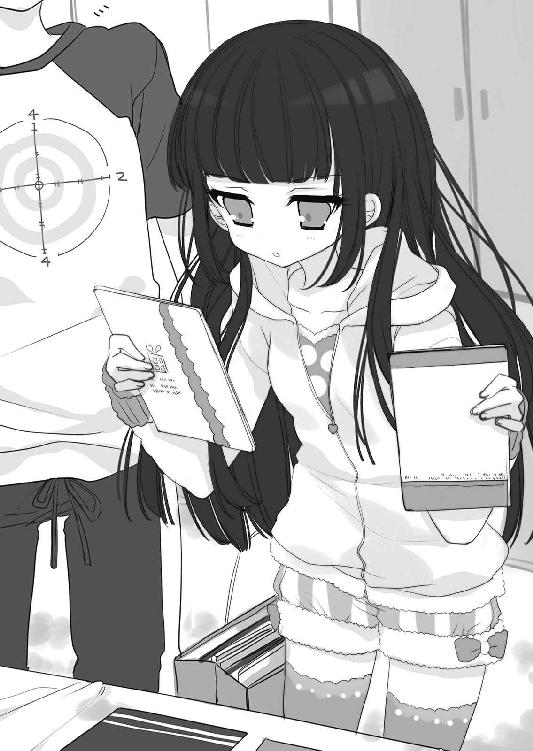
「じゃあ、読み終わったら返しに来るわ」
二つ目の紙袋にそれらを入れて持ち、最初に渡した紙袋をもう片方の手で持って、彼女は最後にためらいがちに口を開いた。
「......キミの同人誌チョイス、いいセンスしてる。ファッション腐男子かと思ってたけど見直したわ」
少し悔しそうな感情を声に滲ませて、八剣は自らドアを閉めて去っていった。
「......な......なんなんだ、今のは......」
一人になって、急襲者が出て行ったドアを見つめて立ち尽くしてしまう。すると、それほどの間を置かずに再びコンコンとノックの音がした。
「はい？」
同人誌の忘れものでもあったのかと思って開けると、そこにいたのは八剣ではなかった。
「えっ!? 菊川さ......」
「おじゃまするナリよ～、霧島氏！」
言いながら、菊川は俺の身体を押すようにして部屋に入ってくる。
「な......なんだよ!? っていうか、その格好は......!?」
菊川はスウェット素材のハーフパンツを穿いていたが、上半身はほぼ裸だった。さらしと思われる白い布だけを胸にぐるぐるに巻きつけていて、潰しきれない豊かな丸みが深い谷間を作って目のやり場に困る。
「次のコスプレキャラで悩んでたナリ。それでこの前のイベントの写真を見てたら、霧島氏のことを思い出したナリ！」
「なんでこんな時間に!?」
「ＧＷのイベントまでには、もうあんまり時間がないナリ～！」
「......ちなみに、そのイベントって......？」
「スパコミの二日目ナリ～！」
よもや御車響子と同じかと思って訊いてみたが、違っていたのでほっとした。
「今度は友達のスペースで写真集のＲＯＭも売ろうと思ってるから余計に悩むナリ。いつも、いっぱい写真は撮ってもらえるけど、ＲＯＭはあんまり売れないナリ......」
「ふーむ......」
──ＲＯＭは女性キャラのコスの方が売れると聞くわ。ＲＯＭを買ってくれるのは男性が多いから。
この前、池袋で御車響子が言っていたことを思い出した。
「それなら、女性キャラをやってみたら？ そうしたら男がＲＯＭ買ってくれるよ」
それを聞いて、菊川は大きな目をぱちくりさせる。
「ボクが......？ 女性キャラをやるナリか......？」
「うん。ワンピーズのバンコックとか、似合うと思うけど」
「ええ～～っ!?」
信じられないという顔で、彼女は頭が取れてしまいそうなほど首を大きく振る。
「ムリムリ！ 恥ずかしくてとてもできないナリよ！ ボクには無理ナリ！」
「そんなことないと思うよ。菊川さんはスタイルがいいし」
まさか自分で気づいていないこともないだろうと思って言ったのだが、菊川はポッと顔を赤らめた。
「ほ、ほんと......ナリ......？」
「えっ？ ああ、うん、かなり......」
意外な反応に、こちらも動揺してしまった。
「............」
菊川は、頬を紅潮させたまま、目玉を上にきょろきょろ動かして、何か考えている風だった。それから何を思ったのか、俺を見つめて嬉しそうに口角を上げる。
「ふうむ......。ちょっと考えてみるナリ」
（楽しそうだなあ......）
自分のやりたいことがあって、試行錯誤しながらそれに邁進して。御車響子と同じだ。
今の俺には、好きなことに夢中な彼女たちの姿がまぶしい。
「ありがとナリ！ 参考になったナリ」
爽やかにお礼を言った菊川は、ふと俺の後ろの畳に視線を落として目を見開く。
「あっ、これ！」
布団の方に近づいてしゃがみ、枕元に落ちていた同人誌を拾い上げた。
「この前ボクが言ってた、楠田モモコ先生の新刊ナリ～！ 出しといてくれたナリか？」
「えっ!? あ、ああ......うん」
本当は、さっき八剣が「これは持ってる」と残していったものなんだけど。
「じゃあ借りてくナリ、ありがとうナリ～！」
菊川は満面の笑みで本を抱え、足取りも軽く俺の部屋を出た。
「コスプレのこと、霧島氏に言ってよかったナリ。これからも相談させて欲しいナリ！」
「え？......ああ、うん......」
「やったナリ！ おやすみナリ～！」
手を振りながら、菊川は自分でドアを閉めた。
「......あんなアドバイスでよかったんだろうか......」
御車響子の受け売りを言っただけだし、今後も彼女の力になれる自信はないのだが。
「......ん？」
部屋に一人になってから、ふと菊川との会話を思い出す。
「楠田......モモコ......？」
──このカリスマ大手作家、楠田モモコ様がなんでも教えてしんぜよう～！
「ああ～っ！」
思い出した。御車響子が買い、菊川が一冊だけ熱烈に貸して欲しがり、八剣が「持ってる」と除けた、おそらく本当にカリスマ級の人気同人作家。
ＢＬ同人活動のことなら、彼女に訊けばまず間違いない。
「もしもし、ユキ姉!?」
勢い込んで電話をかけ直した俺は、その晩、空が白々と明けるまでユキ姉と同人誌の話を続けたのだった。
そうして迎えた翌日は、当然の結果として寝不足だった。
昼休みになり、コンビニ弁当を黙々と平らげてから机に突っ伏して、俺は眠気が意識をさらうのを待っていた。
『二年五組の霧島くん、二年五組の霧島くん、放送室まで来てください』
そのとき、校内放送で突然そんなアナウンスが流れた。
「......？」
なんだろう。落とし物でもしたのだろうか。
それにしては呼び出されたのが職員室でも生徒会室でもないということで、首をひねりながら教室を出た。校内にはお昼の放送としていつものように人気のＪ‐ＰＯＰが流れ、三階の放送室に着くと扉の上の「放送中」のランプは点灯しているが......。
「よっ、少年！」
防音扉を開けた先で手を上げたのは、真澄先輩だった。寮では食事のたびに会うが、制服を着ている彼女を見たのはこれが初めてだ。
「......先輩が、なぜこんなところに？」
パソコンや機材の並ぶ部屋の中で、先輩は一人で座っていた。椅子に逆向きに座っているので、背もたれがお腹の前に来ている。
「っていうか、今はお昼の放送中では？」
「あー、いいのいいの、曲はパソコンから自動で流れるから。あたしら放送部員は最初と最後にちょっと喋ればいいだけ」
「えっ、先輩まさか放送部員ですか？」
「そうよー。部員でもあたしの顔知らない子がほとんどだけど」
軽いノリで言いながら、先輩は袋から半分出したパンをかじる。その透明な袋に書いてある「納豆揚げパン」の文字にぞっとして、すぐに見なかったことにした。
「......もしかして、俺を呼び出したのは先輩ですか？」
「そ。寮だと他の子に見つかるかもしれないから、今日久しぶりに学校来たついでに。あたしが生主やってることは、仕事先との関係もあって、一応世間には内緒なんだ。だから二人っきりの秘密ってことでよろしく～！」
「それはいいですけど......」
秘密を守るのは、他のメンバーとの約束で慣れている。
「俺を呼び出したのは、その話ですか？」
「いや違う、実は折り入ってお願いがあって」
そう言うと、先輩はいきなり椅子から下りた。
「今度のショタ仮面の生放送に出て！ この通り！」
「ええ～っ!?」
土下座する先輩を見て、驚くことしかできない。
「っていうか話違うじゃないですか!? この前は取材って......」
「それはさ、キミがこんな近くに住んでると思わなかったし」
と、先輩は顔を上げる。
「当たり前だけど、ニコ生って寮のあたしの部屋で撮ってるの。キミならすぐ来てもらえるでしょ」
「だからって......」
「お願い！ 頭ならいくらでも下げるから！ お願いします！」
「い、イヤです！」
床に額を打ち付ける先輩を見ても、迷いなく即答した。
（そもそも俺、腐男子じゃねーし......！）
「ちゃんとプライバシーには配慮するから！ あたしみたいな仮面じゃなくて、馬とかゴリラとかのフルヘッドマスクかぶっていいし！」
「そういう問題ではなくて......！」
「ちゃんとギャラも出すし！」
ピクッと一瞬心が揺れるが、そういう問題でもないと自分に言い聞かせる。
「いや、あの、俺はですね......」
──腐男子じゃないんです。
──じゃあ、どうしてこの前のイベントであんなにＢＬ新刊買ってたわけ？
──それは、人に頼まれて......。
──人って誰？ もしかして腐男子友達？ 紹介して！
──いや、男子ではなく女子で......。
──えっ、その子ってショタコン!? 少年は好き!?
「............」
先輩のこの勢いでは、どこまでも食らいついてきそうで面倒だ。
「えーと、あの......」
かくなる上は。
「......とにかく、すいません！」
そう言って、防音扉を開けた。
「えーっ!? ちょっと待ってよ！」
「俺には無理です！」
「も～～！ いいよ、あたし諦めないからね───......」
パフンと扉が閉まって、先輩の叫び声の余韻はプツッと切れた。
「諦めてください......！」
勢いで走って逃げながら、この先どうしようと冷や汗を掻く。三階は一年生の教室があるので、廊下にたむろしている下級生たちが、疾走する俺を変な目で見ている。
「あ、霧島先輩じゃないですか」
スピードを緩めて階段へ向かっていたとき、その手前の廊下で声をかけられた。
「えっ？」
立ち止まって、今まさに追い抜いた集団を振り返る。そこに花垣の姿があった。
「何やったんですか、先輩。さっき校内放送で呼び出されてましたよね」
「ああ、いや......」
「汐実、知り合い？」
花垣は同じような茶髪の女子二人と一緒にいた。お嬢様学校の清聖にも、学年に数名はこういうギャルっぽい雰囲気の女子生徒がいる。
「うちら、あっち行ってようか？」
「え？ うん......」
「......じゃあね、花垣さん」
特に彼女と話すことはなかったので、俺は気を利かせたつもりで立ち去ろうとする。
「先輩！ すいません、ちょっと！」
すると、友達二人を残し、花垣は俺を追って走ってきた。もう階段を下りていた俺は、踊り場で立ち止まった。
「......？ どうした？」
「先輩！ あの！」
花垣は怖い顔で俺をにらんでいる。
「......読んでくれたんですか......」
「え、何を......」
と言いかけて、思い出した。
「あっ！」
──......新刊、読んだら感想教えてくださいね。
完全に忘れていた。
「ご、ごめん......。最近ちょっと忙しくて......」
気の進まないＢＬ同人誌の読書、しかも他にも御車響子から借りた大量の漫画があるので、小説本はつい後回しにしてしまっていた。
「............」
花垣は俺をにらんだままだ。
「......本当にごめん......今日帰ったら必ず読むから」
「別にいいです！」
ふいっと顔を背け、彼女は不貞腐れたように言った。
「同人誌って、人に強制されて読むようなもんじゃないんで」
「いや、読みたい！ 読みたいんだよ！」
どうしても売ってくれと頼みこみ、結局タダでもらってしまった手前、それだけは言っておかないと申し訳ない。
「絶対読むから......！」
だが、花垣は俺の方を見ない。
「読みたい！ ああ～、今すぐ帰って読みたいなァ～......！」
そっぽを向いた彼女の横顔が、少しずつ泣きそうに歪み始める。
（ど、どうしよう......逆効果だった！）
心の中の俺も、もう泣きそうだ。
「......ほんとに、別にいいんで」
ぎりぎりで涙をこらえた花垣は、目の縁を赤くして言った。低いくぐもった声で、決壊寸前に潤んだ瞳をせわしなく動かす。
「先輩に感想を期待したウチがバカでした」
そう言うと、彼女はさっと身を翻して歩き出した。
「あ......！」
短いスカートをはためかせて、花垣はずんずんと階段を上っていく。
「ほんとにごめん......！」
後ろから話しかけても、彼女は振り向かない。追いかけて言う言葉も見つからないので、そのまま踊り場で彼女を見送ってしまった。
「ああ......」
女の子を泣かしてしまったかもしれない。罪悪感に打ちひしがれて二階に戻り、教室に入ろうとしたとき、中から出てきた御車響子と出くわした。
「あっ、霧島くん」
俺を見た彼女は、ぱっと顔を輝かせる。
「ちょうどよかったわ、今お時間ある？」
「えっ？ ああ......」
「ちょっとご相談があるの。生徒会室に来てくださる？」
そうして俺は、彼女と共に生徒会室を訪れた。今日も中には誰もいない。
「ここは、会長以外使わないの？」
「そうね。この家具が来てから、わたし以外のみなさんは『落ち着かない』とあまりこの部屋にいらっしゃらなくなったわ」
それは大いにわかる気がする。
「慣れればそんなに居心地悪くないのよ？ だから、ほら」
そう言うと、会長の机に鞄を置いた彼女は、茶色い大きな封筒を取り出した。さらにそこから中身を出すと......現れたのは、漫画の原稿用紙の束だった。
「時間もないし、原稿、お弁当を食べながら進めようと思って持ってきたの」
「だ......大丈夫？」
「ええ。生徒会室は内鍵がかかるし」
それは、今しがた彼女が閉めていたので知っている。
「......それで、相談って？」
「同人誌の発行部数のことなの。そろそろ印刷所に仮予約をしないといけなくて」
そう言いながら、御車響子は重箱を取り出す。
「百部くらいにしようかと思うのだけど、どうかしら？」
「ひゃっ、百部!?」
「えっ......お、多かったかしら？」
パカッと蓋を開けた弁当の中は、今日はおどろきの白飯オンリーだった。もう海苔を買うお金もなくなったのか？
「......ああ、これはあの、味の素でちゃんと味付けしてあるご飯だから、ね？」
弁当の中身に釘付けになっている俺に、言い訳するようにそう言う。
「......それとも、えーくんも召し上がる？」
「い、いや......今日は遠慮しておくよ」
こんな食生活の彼女から、たとえ米一粒でも貴重な栄養源を取ってしまうのは申し訳ない。今日の夕飯は肉にしてあげようと思った。
「......そんなことより、百部って。少なすぎるだろ」
「えっ!? そ、そう......？」
そんなこと思ってもみなかったのか、御車響子はうろたえる。
「わたし、部数のこととか全然わからなくて......」
そう言ってうなだれる彼女を見て、ついにユキ姉から得た知識を披露するときが来たかと、心の中で腕まくりをした。
「......俺もわからなかったけど、あれから同人誌のこと色々と調べてみたんだ」
本当はカリスマ同人作家の「楠田モモコ先生」に訊いたので、ソースには自信がある。
──黒帽受けなら五百くらい刷ったらどうかなぁ～！ その子、上手いんでしょ？
「君のカップリングは人気だし、君の実力なら五百部くらい刷っていいと思うけど」
「ごっ、五百部!?」
今度は御車響子が驚く番だった。
「ダメよ、そんなの......！ わたし、初参加よ？」
「でも、ネットに漫画とか上げてたんじゃないの？」
「それは......ピクシブには投稿していたけど」
「そこでのフォロワーって、どれくらい？」
──ピクシブには、お気に入りの作家を登録する「フォロー」ってシステムがあるの～。どれだけの人にフォローされているかはフォローされている本人にしか見えないけど、千超えたらまあまあ人気と思っていいよ～！ ちなみにユキは万だけどねぇ～。
「......四千ちょっと......」
聞き間違いかと思った。
「四千......!? すごいじゃん！」
「で、でも、たぶんわたしの描いているのが人気のカップリングだからで......。わざわざ本まで買ってくれるかはわからないわ」
「会場で売りきれなくても、書店通販で売れるかもしれないだろ？」
「書店委託は......しないの」
「えっ!? なんで」
「そんなに売れる自信がないし......」
先日は池袋であんなに色々と俺に教えてくれたのに、自分のことになると彼女は全然ダメだ。というか、漫画を描くこと以外にはあまり興味がないのかもしれない。
でも、少なくとも四千人の人間が、御車響子の描く漫画を「無償ならまた読みたい」とチェックしているわけだ。その中の何割かは、会場にいたら本も買ってくれるだろう。
「......わかった。もうちょっと調べてみるよ。君のピクシブＩＤ教えてくれる？」
「ええ......」
「最近の傾向として、ピクシブで人気のアマチュアを出版社の人間が見つけてスカウトすることも多いらしいんだ。特にＢＬは同人からの引き抜きが多いみたいだし、ピクシブは充実させておいた方がいいよ」
これも全部、ユキ姉の受け売りだ。
「そうね......。ごめんなさい、わたし、この一年、自由に漫画が描けるようになったのが嬉しくて、そういうことあまり考えていなかったわ......」
俺の勢いに気圧されたのか、彼女はしどろもどろに答える。
「今はまだ練習期間だと思っているし......。イベントに出ようと思ったのも、〆切を設定することで、少しでもいっぱい漫画を描く環境に身を置こうと思ってのことで......」
「......君がもし面倒だったら、そういう事務的なことは俺が引き受けてもいいけど」
図々しいかなと思った。この前まで腐女子はちょっと......なんて思っていたくせに。でも、彼女の夢を応援したい。とにかく何か力になりたい。
そう思って控えめに口にした俺の提案に、彼女は顔を輝かせた。
「本当!? とても有難いわ、えーくん......！」
手を合わせて、目を潤ませんばかりに感激する。
「わたし、事務作業がとても苦手なの。ピクシブのアイコンもまだデフォルトだし」
そんなやる気のなさで四千もフォロワーがついたのかと思うと、オタクというのは意外と中身をちゃんと見ているのだなと感心する。
「イベントまであと二週間もないしもうそろそろ新刊の中身サンプルもアップした方がいい時期らしいよ。それも、よかったら俺がやるから」
「まあ、ありがとう！ それなら、アイコン用に先に表紙のカラーを上げて、サンプル用に若いページを優先的に仕上げないといけないわね」
「うん、頑張って。消しゴムかけとかだったら、俺も手伝うから」
「ありがとう、本当に感謝しているわ、えーくん......！」
そうして、その日から御車響子の同人修羅場が始まった。
「あれ～？ 生徒会長氏がいないナリ」
翌日、夕飯で門限の時間である七時になっても、御車響子の姿は食堂に見えなかった。
「部屋にいると思うんだけど......呼んでくるよ」
オタク荘にいる高嶺の花たちは、基本的に他人に無関心で社交性がない。朝晩の食事のたびに女子が五人も集まるのに、世間話や雑談などはほとんどなく、俺が点けたテレビ番組を見ながら黙々と飯を食べるだけだった。菊川はその中ではコミュニケーションを取る方で、御車響子の不在に言及したのだった。
（昼寝でもしてるんだろうか......）
そう思いながら、全員分の食事を用意し終えて二階へ向かった。
「......御車さん」
コンコンとノックをしながら呼びかけても、返事がない。いよいよ寝ているのかと思い、そっとノブに手をかけると......今日も、開いた。
色々な意味で危ないから、部屋に入ったら必ず鍵をかけた方がいいと言っているのに、御車響子はけっこう抜けていて、俺が知る限りこのドアが施錠されていたことはない。今日も注意してやらねば......と思いながらドアを開けた向こうを見て、それどころではない光景に息を呑んだ。
御車響子はちゃんと起きていた。部屋の中央にある机に向かい、目の前の漫画原稿に一心不乱にペンを走らせている。その鬼気迫る様子を見た瞬間、それ以上ドアを開けて物音を立てることすらはばかられた。
彼女は部屋着にしているレースとフリルのたっぷりついたドレスの袖をめくって、なりふりかまわぬ様子だった。その手のあちこちに黒いインクがついていて、ドレスにもところどころ黒い染みができているのが見てとれる。
「............」
呼吸の音にすら気をつけ、俺は元通りドアを閉めた。
「......御車さんは体調が悪いらしくて、あとで食べるって」
下に下りると、誰に言うでもなく呟いて、彼女の膳にラップをかけた。
「ふうん、心配ナリね......」
菊川だけが、俺のその呟きに応答してくれる。
「んじゃ、夕飯食べたらみんなで見舞いにでも行ってみる？」
真澄先輩が軽い調子で言って、俺はぎょっとした。
「えっ!? ダッ、ダメだ！ それはやめた方がいい！」
彼女たちに御車響子のあの部屋を見られたらヤバい。そう思うあまり慌てた口調になってしまって、食卓にいた四人全員が、一瞬食事の手を止めて俺を見た。
「なんでよ？ 面会謝絶ってほどじゃないでしょー？」
真澄先輩が不審げな表情になる。
「い、いや......、御車さん、他人に気を遣う人みたいだから......そういうのはかえって具合を悪くさせちゃうかと思って......」
苦しすぎる言い訳なのはわかっていたけれども、他に言うことも思いつかない。
「......そうですよ、やめときましょう、先輩」
そう言ったのは、花垣だった。無関心そうな顔で、箸でご飯を口に運びながら続ける。
「真澄先輩みたいに無神経な人ばっかりじゃないんですから。ウチも親しくない人に突然部屋なんか来られたら迷惑なだけだし」
「なんだとぉー!? あたしの繊細さがわからないなんて、作家にあるまじき感性だね！」
「心身ともに健康で二回も留年するって、かなり図太い神経だと思いますよ」
「まあまあ、二人ともやめるナリよ」
菊川が仲裁に入るが、先輩も花垣も別に本気ではなかったようで、食卓は元通りの雰囲気に戻った。ちなみに八剣は、この一部始終の間、ずっと口角を上げたブリッコ笑顔のまま我関せずと食事を続けていた。
（助かった......）
彼女にそのつもりがあったとは思わないが、花垣のおかげで御車響子のオタバレは回避された。
そうしてみんなが食事を終えて食堂から出て行っても、御車響子は下に下りて来なかった。仕方がないので、残った彼女の分の皿をすべてお盆に載せ、二階へ持っていく。
よかったら食べてください。
霧島
それだけ書いたメモを上に載せ、廊下にお盆を置いて帰ってきた。
さっき見た、一心不乱に原稿に取り組む御車響子の姿が、瞼の裏に焼きついて離れない。たぶん、昨日俺に言った表紙とサンプル用の原稿を仕上げているのだろう。
（頑張れ、御車響子......。君ならきっと、君の目指すものになれる）
出来上がるまで、邪魔するのはやめておこうと思った。
□
翌朝、御車響子は珍しく本鈴ギリギリに教室へ駆けこんできた。
「見ましたこと？ あの御車さまが、廊下をお走りになったわ」
「見たわ。たった三歩だけど、確かに駆け足になられていたわ」
「でも、それも意外性があって素敵だわ......」
辺りの女子がざわつく中、彼女は優雅に微笑んで俺を見る。
「おはよう、霧島くん」
「あ、ああ......おはよう」
毎度のことだが、学校で御車響子と話すと緊張する。
「......昨日はありがとう、ご飯」
周りの目を気にする俺に、彼女は声のボリュームを落として言った。
「いや。......それより、進んでる？」
「数日中に終わりそうだわ。一日でも早くサンプルを上げた方が、多くの人の目に留まるものね。頑張らなくちゃ」
そう言いながら、彼女は鞄をポンポンと叩く。今日も原稿を持ってきているのだろう。本当に頑張り屋だ。
そう思っていたこのときは、まさかあんなことが起こるとは思っていなかった。
それは、教室での世界史の授業中だった。
漫然と教科書を眺めていた俺は、不意に聞こえたガサッ、という音で顔を上げた。音がした左前方の床を見て一瞬目を疑う。
そこには、見覚えのある大判の茶封筒が落ちていた。落下の勢いでかぶせてあるだけの蓋が開き、中の白い紙が何枚も、投げられた玉すだれのように遠くの床まで伸びている。
（まさか......）
まさかだ。そんなわけない。
自分にそう言い聞かせながら御車響子の顔を見て、俺の心配が杞憂でないことを悟った。
「............」
御車響子は青ざめた顔で絶句して、手の届かぬところにある封筒を茫然と眺めていた。
（......！）
間違いない。床に落ちているのは原稿の封筒で、のぞいている白い紙は原稿の裏面だ。
「あら？ 今何か落ちましたわね」
「え？ これかしら？」
前から一、二番目の席にいる女子たちが、ひそひそ言いながら床に手を伸ばした。俺と御車響子は前から四番目、後ろから二番目の席にいる。それくらい前に飛んでしまったということで、逆に言えば、御車響子がそれを落としたとは即断できない。
「あら、これ......」
見るな！ と言いたかったが、どうしていいかわからなかった。それは御車響子も同じだろう。俺たちが固唾を呑んで見守る中、数人の女子が原稿を拾って表に返した。
「あら......！」
紙面を見た彼女たちは、異星人に出会ったかのように目を丸くしている。
「漫画かしら。お上手ね」
「これ、どなたの？」
彼女たちの視線が、俺と御車響子の間をさまよって、そんなわけないと手元に戻る。
「まあ......！ よく見たらこの漫画、男の方同士が接吻なさっているわ。はれんち！」
「もしかしたら、今流行りの『ぼーいずらぶ』ではなくて？」
（や、やべえ......！）
気の毒で、御車響子の方を見ることもできない。きっと顔面蒼白の思考停止状態だろう。
「どうかしましたか？」
そこで、世界史の女性教師が騒ぎを聞きつけて授業を中断した。
「先生、床に漫画が......」
女子の一人が、自分の持っていた原稿を渡す。周りの女子たちも先生に原稿を渡した。
「漫画？ あら、上手......誰が描いたの？」
先生の言葉を聞いて、生徒たちはざわめく。
「そうよね......これを落とした方は、これを描かれたのよね」
「この漫画の作者がこの教室にいるってこと......？ どなたが落としたのかしら？」
「こちらから滑ってきたような気がするわ」
一人の女子が指でたどった先に、御車響子がいる。それを見て、その女子は慌てて人差し指を引っ込めた。
「そ、そんなわけありませんわね......」
「そうよ。よりによって御車さまだなんて、天地が引っくり返ってもありえませんわ」
隣の御車響子の肩がビクッと動き、心配になって顔を見た。彼女の表情は硬く、両手は膝の上で固まってしまっている。
「......えっ......まさか......」
それを見て、女子たちが不安げに顔を見合わせたときだった。
「先生！」
ほとんど反射的に、大声で叫んで立ちあがっていた。
「......ど、どうしたの、あなた」
原稿を手にした先生は、俺の勢いにビビっている。
「先生、それ......」
どうしよう。もう後には引けない。
「それ、俺のです！」
教室がシーンと、水を打ったように静かになった。
「......お、俺が描いた漫画なんです、それ......返してください......」
途中から声が小刻みに震え出す。俺はとんでもないことを言ってしまった。
でも、御車響子が犯人だとバレるわけにはいかない。
「......あ、あなたが......？」
どんなシーンを見てしまったのか、先生は原稿と俺を見比べて頬を引きつらせる。
「はい」
俺は深く頷く。
「机の中にしまっておいたんですが、落としてしまって......。自分の作品とはいえ、学校に漫画を持ってきて申し訳ありませんでした。帰るまで御車さんに預かってもらいます」
「え......」
突然名前を出され、御車響子は面食らった顔で俺を見る。
「それでいいですか？ 先生」
「......え、そ、そうね......」
俺のことを不気味そうに見た先生は、もうその漫画にかかわることをやめたかったようで、そそくさと教壇から降りてきて紙の束を御車響子に渡した。
「一応違反物だから、生徒会長のあなたにお願いするわね」
「......はい......」
額にわずかな汗をにじませて原稿を受け取った御車響子は、数秒後にようやく我に返った様子で俺を見た。
「これは......終業まで生徒会室で管理しておきますね」
「すいません、お願いします。放課後、生徒会室へ行きます」
深めに頭を下げ、席に着く。教室の全方位から、好奇の視線が注がれているのを感じた。
「ねえ、まさかとは思うけど、霧島さんって......」
「そうね......。うちは男子が少ないから、男の方は入学してすぐにどなたかとお付き合いを始めるのに、そういえば霧島さんだけは一年の頃から浮いた話一つ聞かないわ」
「そういう勘ぐりはよくないわ。霧島さんがどんな性的指向をお持ちでも、わたくしたちはクラスメイトとして温かく見守って差し上げましょう」
どうやら俺は、級友の中ですっかり「そっちの人」認定されたようだ。男でＢＬ漫画を描いていたら当たり前の誤解か。
（......いいんだ。どうせ友達なんかいないんだし）
本当は全然良くないけれども、それよりも、御車響子が腐女子だとバレていたら。そう考えてゾッとする。
「......それにしても、ほら。やっぱり御車さまじゃなかったじゃない」
「そうよ、わたくしは最初から信じていたわ」
「きっと、びーえるなどという破廉恥な漫画などご存じなくて、茫然とされていたのね」
辺りの女子たちは安堵した顔で、口々に小声で言い合っている。
「はい、それでは授業に戻りますよ」
先生の一声で、お嬢様たちは一斉に口をつぐんだ。そうしてクラス中が黒板を向き、先生が授業を再開してしばらく経った頃。
「......ふぅ......」
わずかに、羽をそよりと揺らすくらいの空気が動き、隣の席の御車響子は、ようやく呼吸ができたかのように緊張の解けた様子でため息をついたのだった。
「本ッッッ当にごめんなさい！」
放課後、生徒会室を訪れた俺に対する彼女の第一声はそれだった。
「わたしのせいで、えーくんの学校生活がめちゃくちゃだわ......なんとお詫びしていいか」
部屋に入ってきた俺を、彼女はドアのところまで走ってきて最敬礼で出迎える。
「いや、いいよ。別に今までと何も変わらないし」
本当にそうだろうか？ 学校中のあちこちで奇異な目で見られたりしたら、ちょっとどころでなく居心地が悪そうだけれども。あまり実感が湧かない。
それよりも、もし俺が女子に興味がないと周知されれば、今までと違って堂々とお嬢様たちに鼻の下を伸ばせるのではあるまいか。呑気にそんなことを考えている俺は、ちょっと変なのかもしれない。
「......俺のことはいいよ。バレなくてよかったね」
俺が言うと、今まで顔が見えないほど深く頭を下げていた御車響子は、カクッと顎を上げる。上目づかいで俺を見た彼女の顔は、ぽわっと赤面していた。
「えーくん......」
その瞳にみるみるうちに光が満ち、彼女は目に涙を溜める。
「ダメだわ、わたし、本当にマヌケで......。昼休みにここで作業をしようと思って、その前に授業中でも消しゴムかけくらいならできるかしらと思って、机の中の原稿を取り出そうとしたらぶちまけてしまったの......。自分が信じられないわ......」
俺はといえば、彼女の様子にすっかり気が動転して。
「えっ!? いや、俺はマジで大丈夫だから！ むしろキャラが立ってほも......本望だし！」
彼女に触れることもできず、おろおろと周りで手をバタつかせる。
「えーくん......」
彼女はそんな俺を、赤く潤んだ目で見つめる。
「............」
なんだかキスすらできてしまいそうな雰囲気の気がして、ごくりと唾を呑んだとき。
俺の背後のドアがいきなり開いた。
「......失礼しまーす」
だるそうな少女の声がする。
「......!?」
俺も御車響子も、ビクッと身体を震わせ、同時にそちらを見た。そういえばまだ内鍵をかけていなかった。
「君は......」
現れた女子を見て、俺はさらに驚いた。そこにいたのは......。
「花垣さん」
御車響子は彼女、花垣汐実にぎこちない微笑を向けた。目元が若干赤いが、その顔はまあまあ普通に見える。
「............」
花垣は一瞬無言で俺たちの様子を探るように見つめた。が、特に表情には出さず、持っていた紙の束を御車響子に差し出す。
「......これ、うちのクラスの分集めてきました。提出遅れてすいません」
「ありがとう。確かに受け取ったわ」
「......じゃあ」
最後にちらっと俺を見て、花垣はすぐに去っていった。
「......何それ？」
ドアが閉まったのを確認してから、御車響子の持っている紙の束をのぞきこんだ。それは新学期のクラスアンケートで、うちのクラスでは先週回収されたものだ。
「彼女、クラス委員みたい。この前のクラス委員会でもお見かけしたわ」
「へえ......」
自薦か他薦かは知らないが、あんなギャル丸出しの見た目でクラス委員になれるのか。
「変に思われなかったかしら。わたし......」
「大丈夫だろ。何も言われなかったし」
それより花垣といえば、俺には気に病んでいることがある。先日、彼女を泣かしてしまったかもしれないことだ。
「......あのさ、話変わるけど、この前のイベントで俺が買った小説の同人誌......あれどうだった？」
本当は、そんなに変わっていないのだけれども、バレないように注意深く言葉を選んだ。
「え......？......ああ、あれね。実はまだ読んでいないの」
「えっ？」
「漫画本と違って、小説の同人誌は数分で気軽に読めるものではないでしょう？ 特にあの方の小説には世界観があるし、原稿が終わって充分時間のあるときに、気持ちを作って一気に読みたいと思って、えーくんに先にお貸ししたの」
目を丸くする俺に、彼女はそう説明する。
「それがどうかしたのかしら？」
「えっ!? ああいや.........」
もし彼女から感想が聞けたら、読む前の心構えができるかなと思ったのだけれども、そうはいかなかったようだ。
「なんでもない。......とにかく、俺のことは気にしなくていいから」
改めて言ってやると、御車響子は親愛のこもったまなざしで俺を見つめる。
「本当に、えーくんには心から感謝しているわ......ありがとう」
その視線に感謝以外の感情が含まれていたらいいのにと願ってしまうくらいには、俺は彼女にハマり始めていた。
□
そうして、御車響子の原稿修羅場は順調に再開される。
彼女のこだわりが強すぎて予定より遅くなったが、イベント一週間前の日曜の夜に、ピクシブに上げる用のサンプルページと、アイコンにする用のカラー表紙が出来上がった。
「......ってことで、アイコンにするのは、黒帽の顔の部分でいいんだよな？ ちょっとサンプル送ったから見てみてくれる？」
自分の部屋のパソコンの前で、俺は御車響子と電話しながらアップ作業をしていた。最初はラインのトークでやりとりしていたのだが、まどろっこしくなって通話に切り替えた。ちなみに、彼女の部屋のパソコンは、原稿がデジタル作業の段階になったため彼女が現在進行形で使用している。
「えっ？ ああ、もうちょっと余白多くできるよ。あとサンプルなんだけど、最後の方ちょっとネタバレになりそうなセリフない？ モザイクとか塗りつぶしとかで消せるけど......えっ？ ああ、八ページ目の四コマ目の......え？ ああ、もうそっち行くよ」
ユキ姉から聞いたメモを参考に見ながら喋っていたが、ついに電話も面倒になって立ち上がった。結局その場にいてやりとりできるのが一番便利に決まっているのだ。
自分のノートパソコンを持って、二階に上がって行ったときだった。
「......あ」
自室から出てきたと思われる花垣とばったり出くわしてしまった。
（よりによって......）
俺は未だに彼女の同人誌を読んでいない。この前のこともあるし、無視されるかと思いきや、彼女は立ち止まった。花柄のフリルつきタンクトップにお揃いのショートパンツという部屋着のポケットに手を突っ込み、俺をじっと見ている。
「......ど、どうかした？」
沈黙に堪えかねて訊くと、彼女も口を開いた。
「何やってるんですか、先輩」
「え、えっ......!?」
言われてみれば、俺は両手でパソコンを持って、明らかにどこかへ運んでいる途中だ。
「いや、あの、これは......」
二階には寮生の部屋しかない。御車響子の部屋に行くことを明かすならもっともらしい理由を言うべきだが、一度言い淀んでしまった手前、怪しまれそうで言えなかった。
「......彼女でもいるんですか？ この寮に」
「えっ!?」
大げさに驚いてしまい、しまったと思う。
（彼女ではないけど......）
御車響子には一方的に憧れているので、つい動揺してしまう。
「......別にいいですよ。ウチ、三次元の色恋沙汰とか興味ないんで、言いふらしたりしませんし。どうぞ行ってください」
「いや......」
この流れで御車響子の部屋に行くのはまずくないか？ そう思って立ち往生していると、花垣は短く嘆息して俺から目を逸らした。
「......まあ、大体誰のとこに行くのかはわかりますけど」
「えっ......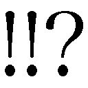」
「真澄先輩でしょう」
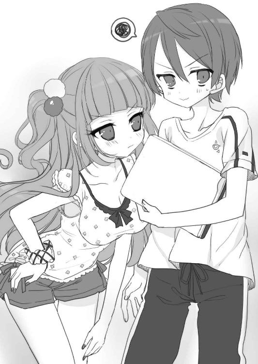
「なんでだよ！」
一番誤解されて嬉しくない人の名前を言われて、激しくツッコんでしまった。そんな俺を見て、花垣は興味深そうな表情をする。
「真澄先輩はナシ、と。じゃあ......」
「わーっ、待った！」
この調子で名前を挙げられていったら、うまくごまかせる気がしない。
「言う、言うよ。でも、彼女とかじゃなくて......」
でも、下心なら、ちょっと......どころではなく、ある。身の程知らずも甚だしいけど。
「............」
レポートを書くのに御車さんのパソコンが壊れたっていうから、俺のパソコンを貸してあげることになってたんだ。同じクラスだし。
最初から、その手の嘘を準備して部屋を出ればよかった。俺は不用意だった。
「片想いですか？ ダッサ！」
そんな俺を見て、花垣は吐き捨てるように言った。
「霧島先輩のこと、ちょっといいかもって思ってたけど、まぢゲンメツです」
「......えっ!?」
何を言われたかわからず、呑み込むのに時間がかかって反応が遅れた。
「あ、勘違いしないでくださいね。彼氏候補の一人としてってことです」
ポケットから手を出して、花垣はふてぶてしい様子で腕組みする。
「ウチ、清聖のギャル友の中で一人だけ彼氏いないんで。一応中三のときから付き合ってる彼氏がいるってウソついてるんですけど、早くほんとの彼氏作んないと、ウソがバレるんで。ヤバイんで」
「はあ......」
「先輩なら、オタクで腐男子だけど見た目はフツーだからいいかなって思ってたんですけど、ウチの同人も読んでくれないし」
やっぱり、その話になってしまった。
──本当にごめん......今日帰ったら必ず読むから。
この前、あんなことを言ったのに。
「......読んでくれたんですか、それで」
「............」
この状況で、まだ読んでいないとは非常に言いづらい。
「あ、あの......。君の小説は、世界観があって......時間のあるときに、気持ちを作ってゆっくり読みたいと思って......、今は時間が取れなくて」
御車響子の受け売りを思い出しながら言ったが、花垣は顔に侮蔑の色すら浮かべる。
「......それって、女子の部屋に行く暇はあっても、ウチの小説読む時間は取れないってことですよね」
俺は取ってつけたように浮かべていた笑顔を凍りつかせた。
「......もういいです。あの本、返してください」
「えっ!?」
「別に買ってもらってないし。いらないならウチが回収しますから」
「そっ、それはダメだ！」
あの本は御車響子のものなのだ。彼女はあれを読むのを楽しみにしているし、勝手に返すわけにはいかない。花垣の本は書店委託などしていないだろうから本人から買うしかないし、機嫌を損ねて取り上げられたら最後、俺がそれを手に入れる手段はない。
「お金なら払うから、それだけは......！」
そう思って、つい必死になってしまった。そんな俺の顔を、最初はうさんくさそうに見ていた花垣だったが......。
「......わかりました」
両手を腰から下ろし、つり上げていた目尻を下げる。
「じゃあ、あと一回だけですよ。すぐ読んでください。次訊いたとき読んでなかったら、激おこスティックファイナリアリティぷんぷんドリームですから」
「ス、スティック？ ドリーム......？」
よくわからないが、文脈的に彼女の中で最上級の怒りを表す言葉のようだ。
「わ、わかった......。必ず一両日中に読むよ」
「約束ですよ？」
「ああ」
今度こそは、何を差し置いても読もうと決意する。
「じゃあ、そういうことなんで。あ、先輩もう行っていいですよ。ウチも暇人じゃないんで、もう行くんで」
そう言うと、花垣は再びポケットに手を突っ込んで一階に下りて行った。たぶん玄関ロビーのウォーターサーバーか、自分の飲み物でも取りに大台所の冷蔵庫に行くのだろう。夕飯後に寮生が廊下へ出ることはあまりないから油断していた。
「ふう......」
彼女の足音がすっかり一階へ消えてから、御車響子の部屋に向かった。
修羅場も深まり、御車響子の格好は、だいぶひどいことになっていた。普段着のお嬢様ワンピースには、跳ねたインクの他に消しゴムのカスも無数にくっついていて、ずっと座っているせいでスカートの辺りなんかしわくちゃだ。その顔には疲れが見え、特に目の下にはうっすら青黒いクマができているように見える。昨日の土曜日も一日中部屋で原稿をしていたようだし、蓄積した疲労もあるだろう。
「......あ、えーくん」
部屋の奥のパソコン机に座っていた彼女は、俺を見ると立ち上がった。出迎えてくれるつもりか、こちらへやってくる。しかし、その足取りはよろよろとしておぼつかない。
「いらっしゃ......きゃっ！」
「!?」
彼女が前のめりにふらつき、とっさにパソコンを片手に持ちかえて、空いた手で彼女の身体を支えた。
「......大丈夫？」
お風呂はちゃんと入っているみたいで、髪の毛からはシャンプーのいい香りがする。腕と半身に感じる彼女のやわらかいぬくもりを意識して胸が高鳴り、急いで身体を離した。
「具合悪いの？」
「ううん......。十時間くらいずっと座っていたから足がもつれて」
「え？ いくらなんでもそれは......。冷蔵庫に行ったりとかするだろ？」
「わたし、昨日からほとんど何も口にしていないの」
「ええっ!?」
確かに昨日の夕飯に彼女の姿はなかったけれども、部屋で何かつまむくらいしているのだと思った。
「......お茶とおにぎりくらいなら、今持ってくるよ」
「待って！」
踵を返そうとした俺を、御車響子が声で引き止める。
「わたしのことはあとでいいわ。先にサンプルを上げてくださる？」
「えっ？ でも......」
「少しでも早く反応が知りたいの。日曜は明日に備えて早く寝てしまう人も多いし」
今は午後の十時近くで、確かにそろそろネット民のゴールデンタイムだ。
「......わかったよ」
そうして約一時間後。
「あっ、見てみなよ、御車さん」
部屋の真ん中の丸テーブルに置いたノートパソコンで、俺は今しがたアップした御車響子のサンプルをチェックしていた。クリックするごとに閲覧数は順調に伸びている。
自分のパソコン机に座って、おにぎりを食べながら原稿をチェックしていた御車響子は、口をもぐもぐさせながらこちらへやってきた。その顔は緊張して見える。
「ほら、アップして数分なのにもう三十五もブクマ登録されてる。点数も満点ばっかりつけてもらっているし、君のフォロワーも増えたよ」
「ほんとだわ......」
俺の肩に顔が触れそうなくらい画面に近づいて、御車響子は驚きに瞳を細かく揺らしている。そして、はっと気づいたように俺から離れ、手にしたおにぎりに視線を落とした。
「......本当に、えーくんのお陰だわ......。えーくんのお陰で、わたし......」
そこで感極まったように言葉に詰まり、彼女は顔を上げて俺を見る。
「......わたし、頑張るわ！」
今まで以上に決意に熱く燃える瞳で、そう宣言した。
「......うん。頑張れ」
飲まず食わずで、ろくに睡眠も取らず。生命体としての欲求に逆らいながら、どうして人はこんなにも何かに熱中することができるんだろう。
かつては俺もそうだったんだ。楽しみにしていた新作ゲームの発売日、学校から帰ると一睡もしないで夜通しプレイして、次の日はフラフラだった。
「俺にできることがあったら協力するから、あと一息、頑張れ」
くだらないことだったけど、あの熱を失った今ならわかる。ああいう時間があったから、中学時代の毎日は楽しかったんだ。
あの頃の情熱を、俺は今、再び取り戻そうとしている。御車響子によって。
「ありがとう、えーくん......！」
瞳を煌めかせて俺を見つめる御車響子は、疲れた顔とは裏腹に、全身からエネルギーを放っているかのように生気に満ちて見える。そんな彼女を頼もしく思いながら、心の底から憧れていた。
５
そうしてイベントの四日前の水曜日、御車響子は予定通り二冊の新刊を脱稿した。
はずだったのだが。
「あれ......？」
金曜日の夜、夕飯の時間になっても御車響子は食堂に現れなかった。
「御車さん？」
部屋まで呼びに行くと、彼女は部屋にいた。
「何をやってるんだ？」
彼女は丸テーブルに向かって、何やら作業をしている。その様子は先日までの原稿修羅場のときとまったく変わらない。
「原稿は終わったはずじゃ......」
一心不乱に鉛筆を走らせていた彼女は、そこでようやく顔を上げた。
「あっ、えーくん」
俺を見て、彼女は少し笑顔になる。
「わたし、コピー本も作ることにしたの」
「えっ!? コピー本!?」
コピー本というのは、印刷所に印刷を依頼せず、自分で家庭用プリンターや業務用コピー機で印刷した本文をホッチキスで製本する、簡単な装丁の同人誌だ。ユキ姉が「コピー本だったら三百部くらいが限界だけど～」と詳しく話してくれたので知っている。
「......それって、今から作って間に合うものなのか？」
「ええ。もう明日しかないからそんなにちゃんとしたものはできないけれど、ちょうど描きたかったけど入らなかったネタがあったから、鉛筆描きででも出せればと思って」
そう言って、彼女は再び紙に鉛筆を走らせ始める。
「......わたしの漫画を読みたいと思ってスペースに来てくださる方に、少しでも多くご提供できるものを用意したいもの」
自分の手元を見つめながら、真剣そのものの顔で語る。彼女の意志は固い。
「じゃあ、そのコピー本のサンプルはどうする？ 今夜辺りお品書きを上げようと思っていたんだけど」
「......えっ？」
御車響子は顔を上げて目を丸くした。お品書きというのは、イベント当日、自分のスペースでどんな本をいくらで販売するかというチラシのようなもので、親切なサークルはほとんどがやっているらしい。これもユキ姉のアドバイスだ。
「ああ、そうね......考えていなかったわ。じゃあお品書きのサムネ用に、表紙のイラストをあとでパソコンにお送りするわね。値段は百円にするわ」
「本文のサンプルは？」
「ええと......いるかしら？」
「ないよりは、あった方がいいんじゃないかな」
これもユキ姉から教えてもらったことだ。
──人気のサークルほど列ができて会場で吟味できないから、どんな突発本でもサンプルがあると親切だよ～。この作者のギャグが好き！ って思ってる人がシリアス本買っちゃって、家帰って「詐欺だ！」って思われたら悲しいじゃん？
言われなかったら絶対想像できない心理なので、ユキ姉がいて本当によかった。
だが、御車響子は戸惑っている。
「でも、コピー本はおまけのようなものだし......。せっかくサンプルを見て、欲しいと思ってくださった方がいても、その全員に行き渡る部数が作れるかもわからないし......」
「だとしても、一つでも新しく絵を上げれば、その分だけ人の目に留まる機会が増えるんだよ。それで君のサークルをチェックして、他の本も買ってくれるかもしれない」
「でも、そこまでして宣伝しなくても......」
消極的な彼女に、せっかくのユキ姉からのアドバイスなのにともどかしい気持ちになる。
「御車さんは、お嬢様だから商売っ気が足りないんだよ。新刊二冊も、結局四百部ずつしか発注しなかったし。工夫すればもっと......」
「だって、商売ではないもの」
彼女にしては強い声で、御車響子は俺の言葉を遮った。
「あまり色気を出すのはどうかと思うわ。わたし、お金儲けがしたいわけではないし......」
「俺だってそうだよ。君が同人誌でいくら儲けても、俺には一銭の得にもならないんだし」
だけど、君には才能がある。
上手くやればもっともっと、君の本は多くの人に欲しがってもらえる。そうしたら君の漫画は話題になって、売れっ子プロ漫画家への道が近づくかもしれない。
そんな可能性に向かってできる最大限の努力を、どうして一つでも惜しむんだ？
「............」
そういう諸々の言葉を呑み込んだ俺の顔を、御車響子は訝るようにじっと見ていた。
「......えーくんは、どうしてそんなに親身になってくださるの？ 確かにその通りだわ。わたし、えーくんに差し上げられるものなんか自分の同人誌くらいしかないし」
その言葉で、はっとした。
──君が同人誌でいくら儲けても、俺には一銭の得にもならないんだし。
自分でも今気づいたけれども、まったくもってそうなのだ。なのに、どうして......？
「......えーくん？」
御車響子に怪訝そうに尋ねられ、俺は顔を上げた。
「......なんでもない。ごめん」
ほんの一瞬のことだったけれども、俺は漫画家になりたかった。紙とペンだけで人の心を打つことができる人々に憧れていた。
漫画家だけじゃない。小説家でも歌手でもスポーツ選手でも、有名になれる職業にはなんでも憧れた。自分の努力と才能で名を揚げることのできる人物になりたかった。
明らかに才能がないと思ったものから一つずつ諦めていって、今の俺には何もない。
それならせめて消防士とか警察官とか、幼い頃純粋に「カッコイイ」と思えた職業を目指したかったけれども、どうやら俺にはそういう雄々しさはなさそうだ。他人とのチームワークにも自信がない。中学の卒アルの将来の夢には「パソコン関係の仕事」と書いたけど、パソコンだってそれほど得意というわけじゃない。
「......コピー本のサンプルはいいよ。御車さんの同人活動なんだから、御車さんの思うようにやるのが一番だよな」
もしかしたら俺は、自分のエゴで彼女に成功して欲しいと思っているのかもしれない。俺が叶えられない夢を、代わりに実現させて欲しいだけなのかもしれない。
それに気づいてしまったら、もう彼女にそれ以上のことを言うことができなかった。
「えーくん......」
俺を見て呟いた御車響子は、心なしか申し訳なさそうな顔をしていた。
次の日の土曜も、御車響子のコピー原稿修羅場は続いていた。午前中だけの授業を終えて帰ってくると、彼女は食堂で俺の作った握り飯を一つ取って部屋に引きこもった。土曜の昼食は寮母の仕事ではないのだけれど、食事に無頓着そうなオタク荘の住人のために善意で十個ほど握って置いておいたところ、二週連続で綺麗になくなっている。
次に俺が御車響子と顔を合わせたのは、その日の夕飯の席でのことだった。
「......霧島くん」
食事の終わった御車響子は、自分の食べたあとの器を重ねて台所へ持ってきた。流し台の横で折り畳み椅子に座って食事中だった俺は、彼女に気づいて箸と茶碗を置く。
「......ああ、ありがとう、御車さん」
本当なら寮母は食費の精算の関係上、寮生と食事を分けないといけないことになっているのだが、同居する家族もいない俺は、二度手間を惜しんで自分の食事も一緒に作ってしまっている。それをわざわざ部屋に持ち帰るのも面倒で、いつもこうして彼女たちから姿の見えないところで食事をしていた。
「......昨日はごめんなさい。霧島くんは、わたしのためを思って言ってくれていたのに」
「いや......」
それを言われると、うしろめたい気持ちがぶり返してしまう。
「コピー本の最初の二ページ、さっきメールでお送りしておいたわ。前日になってしまったけど、よろしければサンプル上げてくださる？」
「......いいの？」
驚いて訊くと、彼女は深く頷く。
「ええ。たとえ百部しか作れなかったとしても、百人の方から百円ずつお金を頂くわけだもの......見本くらいお見せしないと。線もセリフも鉛筆描きで恥ずかしいとか、そういうわたしの自意識は、来てくださる方には関係ないわ」
「そうか......わかった。やっておくよ」
そう話していたとき、流しの方に新たな人影がやってきた。俺たちがとっさに会話をやめてそちらを見ると、それは自分の分の食器を片づけにきた花垣だった。
「ああ、ありがとう」
流し台に食器を置く彼女に、俺はそう声をかける。御車響子は何事もなかったかのように台所を後にする。そんな彼女を横目でちらりと見て、花垣が俺に向かって口を開いた。
「あの......」
そのとき、雷電に打たれたように思い出した。
──次訊いたとき読んでなかったら、激おこスティックファイナリアリティぷんぷんドリームですから。
「あっ......！」
読んでない。ありえないことに、またしても読んでない。
「あーっ思い出した！ 俺、部屋で用事があったんだ！」
彼女が何か言っていても掻き消されるくらいの大声で、俺はわざとらしく叫んだ。それと同時に椅子から立って、二口ほど残っていた白米を掻き込み、味噌汁で流し込んですべての食器を流しに置く。
そのまま花垣の方は見ずに、まだ食事中の面々のいるテーブルを通りすぎて逃げるように食堂を出た。
「危なかった......！」
どうしてこうも忘れてしまうのだろう。
毎日、学校帰りにスーパーへ買い物に行き、帰宅したら朝食の食器を洗う。それから二時間近く台所に立って六人分の食事を作り、夕飯後はまた食器洗い。それをすべて終えて自分の部屋に帰ってくると、疲れてしまって横たわりたくなる。
そんなときに小説を読むのはしんどくて、まずは一冊薄めの漫画同人誌をめくる。御車響子の漫画のように物語作品としての構成がちゃんとしているものは少なく、大抵は女性のＢＬ的な萌えを詰め込んだだけの漫画なので、しんどい気持ちで読書を終える。そうするともう小説本を読む気にはなれず、御車響子のためにピクシブを開いたり同人誌について調べたりの作業に移ってしまう。そんなことの繰り返しだった。
「......読もう。今日こそ読もう」
わざわざ口に出して決意を新たにし、布団の上に正座した。
花垣の同人誌は、一般的な漫画同人誌より小さいＡ５判だった。その代わりに厚みはあり、最後の方のページに64とノンブルが振られていた。字も細かいし、俺の読書スピードでは二時間は優にかかりそうな気がする。だが、今度ばかりは読まないわけにはいかない。
「......よし」
意を決して最初のページをめくった。すると......。
「おお......？」
文学賞にノミネートされた作家の文章なんて、明治の文豪の作品のように読みづらいものだと思っていた。だが、高校生が普通に読める語彙と平易な文体で、冒頭から軽快な文章がつづられている。
話は、この作品で主人公となっている男キャラが友人の男キャラに「好きな女の子がいるんだ」と打ち明けられるシーンから始まった。普通の青春小説のようでとっつきやすい。
結果的に、俺は読み始めてから一時間半で、その小説を読破した。
「......なんか......すげー良かった......」
上手く言えないけれども、ＢＬというよりは一つの文学作品として味わい深いものがある。御車響子の漫画と違ってエンターテインメント性は薄く、主人公は好きな男と結ばれない。その結末に至るまでの、思春期の自我と、他者への嫉妬、それらが性欲と結びついて生み出す、青春の甘酸っぱい過ち。自分でも何を言っているのかよくわからないけど、とにかく妙に感動的な作品だった。こういうのは嫌いじゃない。
一人で余韻に浸っていると、コンコンと控えめなノックの音が廊下から聞こえてきた。
音からして八剣でないのは確かだが、誰だろう。そう思って、同人誌を床に置いてドアへ向かった。
「......御車さん」
ドアを開けると、廊下に御車響子が立っていた。
「ごめんなさい。ラインを送っても、読んでくださっていないみたいだから......」
「あ......ごめん。本読んでて気づかなかった」
スマホは近くに置いていたのだが、それくらい読書に熱中していたのだろう。そんなに急ぐ用事だったのだろうか。疑問に思う俺に、彼女は焦った様子で言った。
「実は、コピー本ができないかもしれないの」
それを聞いて、俺は一気に身を乗り出す。
「えっ、どういうこと!?」
「さっき試し刷りをしていたらプリンターが壊れて......うんともすんとも言わなくなってしまったの。まだ表紙も全然刷っていないのに」
「......じゃあ、コンビニに行く？」
「でも、まだ本文が終わっていなくて......。あと三時間くらいで完成する予定だから、その間に表紙を刷っていればいいと思ったのだけど。二百部は作ろうと思っていて、製本にも時間がかかるし......終わるかしら」
部屋を振り返って時計を見ると、時刻は二十一時。イベントが始まるのは明日十一時で、サークルは九時から入場して準備することができる。移動時間等も引いて考えねばならないし、両面コピーした本文を半分に折って表紙に挟み、ホッチキスを背の二か所に留める作業を二百回も繰り返すのは、けっこうな時間を食う作業だ。
「......とりあえず、本文ができてから考えよう。御車さんは原稿に集中してて。その間に、俺が間に合わせる方法を考えてみるから」
とはいえ、そんな方法があるのか疑問だが。一人になってから、とりあえず俺が頼ったのはあの人だった。
「あ～、それなら秋葉原の同人制作所に行きなよ～。二百部くらいあっという間だよ～」
俺から事情を聞くと、電話の向こうのユキ姉はいつにも増して脱力した声で言った。
「え？ 何それ」
「同人誌専用のコピー機があるんだよ～。印刷から製本まで全部やってくれて、ホッチキス留めした、すぐ売れる状態で一冊ずつ出てくるよ～」
「な......!?」
なんだそれ。すげえ。同人作家には夢のようなコピー機じゃないか。
「何時までやってるの、そこ」
「何時でも～。二十四時間営業だよ～。ユキ、明後日の新刊さっき入稿してぇ～。もし落としたら、そこでコピーにしようかと思ってたんだ～」
「えっ!? てか遅くない？ 一日で印刷ってできるの？」
「え～？ 今回はかなり余裕入稿だよ～。ユキ、いつもは前日夕方の極道入稿がデフォだもん。印刷所の人もわかってて『モモコシフト』作って対応してくれてるんだ」
よくわからないが恐ろしい入稿の仕方をしているようだ。ともかく、ユキ姉のおかげでコピー本には希望が見えてきた。店の詳しい情報を聞いて、電話を終えた。
「それ、本当......？」
零時過ぎ、原稿が終わったと俺の部屋を訪ねてきた御車響子にそのことを言うと、彼女は助かったというように緊張の解けた顔になった。
「ああ。だから、たぶん一緒に始発で出れば大丈夫だよ。それでいいかな？」
明日......というかもう今日のことであるが、俺は彼女と共に売り子をする約束だった。準備には何かと手が要るだろうし、数時間早く出るくらい付き合おうと思う。
「ええ......」
だが、御車響子は浮かぬ顔だ。ちょっと逡巡した様子で、おずおずと口を開く。
「......やっぱり、わたし、今から東京に行ってもいいかしら？」
「えっ!? なんで」
「朝になる前に用意しておかないと心配で......。初めて行くところだし、そんなコピー機を操作するのも初めてだし。コピー機にも限りがあるだろうから、もし直前に行って、他のお客さんたちに使われていたりしたら......」
真面目であるがゆえの心配性か。ユキ姉には彼女の爪の垢でも煎じて飲ませたい。
「たぶん大丈夫だと思うけど......」
俺だって初めてなので、無責任なことは言えない。
「それに、今からどうやって秋葉原に？」
「タクシーで行くわ。こういうときのための予備金は取ってあるの」
どうやら彼女は本気のようだ。俺はふうっと嘆息した。
「......わかった。じゃあ、俺も一緒に行くよ。すぐ準備するから」
「えっ？ 大丈夫よ、申し訳ないわ」
彼女はとんでもないという風に首を振る。
「えーくんには売り子をお願いしているし、朝までゆっくりお休みになって」
「でも、心配だし」
こんな美少女が深夜に繁華街をふらつくなんて、ちょっと考えただけでも物騒だ。
「東京は明るいし大丈夫よ。わたし、余計な場所には寄らないわ」
「だとしたって......」
もし印刷が早く終わったら？ 明るくなるまでにはまだ随分時間がある。
「わたしは本当に大丈夫だから、朝、ビッグサイトでお会いしましょう。今から行ったら徹夜になってしまうもの」
「御車さんだってそうだろ」
「わたしはいいの。自分の同人活動だし」
彼女が純粋に俺に遠慮していることは、言葉の端々からわかる。けれども。
「......俺が付いて行ったら迷惑？」
「えっ......」
思いもかけないことを言われたのか、彼女は絶句して俺を見つめる。
「......もし付いて行かなかったとしても、朝までゆっくりなんて眠れないよ」
君が心配だから。そんな風にカッコ良く言えたらよかったけど。
俺は平凡な男子生徒その一で、彼女は全校生徒憧れの生徒会長だ。俺は彼女に惹かれているけれども、彼女の方はそうでない。
たまたまオタクで腐女子という秘密を見られたのが俺だったから、彼女は俺と交流を持っているに過ぎない。秘密を見たのが他の男だったら、彼女は今、こうしてまったく別の男と、同じように行動を共にしているだろう。それがわかっているから。
イベントだって池袋だって、彼女が「一緒に来て」と言ってくれたから行くことができた。彼女が「来ないで」と言うところには、俺は行けないじゃないか。
「......迷惑だなんて、そんな......」
弱り果てた様子で呟いた御車響子は、顔色をうかがうように俺を見上げる。
「......怒ってらっしゃる？」
「いや」
と首を振りながら、もしかしたら怒っていたのかもしれないと思う。
つい卑屈なことを考えてしまった、自分自身に。
「......付いて行くけど、いい？」
ほんの少しでいい。御車響子に「えーくんでよかった」と思われたい。そんなエゴを押しつけるかのように強めに言った言葉に、彼女は控えめに頷いた。
「本当にごめんなさい......。三十分くらいで支度できるわ、わたし」
「じゃあ、三十分後に大玄関前で」
だが三十分後、大玄関に彼女の姿はなかった。
「御車さん？」
すわ出し抜かれたかと大玄関のドアをチェックすると、俺が夕飯前に施錠したときのまま、鍵はちゃんとかかっている。
「......だよな。キー持ってるの俺だし」
二階を見てみるが、御車響子の部屋が無人なのは廊下に漏れる明かりがないので確かだ。
「御車さーん......？」
最後に足を向けた食堂で、異変に気がついた。誰もいないはずの食堂から廊下へ明かりが漏れている。近づいてみて、流しと冷蔵庫の間の床に横たわる人影に瞠目した。
「......御車さん!?」
それはコートを着て、外出するばかりの格好になっている御車響子だった。慌てて近寄ると、目を瞑っていた彼女はうっすら目を開けた。
「えーくん......」
彼女は震える声で言い、自分の右手を少し床から浮かした。
「指......包丁で切ってしまって......」
傷は見れば一発でわかった。薬指の先の方から真っ赤な血がドクドクと流れてコートの袖や床を汚している。
「わたし、血を見るとダメなの......力が抜けて......」
傷口が大きいのか、血は止まる気配がなく流れつづけている。彼女は血から顔を遠ざけるようにしてぐったりとしているだけなので、処置をしようとその手を取った。温かく柔らかな手の感触に、池袋でのことを思い出して不謹慎かもしれないがドキドキしてしまう。
「こんなときは、確か......」
必死に頭を働かせて思い出したのは、小六の頃、勤め先から泥酔して帰ってきた母が、グラスを割って指を切ったときのことだった。あのときはこれより出血がひどかった。
冷蔵庫にマグネットで吊ってあったキッチンペーパーを破り取り、彼女の指を、しゃがんだ俺の膝辺りまで持ち上げて押さえる。たちまち紙に血が赤黒く染み出て、さらにもう一枚ペーパーを巻いた上から両手で患部を包み込むように握った。
「えーくん......わたし、死んじゃうのかしら......」
御車響子が、息も絶え絶えに言葉を吐き出す。
「人間は、体内から三分の一の血液を失うと死ぬのでしょう......？ このまま血が止まらなかったら......」
呆気にとられる俺に、彼女はしごく真面目に訴える。
「せめて......一冊でも......ＢＬ同人誌を出してから、死にた......かっ、た......わ......」
ガクッと首を力なく傾け、
御車響子は死んだ。
「......えええ～～～～っ!?」
びっくりして、思わず止血のために掴んでいた彼女の手をガクガク揺すってしまった。
「大丈夫だよ！ 全然、まだ十分の一も流れてないって！」
「えっ!? 本当？」
御車響子はぱっちり目を開ける。
「本当だよ。それに、たぶんどんなにひどく切っても、指だけじゃ人間死なないよ」
御車響子は目をしばたたかせる。
「そうなの......？」
「うん」
それで彼女が落ち着いた様子になったので、ほっと一安心する。
「......だけど、どうして包丁を触ったりしたの？」
「......それは......」
彼女はためらいがちに口を開いた。
「わたし、えーくんにご迷惑をおかけしてばかりで申し訳なくて......。少し早く支度ができたから、せめて夜食でも作って、えーくんに食べていただきたいと思ったのだけど」
シンク脇の調理スペースを見上げると、そこには確かに、まな板の上に置かれた包丁と皮をむきかけのじゃがいもが確認できる。
「ごめんなさい。わたし、えーくんにご迷惑をかけるだけの存在だわ......」
「そんなこと」
「いいえ、いつも本当に申し訳なく思っていたの。礼拝ではビッグサイトの配置図を出すし、授業中に原稿を落とすし......。こんなわたしだから、えーくんも頼りなく思って、一人では心配で東京に出すことができないのよね......」
目からうろこが落ちる思いで、消え入りそうな彼女の声を聞いていた。
（その心配じゃねーよ......！）
「少しでもえーくんのお役に立って、一人でも大丈夫ってところをお見せしたかったのだけど、また失敗して、逆にお手を煩わせてしまったわ......。ごめんなさい」
「いや、あの......御車さん」
俺が言うと、罪悪感の塊のような顔の彼女がこちらを見る。
「俺が心配していたのは、君自身の身の安全で......君が何かヘマすることじゃないよ」
「えっ？」
「深夜に女の子が一人で外出したりしたら、世の中、色んな悪いやつがいるから......」
どうやら、箱入り娘のお嬢様には、そのことがピンとこないらしい。
「......もしかして、ナンパとか......そういうことをなさる方のこと？」
「ナンパで済めばいいけど、まあそういう輩のことだよ」
「そんなことをする方って、漫画の中だけでなくて実在するの？」
「けっこうね」
なんだこの会話......と思うが、御車響子は本気の顔だ。
「すごいわ。『ヘイ彼女、俺たちとお茶しない？』とか？」
「セリフはだいぶ古いと思うけど......だいたいそんな感じかもな」
「まあ......まさに『ワル』ね！」
彼女は目を輝かせている。
（そういやこの子、ワルに憧れてたんだっけ......）
本物のワルになど一生縁のない、汚れを知らないお嬢様なんだなと改めて思う。そんな彼女が、自ら俺に料理を作ろうとしてくれていたなんて考えるだけで嬉しい。
「......ちなみに、何を作ろうとしてくれてたの？」
気になって訊くと、彼女は「ええと......」と恥ずかしそうに口ごもりつつ答えた。
「肉じゃが......」
「えっ!? 今からそんな手のかかるものを？」
「えっ？ そ、そうなの？ じゃがいもとお肉にお醤油とお砂糖をかけて、レンジでチンするだけではないの？」
「............」
確かに、のり弁や日の丸弁当を作るのに料理の腕は必要ない。お嬢様の彼女がなぜか弁当だけショボ飯なのは、節約目的の他にも事情があったのか......。
「ち、違った？ ごめんなさい、まだ家庭科で習っていないレシピはわからなくて......」
「ま、まあ、気持ちは本当に有難かったよ。そろそろ血も止まったんじゃないかな」
彼女の厚意を傷つけないようごまかして、その手をゆっくり離した。遠のいていく体温を名残惜しく思いつつ、巻いていたキッチンペーパーをゆっくりはがす。
「まあ......本当だわ、こんなにすぐ」
傷口に凝固した赤黒い血を不気味そうに見ながら、御車響子は感嘆の声を上げた。たぶん、こんなに出血する怪我をしたのは生まれて初めてなんだろう。
「......わたし、本当にダメね......。何も知らないし、一人じゃ何もできないし......何が生徒会長かしら。自分が恥ずかしいわ......」
床の上にゆっくり身を起こしながら呟いた彼女は、いつになく落ち込んだ様子だ。
「......そんなことないよ。君は頑張ってる」
なんでそんなことをする気になったのかわからない。もしかしたら、薄暗い台所に二人きりの状況で彼女の手を握っていたせいで、ちょっとムラムラしていたのかもしれない。
俯いた彼女の頭にポンと手を置いて、艶やかなブロンドをひと撫でする。すると胸の奥から熱い気持ちがこみ上げて来て、彼女を抱きしめたい衝動に衝き動かされて困惑した。
「え......えーくん......？」
顔を上げた御車響子は、頬を真っ赤に染めていた。見つめ合うこと一秒弱、彼女はうろたえた様子ですっくと立ち上がる。
「わ......わたし、部屋で着替えてくるわ！ コートに血をつけてしまったし、絆創膏も貼りたいし。すぐに行くから、玄関で待っていらして！」
「あ、ああ......」
俺まで動揺して、慌てて立ち上がって台所を後にする。
（キモがられてしまったんだろうか......）
軽率な行動を反省しながら、どうせ叶わぬ恋なのだと自分に言い聞かせる。それで痛む胸をごまかしながら、大玄関へと向かったのだった。
□
それから、俺は彼女と共にタクシーで秋葉原へ行った。ユキ姉の言った通りのハイテクコピー機に二人で驚嘆しながら、二百冊を無事に手にした頃には明け方になっていた。
それでビッグサイト近くに移動して、ファストフードで朝食を取りながら、御車響子と本日の段取りの確認だ。
「これで完璧ね！」
ミルクと砂糖を三つずつ入れたコーヒーを飲みながら、御車響子は俺に微笑む。
「ああ」
サンプルもお品書きもアップしたし、俺がやれることは全部やった。寝不足で体調は万全でないが、初めてのサークル参加に気分が高揚して、不思議と眠気はやってこない。
サークル入場開始に合わせてビッグサイトへ移動し、順調にスペースへ向かう。この前は東ホールだったが、今日はオンリーイベントなのでそれより少し小さい西ホールだ。
御車響子のスペースは、細長い長方形を描くように並べられた長テーブルの塊の中間、いわゆる「島中」と呼ばれる場所にあった。
二人でそこへ到着したとき、御車響子が首をひねった。
「あら......？ どうして本が届いていないのかしら」
彼女の言っていることは、周りのスペースを見ればわかった。今日の新刊は印刷所がスペース内に搬入してくれることになっているらしく、両隣もその向こうもずっと、見渡す限りどこも、机の下に印刷所の名前を記した段ボール箱が置いてある。
「おかしいわ......。印刷所に訊いてみないと」
そう言ってスマホを耳に当てた彼女は、電話に出た印刷所の人に状況を説明した。そして、みるみるうちに青ざめた。
「......どうだった？」
電話を切った彼女に訊くと、御車響子は茫然と言った。
「印刷所が納品先を間違えたらしいの。たまたま同じサークル名の人が同時期に入稿していて、その人の分と一緒に運んでしまったとか」
「えっ!?」
そんなことあっていいのか。いや、人のすることだから間違いはあるんだろうけど。
「それで、どこに運ばれたって？」
「今、確認して折り返してもらうわ」
言っているうちに、彼女のスマホが鳴りだした。
「はい、御車です。はい......ＴＲＣ......」
緊迫した顔つきの彼女の口から、ある名称が出た。
「......わかりました。一旦相談します」
そう言って、電話を切る。
「わたしの本、ＴＲＣ......東京流通センターに運ばれたらしいの」
「それ、どこ？」
「浜松町からモノレールで三駅のところよ。そこもよく同人イベントをやっているの」
思っていたより遠くなかったのでほっとする。名古屋とか大阪とかのイベントに運ばれていたら完全に終わっていた。
「で、いつ届くの？ 向こうのミスなんだから、すぐに届け直してもらえるんだろ？」
「それが......」
御車響子は暗い顔で俯く。
「現場の手が足りなくて、すぐには運べないそうなの。早くても午後にはなるって」
「そんな......！」
「開場に間に合わせたいなら取りに来て欲しいと言われたわ」
浜松町はＪＲで新橋の隣だ。新橋からゆりかもめで十個目がビッグサイトのある国際展示場駅だから、決して距離が遠いことはない。
「......それなら、俺が取りに行くよ」
「わたしも行くわ」
「君はここでスペースの準備をしないと。もし開場までに帰ってこれなかったら、欠席サークルかと思われてお客さんに帰られてしまうよ。コピー本はとりあえずあるんだし、テーブルをセットしておいてもらった方が、新刊が来てすぐに売り始められるだろ」
「だけど......」
「大丈夫だよ。まだ時間はあるから」
余裕を持って来たので、開始まではまだ二時間近くある。イベントの時間は十一時から十五時までの四時間と決まっているから、印刷所の人が届けに来るのが一時や二時だったら、どんなに売れるはずだった新刊も思うように売れなくなってしまう。
「でも、新刊は八百冊もあるのに、一人で持って帰れるかしら......」
「なんとかするよ。それに、君についてきてもらったところで、君は右手を怪我しているんだから、段ボール箱なんて持てないだろ」
俺が言うと、彼女は自分の絆創膏に包まれた指を見て俯いた。
「......わかったわ。わたし、待っているわね」
「ああ。すぐ帰ってくるから」
具体的にどうするのかは考えていなかったけど、とりあえず一刻も早く彼女の新刊を回収しないと安心できない。たとえどんな事情があったとしても、本がその場になければ、お客が何人来たって一冊も売れない。それが同人誌即売会の怖さなのだと知った。
「じゃあ、行ってくるから」
そう言うと、俺はまだ閑散としているホールを走りだした。
（なんだっていうんだ......！）
よりによって、御車響子のを間違えなくたっていいだろう。サークルはこんなにたくさんあるのに。あんなに頑張っていた彼女の本が、どうしてこの場に来ていないんだ。
時刻は九時二十分。国際展示場近辺はどこもかしこも広い造りで移動に時間がかかる。
ＴＲＣに着いた頃には、十時近くになってしまった。
「すいません、タカムラ印刷さんいらっしゃいますか」
焦る気持ちを抑え、ホールの入口でチケットを確認していたお姉さんに尋ねた。
「えっ？ ここではわかりませんが」
「荷物が誤配送されていて引き取りたいんです。じゃあ中に入っていいですか？」
「あっ、チケットを見せていただかないと」
「持ってないんです、違うイベントから来たので」
お姉さんは悪くないが、急いでいるのでイラッとする。
なんとか中に入れてもらってからも、スムーズには行かなかった。
「あの、タカムラ印刷さんはどこですか？」
どこに行けばいいかわからないので、段ボール箱がたくさん集められている受付に行く。
「いや、こっちは宅配のことしかわからないですねー」
「じゃあ、タカムラ印刷さんからの荷物は......」
「もうブロックごとに分けて持っていってるので、そっちで捜してください」
何のイベントかよくわからないけれども、こちらも開場は十一時からのようだった。ビッグサイトほどではないが広めのホールに長テーブルが並べられ、島ごとに各サークル宛ての段ボール箱がまとめられている。その中から御車響子の荷物を捜すのは骨だった。
「......もしもし、御車さん？」
段ボール箱の山を一つ一つ確認しながら、俺は御車響子に電話をかけた。
「君の段ボール、どこにも見当たらないんだけど......？」
「それがね......。わたしも今、えーくんに電話でお知らせしようと思っていたのだけど」
なんだ......？ いやな予感がする。
御車響子は、深呼吸一つするくらいの間を空けて言った。
「今、印刷所の人から電話があって......。わたしの本、さらに別の会場に送られたみたい」
「はあ!?」
まったく意味がわからない。
「どうしてそんなことになるんだよ」
「さっき、わたしからの電話があったあと、印刷所の人がＴＲＣにいるスタッフに搬入の間違いを知らせたらしいの。それでわたしたちのいるビッグサイトに送り直すよう言ったはずが、伝達ミスで都立産業貿易センターに運ぶ車に載せてしまったって」
「えっ......」
なんでそんなことが起きるんだ。
「っていうか、その都立産業なんとかってどこにあるの？」
「浜松町駅ですって」
「まあ、それなら......」
浜松町なら、いずれにしろここからビッグサイトに帰る途中に通るところだ。
「......わかった。今からそっちに向かうよ」
すぐに会場を出て駅へ引き返し、ちょうど来た電車に飛び乗った。電車の中で場所を確認すると、都立産業貿易センターは駅のすぐ近くだ。
『浜松町、終点です』
モノレールが到着し、スーツケースを携えた乗客たちの間を、身軽なのをいいことに縫って走った。駅構内を出た頃、再び御車響子から着信がある。
「えーくん？ もう着く？」
「ああ。あと一分くらい」
「さっき都立産業貿易センターにいる印刷所の人と連絡が取れて、現場スタッフが、会場の外で、わたしの新刊の箱を全部台車に載せて待っててくださっているって」
「ほんと？ それは助かる......」
言っている傍から、都立産業貿易センターのビルが見えてきた。一般客と思われる人々が待機しているエントランスに、段ボール箱の入ったカーゴ型の台車とお姉さんが見える。
「あの、霧島様ですか？ 御車様からうかがっております」
俺が近寄って行くと、向こうの方から声をかけてくれた。
「この度は大変申し訳ございませんでした！ 発送業務を担当していた新人がとんでもないミスをしてしまって、現場も混乱していまして」
「ああ......いえ」
印刷所の人に会ったらイヤミの一つも言いたいと思っていたのに、面と向かって申し訳なさそうな顔をされると責めることができない。
「......大丈夫です。外まで持ってきてもらってありがとうございました」
「とんでもございません！ タクシーお使いになりますか？」
「そうですね......」
どうしよう。
台車に載っている段ボール箱は全部で六つある。二つや三つなら押してでも運べると思っていたが、たぶん御車響子の今回の新刊が、二冊とも平均的な同人誌より厚かったせいで箱が多いのだろう。
時刻はもう十時半で、タクシーでも開場時間にはギリギリ間に合わない可能性がある。開場したら一人で売り子する御車響子はスペースから動けないので、もしタクシーでビッグサイトに着いても、降り場へ台車を持って来てもらうわけにはいかないだろう。段ボール箱を六つも抱えて、俺は会場の外に立ち往生することになる。
「......この台車、お借りしてもいいですか？」
それは突拍子もない発想だったが、今の俺にはそれしか思いつかない。おそらく同人界でも類を見ない搬入方法で目立つことこの上ないだろうが、この緊急時にそんなこと、かまってられるものか。俺は、なんとしても彼女の努力を無駄にしたくないんだ。
「えっ？ かまいませんが、これだと電車に乗れないと思いますよ」
「大丈夫です。このまま会場まで走って持っていきます」
台車は業務用のカーゴ型になっているものなので、走っても箱が台車から落ちることはない。臨海地区の広い道なら、押して走ることも可能だろう。
「えっ!? ええっ!?」
案の定、お姉さんはありえないといった顔で驚いている。だが俺は本気だ。
「じゃあ、行ってきます！」
台車を勢いよく押し滑らせて、俺は大通りの歩道を走り出した。
開場まで、あと三十分。このまま海沿いを横浜方面へ走って、レインボーブリッジを渡って左に行くとビッグサイトだ。道は単純だけれども、それが三十分で着く距離でないのは、ここから見えるレインボーブリッジの小ささからもわかっていた。
走り出してしばらくして、御車響子から電話がかかってきた。両手で台車を押して走ったまま、肩と耳でスマホを挟んで出る。
「えーくん？ どうだった？」
気が気でないのか、その声が逸っている。
「大丈夫だよ、本は全部回収した。今、会場に向かってる。開場時間には間に合わないかもしれないけど、なるべく早く届けるから」
俺が答えると、電話の向こうは一瞬沈黙する。
「......よかった......」
胸の奥から絞り出したようなその声が、おしまいに小さく震えて嗚咽に変わった。
「えーくん、わたし、」
ほとんど涙声で、御車響子は言った。
「わたしって、ほんとダメだわ。わたしがあまりにダメすぎるから、ついに運にまで見離されてしまったのだと思ったわ......」
「えっ......ちょっ、み、御車さん!?」
たとえ電話越しでも、気になる子に泣き出されて動揺しない男なんていないだろう。
「どうした......!? 大丈夫？」
「......大丈夫よ、ごめんなさい。安心したら急に......」
彼女はたぶんスペース内に座っているんだろう。周りの目を気にしてか、洟をすすって、囁くように言葉を吐き出す。
「だってわたし、頑張ったんだもの。たかが同人誌だけど、わたしにとっては夢への第一歩なの。だから、想いを込めすぎてしまって......笑わないでね、えーくん」
笑わない、笑わないよ。
だって、世界中の誰も知らない君のその頑張りを、俺は知っている。
家族にも言えず、萌えを共有してくれる友達もいなくて。それでもまだ見ぬ誰かに自分の想いを届けたくて、孤独の中、必死に頑張っていた君を俺は見ていた。
「ごめんなさい、えーくん。わたし、えーくんには本当に感謝しているの。感謝しすぎて、申し訳なくて死んでしまいそう。えーくんはいつもわたしを助けてくれて......今だって、ほとんど寝てないのに、わたしのために同人誌を運んでくださっているんでしょう。どうしてそんなによくしてくださるの？」
それは、君が俺の憧れの人だったからだ。綺麗で頭のいい非の打ちどころのないお嬢様だと思って、ずっとずっと憧れていた。
でも、それだけじゃない。もしそれだけだったら、御車響子の正体がオタクで腐女子だとわかった今、彼女の同人活動のために、ここまで尽力できたかわからない。
「......ごめん、御車さん。俺も、君に申し訳ないと思ってた」
彼女とサンプルをめぐって言い合いになりかけた、あの晩のうしろめたさが蘇る。
「俺が君を応援していたのは、君のためだけじゃないんだ」
喋っていると余計に息が切れて、スピードを緩めたい気持ちになる。そんな身体に鞭打って、やけになったように語った。
「俺は、夢に向かって努力する君に憧れてるんだ。俺、オタクをやめてからずっと空っぽだったから......好きなことがあって夢中になって、キラキラ輝いている君と一緒にいると、自分までキラキラできるような気がして楽しかった」
道はいよいよ海に近くなって、もうすぐレインボーブリッジに到達する。朝日を反射して銀の鱗のように光り輝く水面は、御車響子の瞳を思わせるまぶしさで、目を細めながら歩道をひた走った。
「楽しかったんだよ、俺。今日のイベントに向けて、色々工夫して、少しでも君の本が売れるように考えるのが......。こういうのが生きがいっていうのかなって思った」
「......えーくん......」
「だから、いつかは俺も自分の夢を見つけなきゃと思うけど、それまでは君のサポートをさせてもらえたらって、今、思うんだ」
台車は物凄い重さで、思うようにスピードが上がらない。すでに心臓は痛いほど苦しくて、呼吸するたび喉が焼き切れそうだ。
でも、前進をやめるわけにはいかない。
「あんなに頑張っていた君の努力が無駄になるなんて、そんなのは間違ってる。そんなの、俺はイヤだ！ だから、これは俺自身のためでもあるんだ。俺は俺の意志で、この荷物を届けたい。俺がそう思うことに、君が申し訳ないと思う必要なんてないだろ？」
御車響子が魂をこめて作った作品を、ＢＬに興味のない俺が震えるほど感動した作品を、一人でも多くの人に読んで欲しい。
そのために、俺は走っているんだから。
「......うん......」
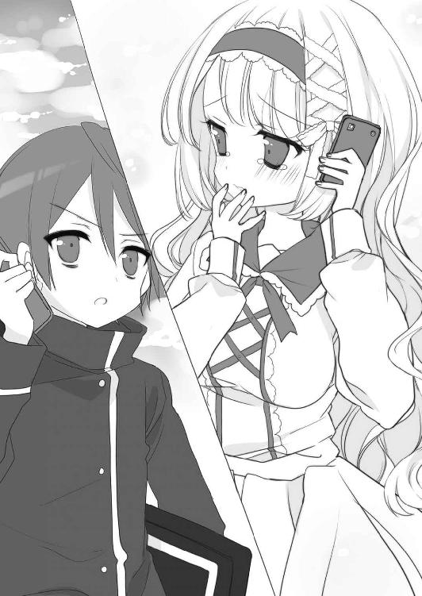
御車響子の声が、再び涙で湿っているのがわかった。
「待っているわ、わたし」
彼女の癒しの声色が、俺の足を軽くしてくれる。
「あの日、わたしの秘密を見られた相手がえーくんでよかった」
俺が聞きたかったその言葉を、彼女の声が紡いでいる。
レインボーブリッジの向こうに、まだ逆ピラミッドの影は見えない。だけど。
俺の心は、会場で待つ彼女へ一直線に向かっていた。
□
ビッグサイトに到着すると、すでに一般参加者がさかんに入場している時間帯だった。
「うぉら～～～～......！」
声を出して気合いを入れ、大階段の真ん中のスロープを、カーゴで一気に駆け上がる。
「何あの人、手搬入？」
「えっ、印刷所の人じゃないの？」
「だとしたら車で裏に運ぶでしょ、マジキチすぎ」
なんとでも言え。俺はすでにビッグサイトでＢＬ同人誌を買いまくって恥を掻き捨てた身だ。学校でも、授業中に漫画原稿を落としてしまうくらいの腐男子で通っているし、怖いものなんてもう何もない。
もう一般参加者の待機列は解消していて、俺はすんなり出入口から建物内に入って、西ホールへの通路を大カートで突っ走った。
「走らないでください、危ないですよ！」
わかってる。周りの人にも気をつけてる。でも俺は一刻も早く本を届けたい。
足はすでにガクガクで、台車を押す手も痺れて感覚がない。最後の力を振り絞って、ホールに入ってスペースを探した。
御車響子のいる場所、俺のゴールが近づいてくる。そして。
「えーくん......！」
台車を押してきた俺を見て、スペース内で立ったままコピー本を売っていた御車響子は目を丸くした。
「ありがとう......！ その台車、どうやって運んでいらしたの？」
びっくりしながらも、その顔は安堵と歓喜で満ちている。
（......そうだ。俺はこの顔が見たかったんだ）
俺自身のため、だなんて言いながら、ちゃんと彼女から報酬を欲しがっていた自分の図々しさに、心で苦笑する。
「あとで話すから、とにかく本を出そう」
彼女のスペースの周りには、コピー本を求める人だけで島中に不釣り合いなほどの人だかりができていた。台車を片づけ、段ボール箱から出した新刊を見本誌提出して、俺は彼女に加勢して売り子に入った。
「うわっ、何ここ、配置ミス？ 人気サークルが島中に来ちゃった？」
「いや、ピクシブのランカーがオフ初参加らしいよ。今から販売開始だって」
「へえ～、じゃあ私も並ぼう」
たちまち列ができて、通りすがりの人々が、身動きもできないほどの通路の混雑に顔をしかめていた。
「すいません、最後尾札の用意をお願いします」
すぐにスタッフの人が列を整理しに来て、御車響子は空いた段ボール箱の蓋をカッターで切って、マジックで「ウ‐18 最後尾」と書いて渡した。
「全種類一冊ずつお願いします」
「はい......千二百円です」
目の前にやってくるお客さんに、値札を見ながら金額を計算して伝え、本を渡す。
「一冊ずつお願いします」
「はい、千二百円です」
御車響子が魂をこめて描いた漫画を、お金を払ってでも読みたいと思ってくれる人が、俺の脳内だけでなく、確かに実在した。そのことが純粋に嬉しい。
「......よかったね」
販売の合間に段ボール箱から新刊を出している彼女に声をかけると、御車響子はまぶしいほどの笑顔で俺を見上げた。
「ありがとう。本当に、えーくんのおかげだわ......」
その笑顔は、これまで見たどの彼女の顔よりも美しく見えて。
（オタクだって腐女子だって、御車響子は可愛い）
原稿に向かうひたむきな表情、好きなものを語る目の輝き、夢を見つめるまっすぐな瞳......そんな一つ一つの顔が、彼女の秘密を知らなければ見られなかったものだから。
完璧なお嬢様でない、腐女子の御車響子を知って、がっかりした日もあった。でも、今の俺は、自分だけがそれを知ることができたことを、神様に心から感謝する。
それから二時間ほど、俺と御車響子は立ったままノンストップで本を売りつづけた。
「ありがとうございました」
最後の一冊が売りきれると、列に並んでいたお客さんたちは残念そうに解散していく。
「......やっぱり、えーくんの言う通り五百ずつ刷っていればよかったわ。ごめんなさい」
申し訳なさそうに彼女たちを見送りながら、御車響子は呟く。
「それに、搬入部数の大幅追加を申請し忘れていて、本部に怒られてしまったし......」
「それは次の反省にしよう。君のイベント参加は、これからも続くんだろ？」
俺が言うと、彼女は眉を下げ、目元を染めて俺を見上げる。
「......さっき言ってくださったこと、本当？」
「え？」
「これからも、わたしの同人活動をサポートしてくださるって」
「ああ......本当だよ」
それはむしろ、俺の方が心から望むことで。
「君を見ていて思ったんだ。俺も、自分が熱中できるものを見つけたい。君の傍にいたら、俺はそれが見つけられそうな気がする。だから、御車さんさえよければ......」
「いいに決まっているわ。本当に嬉しい」
即答した彼女は、そこでさらに頬を赤らめた。
「......ねえ、えーくん。さっきわたし、気づいたことがあるの。えーくんが台所で、わたしの頭を撫でてくれたときね......」
なんだ......？
ドギマギしたような彼女の様子に、俺の胸も高鳴ってくる。
──わたし、えーくんのことが好きみたい......。
そんな幻聴を聴きながらドキドキしていると、彼女は散々もったいつけたそぶりのあとで、恥ずかしそうに口を開いた。
「えーくんって、わたしが生まれて初めて好きになった男の人に似ているわ」
「......えっっ!?」
まさか、まさか。今度という今度は、予想が当たってしまった......!?
卒倒しそうな興奮が続くこと数秒、彼女はこう続けた。
「『忍王忍太郎』の十井先生......。ダメダメな生徒たちに振り回されながらもピンチのときには助けずにはいられない包容力のある性格、ものすごく素敵な受けよね......」
「って、やっぱりＢＬかよ！」
御車響子は、どこまでも期待通りの腐女子だった。
そうしてともかく、御車響子の生まれて初めてのサークル参加は大成功に終わった。
彼女と共に閉場を拍手で迎え、夕方、疲れきって帰った俺には安穏と休息が待っていた......はずだったのだが。
「......あ！」
御車響子と別々に帰宅し、自分の部屋に戻ったとき思い出した。
「やべえ......」
床に落ちている花垣の同人誌を見て、昨夜の記憶が蘇る。
──あーっ思い出した！ 俺、部屋で用事があったんだ！
我ながらひどいことをしてしまった。彼女は何か言いかけていたのに、本を読んでいない罪悪感から半ば無視して部屋に帰ってしまった。
（......今から感想を言いに行こう）
小説は最後まで読みきったし、何より純粋に面白かった。そのことを彼女に伝えたい。
そう思って、部屋のドアを開けたときだった。
「......うわっ!?」
目の前の廊下に、花垣が立っていた。部屋着とは違うギャルっぽいミニ丈のワンピース姿で、彼女の方もびっくりしたように目を見開いている。今まさにドアをノックするところだったのか、胸の高さで右手の拳を握っていた。
「......びっくりした......」
低い声で呟いた彼女は、俺を見て思い出したように表情を険しくする。
「......あっ、そうだ、花垣さん！」
その様子を見て、俺から急いで口を開いた。
「読んだよ、本！ すごく良かった！ 感動した！ 面白かったよ！」
もっと色々言えることはあったはずなのに、自分の感想のボキャブラリーの少なさに、喋っていて我ながら愕然とする。
「それに......えーっと......文章もそれほど難しくなかったし、内容もすごく良くて......」
「もういいです」
一瞬面食らった様子になった花垣は、さっきより怒った顔つきで俺の言葉を遮る。
「......別に、もういいです。わかったから。あの本、どうせ会長に頼まれたんでしょ」
何を言われたのか、理解するのに数秒の時間を要した。
「......なんだって......？」
会長......。生徒会長......、御車響子。
どうして花垣が、俺と彼女の秘密を知ってるんだ......？
「......なんだよ、それ。どういう意味だ？」
花垣は答えない。顎を引いて上目づかいにじっと俺を見つめ、何かを探るように黒目の奥を光らせている。
「おい、答えてくれよ。一体どうして君が......」
「先輩のバカ！」
じれったくなって声を荒らげかけたとき、花垣が爆発したかのように叫んだ。
「ウソツキ！ 先輩が同人買いに来てくれたとき、ウチ、すっごく嬉しかったのに！」
「......え......」
「先輩がウチの本を買いに来なかったら、ウチだって先輩のことなんか......」
そこで口をつぐんだ彼女は、ふてくされたように俯く。
「......花垣、さん......？」
「ウチ、見たんです。今日のビッグサイトの帽バスオンリーで」
そう言って、顔を上げてキッと俺をにらむ。
「先輩と会長、本売ってましたよね。ほら」
こちらが何か言う暇もないほど間髪を容れず、彼女は後ろ手に持っていた鞄から二冊の同人誌を出す。
「あっ......！」
その表紙のイラストは、一生忘れないくらい目に焼き付いている。さっき完売した、御車響子の記念すべき初同人誌だった。
「それは......」
「びっくりするだろうなあ、清聖のみんな。写植してあるけど、所々手書きのセリフがあるから、見る人が見たら会長の字だってわかるだろうし」
「やめてくれ！」
頭の中が真っ白だった。
俺は甘かった。オタク荘の住人はみんな年季の入った腐女子で、数週間前のオールジャンルイベントで一堂に会している。こういう危険性は考えるまでもなくわかっていたはずだ。花垣のうたプソ本を買う御車響子が帽バスで本を出すのだから、花垣が帽バスオンリーの会場に来る可能性だって、充分考えられたはずだった。
「君だって......趣味のことバラされたくないんだろ？ だったら彼女の身になって......」
「別に、誰もバラすだなんて言ってませんよ」
「えっ!?」
「でもまあ、黙っておくには条件がありますけど」
冷や汗まみれの俺を見て、花垣は心なしか緊張した面持ちで口を開く。
「......先輩、ウチと付き合ってください」
「............!?」
なんだって......!?
またしても思考停止に陥った俺を、花垣はちらっと見上げて目を眇める。
「そうしたら、これのことは秘密にしておいてもいいんだけどなあ......」
独り言のようにひっそりと、彼女は甘い余韻の残る声で囁いたのだった。
あとがき
はじめまして、またはお久しぶりです。この度は『オタク荘の腐ってやがるお嬢様たち』をお手に取ってくださり、ありがとうございます。
突然ですが、私が同人誌と出合ったのは中学一年生のときのことでした。
当時、生まれて初めてプレイしたＲＰＧ、ＦＦ６にハマっていたオタク初心者の私は、コミケと二次創作同人誌の存在を知って「好きなキャラたちが動いて会話するところをもっと見たい」という実に子どもらしい無邪気な欲望を胸に、コミケに向かいました。
今ほどインターネットの発達していなかった時代、カタログを見るくらいしか下調べのしようもなく、初心者があの大空間の中に放り込まれたらどうなるか。
迷子です。友達と一緒だったような気がしますが、友達も初心者なのでうろうろと同じところを歩き回りました。だって、どこの本を買ったらいいかわからないのです......。
困り果てて手ぶらで帰ろうかと思ったとき、ＦＦスペースの中でひときわ人が集まっているサークルさんを見つけました。新刊の表紙に描いてあったのは特に好きでもないＦ兄弟でしたが（私はＬが好きでした）、そんなに人気なら面白いのでは......とお姉さんたちにまぎれて一冊購入し、家に帰っていそいそとページをめくって目ん玉が飛び出ました。
それは、18禁のＢＬ漫画でした......！
まだ男女のアレな漫画も目にしたことがない頃に、いきなりのＢＬ18禁シーン（しかも兄弟モノ）。物凄い衝撃でした。当時は18禁表記や購入時の年齢確認が徹底されていない時代で、中学生でも普通に18禁同人誌が買えたのです。
図らずも人生で初めてのＢＬ同人誌（しかも18禁）を中一にして手に入れてしまったおませさんな私は、とりあえずそれを学校へ持って行って友達に見せました。
「こんなの買っちゃったんだけど、どうしよう！」
どうしようもくそも買っちゃったんだからないのですが、あまりの衝撃で見せびらかさずにはおれませんでした。うちの学校は中高一貫の私立女子校で、小学部からのエスカレーター組の中にはその手の文化に詳しい子もいました。
「ああ、やおい本ね。見せてよ」
事情通の風格で私からそれを受け取った友達は、ホームルーム中にもかかわらず熱心にその18禁同人誌を読みふけりました。
「そこ、何を読んでいる！」
そして、あっさり先生に見つかりました。
「なんだ、こんなスケベなものを読んで......しかも男同士じゃないか。変態か？」
「違うんです、これは長岡さんので！」
恥までかかされました。
「誰のものでも漫画は違反物だ。これは高校卒業まで預かっておくぞ」
筋骨隆々の体育科の男性担任は、そう言って私が生まれて初めて買った同人誌（18禁ＢＬ）を没収していきました。
中一のときに「高校卒業まで」。途方もない期間です。少女だって大人になります。
「ごめんね。これ、一応渡しておくから......卒業して本返してもらったら返してね」
と、本を取り上げられた友達は弁償金として私に千円くれました。私はそれを綺麗な色の封筒に入れ、自宅の机の引き出しの奥に大事にしまっておきました。
その後、私はスクエニ系のＲＰＧを中心にときメモ（男性向け）などの恋愛シミュレーションにも手を出すぬるいオタクゲーマーに成長しましたが、いずれもそんなに同人誌を欲するようなジャンルではなかったので、買い物戦士としてのレベルは上がらないまま、それでもなぜかコミケに行きつづけました。コミケにはそういう魔力があります。にぎやかで楽しい場所が好きだけど、リア充ばっかりいるところはちょっと怖い！ そんな私が「お祭り感」を楽しめる数少ない場所がコミケでした。
ちなみに、あの千円はどうなったか？
数年前、親友と一緒にコミケに行った帰り、私は東ホール三階のレストランで、机の奥から出てきた綺麗な封筒の中の千円でビールを買いました。私は大人になりました。
よって、人生初購入の同人誌は私の手元には残っていません。先生のウソツキ！
今回この作品を書くに当たっては、モデルとなる場所を訪れたり、知人の女性向け同人漫画家の方々に意見を聞いたりして、かなりリアルな「女オタクの世界」を描きました。その甲斐あってか、内容のチェックをお願いした友達が「読んでる間、始終真顔だったよ......」と私に苦情（？）を訴えるくらい、現実に近いものになりました。
私は女性オタクの皆様に申し訳なくて仕方ありません。私は書きたくないと言ったのですが、担当さんが「ラノベ界に女性作家は他にもいるんですよ、ネタは早い者勝ちですよ。じゃあいつ書くの!?」と言うので、つい「今でしょ！」（※二〇一三年当時）と答えてしまいました。
次巻もリアルを目指します。森山しじみ様、担当様、今後もよろしくお願いいたします。
それでは、二巻でお会いできますように！
二〇一四年二月 長岡マキ子
オタク荘の腐ってやがる
お嬢様たち
長岡マキ子
平成26年3月25日 発行
発行者 佐藤 忍
発行所 株式会社ＫＡＤＯＫＡＷＡ
〒102-8177 東京都千代田区富士見2-13-3
03-3238-8745（営業）
http://www.kadokawa.co.jp/
企画・編集 富士見書房
03-3238-8585（編集）
http://fujimishobo.jp
(C)Makiko Nagaoka, Sijimi Moriyama 2014
本電子書籍は下記にもとづいて制作しました
富士見ファンタジア文庫『オタク荘の腐ってやがるお嬢様たち』平成26年3月25日初版発行